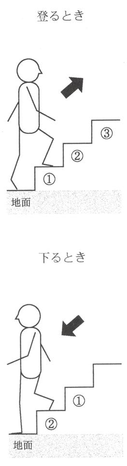

| ＜推理クイズ＞あなたは犯罪心理捜査官 | |
| 作田明 | |
| (1996) | |
〈推理クイズ〉
あなたは犯罪心理捜査官
作田 明監修
はじめに―プロファイリングは犯罪知見の蓄積に貢献する！
犯罪心理学は、犯罪にかかわる人間心理の分析を目的として、近年急速に脚光を浴びるようになった学問領域である。じつは、犯罪学自体は比較的古くからあった学問であったが、時代とともに分化し専門化していった結果、今日では犯罪心理学、犯罪社会学、犯罪生物学など、多くの分野に分かれるようになってきたという経緯がある。
犯罪心理学は、二十世紀になって急速に発達した心理学や精神分析学を基盤として、今日の隆盛をみている。かつては、一部の文学者や哲学者の専売特許であった人間心理への洞察に、科学の光があてられるようになり、ごく普通の人々にとってもわかりやすい形で呈示されるようになってきたところから、ひいては犯罪者の心理分析についても理解が進んできたのである。
こうして、犯罪者が平均的な一般人とまったく異質な存在ではなく、じつは私たちとおなじ人間であった人々が、たまたま誤まった教育や劣等な環境、あるいは不幸なめぐりあわせによって犯罪行動にいたったということ、見かたをかえれば、彼らはやむをえずして犯罪にまきこまれた人たちであったという認識は、少しずつではあるが、広まりつつあると思われるのである。
大衆化社会における犯罪心理学の発展は、アメリカ合衆国において、プロファイリングという手法を生みだすこととなった。これは犯罪現場や被害者、その他の証拠をくわしく分析することによって、犯罪者の動機や行動パターンを推理し、犯人像を割り出す方法である。
それは、きわめて広大な国土における犯罪の激増、独立した地方政府の存在と中央政府の限られた捜査権限のいっぽうで、コンピュータに代表される情報処理技術の発達という、アメリカの特殊な事情によるところが大きかったが、やがて『ＦＢＩ心理分析官』や映画『羊たちの沈黙』の成功により、一気に全世界に知られるようになったのである。
わが国においては、プロファイリングと、それを犯罪捜査に大規模に活用しようとすることについては、捜査当局と犯罪学者のいずれにおいても異論が多いことは否定できない。
しかし、私はつぎの三つの観点から、プロファイリングの意義を認めたいと思っている。
第一に、プロファイリングは犯罪についての知見の蓄積に大いに貢献するだろう。今日の日本では、凶悪犯罪のパターンと犯罪者の生育歴、性格等について、そのすべてを分類、整理している機関はひとつもないが、それが可能となれば、凶悪犯罪（特に広域犯罪）の迅速な摘発に、大いに役立つであろうことは疑いないだろう。
第二に、プロファイリングシステムの確立は、これまでの法務、警察当局の硬直化しつつある犯罪捜査体制を一変することができるかもしれない。オウム真理教事件にみられるような危機管理能力の低下と、日本の安全神話の崩壊を少なからず防止できるかもしれないのである。
第三に、プロファイングには犯罪学研究に大きな転機をもたらす可能性があるだろうということである。私は、将来第一線の犯罪学者の英知を集約し、かつ犯罪捜査の前線と有機的に結合した犯罪研究組織の確立が必要となるであろうと考えているが、そうした機構が設立され、そのなかでプロファイリングの技法についても、さらに向上が図られれば、犯罪学が国民的広がりをもった学問となりうると思われるのである。
私は、この書が、犯罪学とプロファイリングの理解を深めるうえで役立つことになれば、たいへん意義深いことであると思っている。
一九九六年 秋
作田 明
ＣＯＮＴＥＮＴＳ
コラム―
第１章
犯罪心理捜査官 橘 櫻子のミステリー・ファイル
あるときは精神科臨床医として患者の治療にあたりあるときは神奈川県警犯罪心理分析 チームの顧問として難事件怪事件に取り組む......
美しき精神科医・橘櫻子が鋭く異常犯の犯罪心理を暴いていく！
ＦＩＬＥ１ バラバラ死体の謎
江戸時代以来の呪われた地で起きた猟奇的バラバラ殺人事件！ 変質者による快楽殺人か、それとも怨霊の祟りなのか......？
「ここだ!! あったぞ―――っ!! 」
苔むした石碑のかげに、そ れ は転がっていた。やけに細長い包み、黒ずんだ染み、ドロリと滲み出す液汁、破れ目からのぞくブヨブヨした肉塊。
無数に群がる蝿の羽音が煩 わしい。ムッとした腐敗臭が鼻をつく。
「おい、すぐ署に連絡しろ」
西田刑事は雑草の茂みから身を起こし、ひどく不快げに顔を背 けた。
後方で制服姿の若い警官が、必死に吐き気をこらえている。
「今度は、『足』が出たってな!! 」
〈厄介な事件になりそうだ......〉
西田は、先日からの一連の捜査を思い返していた。
東京との県境近くの多摩丘陵の住宅地で、死体の手足がつぎつぎと見つかった。
発見場所は、いずれも身体の各部分に符合するかのように『手塚』・『足塚』と呼ばれる旧跡。聞き込みを開始した西田は、妙な噂を耳にした。
「『ご側室様』の崇 りだ」
地元には悲惨な伝説が語り継がれていた。
『江戸時代、当地を統治していた代官の奥方が嫉妬に狂って側室を惨殺した。正妻とのあいだに長らく跡継ぎに恵まれなかった代官が、わが子を宿した側室を溺愛した果ての出来事だった。首と四肢を切り取られた側室の死体は、無残にも投げ捨てられた。それ以来、家 中 では不吉な出来事が相つぎ、領内の民は崇りを口にし恐れおののいた。人々は側室の霊を慰めるため、バラバラにされた身体を手厚く葬 り祀 ったという』
〈伝説に符合するバラバラ殺人か......〉
西田刑事は歩きまわった。早朝から夜中まで、根気よく歩きまわって情報を集めるのが彼の捜査法だった。
指紋の照合の結果、詐欺の前科のあった被害者の身元が判明した。
中条佳代。二十四歳。元クラブホステス。先月から行方不明となっていた。
容疑者は二名。被害者・佳代の愛人で建設会社社長の倉持大造と、その妻の美貴子。
大造は社長とは名ばかりの婿 養子。妻の美貴子にはまったく頭の上がらぬ恐妻家。
一方、美貴子はお嬢様育ちでプライドも高く、夫の大造に愛人・佳代の存在が発覚してからは別居状態。夫婦の間あいだは遠からず離婚も取り沙汰されていた。
被害者の身元が判明した翌日、今度は『首』が発見された。『首神社』の境内で、近所の住人が、切断された佳代の首を発見したのだった。
「崇りだ。やっぱり、祟りなんだ！」
「お怒りだ。ご側室様の、お怒りだ！」
神社の周辺では、騒ぎがますます大きくなっていった。
〈夫の愛人との三角関係か......。どうやら妻が怪しいな〉
西田刑事は、倉持美貴子の周辺を徹底的にあらった。
そして、不審な車両の目撃証言を得て、ついに倉持美貴子がプライベートに使っている別荘を家宅捜索。ガレージの一角で大量のルミノール反応を検出。美貴子名義の車のトランクからは、佳代のものと思われる毛髪が採取されたのだった。だが――。
「主人の仕 業 に決まってるわ!! あたくしに罪をなすりつけようとして」
任意出頭してきた美貴子は、ガンとして犯行を否認した。
「いぁ、まったく身に覚えのないことです!! 女房のほうこそ」
当然、夫の大造は反論。二人の供述は真っ向から対立した。
〈いったい、どっちが犯人なんだ!? 〉
西田の足を使った捜査方法では、ここまでが限界だった。決定的な決め手を欠いたまま、捜査は膠 着 状態に陥った。
「橘櫻子です」
と、名刺を差し出す細い指の白さに、西田刑事は驚き、その肩書に二度驚いた。
〈大学講師、精神科医、そして神奈川県警『犯罪心理分析（プロファイリング）チーム』の顧問だァ!? 〉
「あ、あなたが本部からの応援......？」
西田は慌てて姿勢を正した。
「プロファイリングってのは、具体的にどういう作業なんですか？」
資料室の机に向かい合った櫻子に、西田が素朴な質問をした。
「犯罪に、ある心理的パターンを発見し、それによって犯人の特徴を推測する方法。つまり、犯人の心理面から捜査をしていくやりかたね」
講師の顔をもつ櫻子は、わかりやすく答えたつもりだった。
「はぁ......。ところで、ズバリ。今度の事件はどうなんでしょう？ 状況からみて、被害者の愛人の妻・倉持美貴子が怪しいと思っているんですが？」
西田は身を乗り出して櫻子に尋ねた。
「私は、物的証拠と心理的証拠が矛盾したら、心理的証拠を優先して考えます。物的証拠は偽造も可能ですから」
櫻子は冷静にいう。
「つまり？」
「事件の背景を流れる心理的な動機を見るかぎり、被害者の愛人である倉持大造が疑わしいわね」
「ほぉ～、ずいぶんはっきりとおっしゃいますね」
自分の判断とは逆に答えた櫻子に、西田は皮肉な口調でいった。
「目の前の現実と目に見えぬ真実。大好きな詩人がこんなふうにいっています。『昼のお星は目に見えぬ 見えぬけれどもあるんだよ 見えぬものでもあるんだよ』」
「はぁ......」
西田は呆気にとられて櫻子を見つめた。
〈おいおい、大丈夫かよ？ 現場はお嬢サマのご想像なんかと大違いなんだぜ！〉
「想像じゃなくてプロファイリングの結果を語っているんですよ」
櫻子は西田の心を見透かしたようにニッコリ笑うと、報告書に目を落として具体的に分析を語りはじめた。
「『身体の各部分は発見当時、上質のシーツですべてきちんと覆われていた』とありますね。一般に、死体をていねいに包む事例は、加害者が被害者に対して感情的な絆 を捨てきれなかったことを意味するの。つまり、犯人は家族や友人など身近な人物である場合が多い。死体が発見されたとき、無残な状態で人目に触れるのが忍びないんでしょうね」
「そういわれればそうですが......」西田は、いまひとつ納得がいかない。「あの、初歩的な質問なんですが、死体をバラバラにするなんて、そもそも異常なイメージが拭いきれないんですけど。どうしても、変質者の犯行が頭に浮かんでくるわけで」
「確かに、残虐な行為に喜びを見出し、それ自体を目的とする犯罪者も存在します。いわゆる『快楽殺人』。でも、死体分割には、ふつう身元を隠したり、運びやすさという目的が主に考えられるの。資料を読むかぎり、今回のケースには、どれも当てはまると思えないわ」
「猟奇殺人でもない。死体を運ぶためでもない。......とすると!? 」
西田はますます混乱する。
「いま断言できるのは、犯行が計画的ってこと。決して衝動殺人ではないこと」
「えっ？ でも、どんな根拠があって――!? 」
「噂を聞いてるでしょう。犯人は地元の伝説を利用して、警察の捜査を撹乱した節があります。手、足、つぎは首が見つかるというぐあいに」
「あの『ご側室様の祟り』ってヤツですね」
「伝説が染みついた土地に起こった事件。地元の誰もが、知らず知らずのうちに『本妻の愛人殺し』を連想してしまう。それが、たとえ警察官であっても」
「あっ、そうか」
西田は思わず頷く。
「手足や首は、わざと発見されやすい場所に捨てられた。いわば、カモフラージュだとしたら？」
「カモフラージュ？」
「唯一、胴体だけは発見されていないのは、なぜかしら？」
「なぜって、たまたまじゃないですか......」
「たまたま？――これは計画殺人だといったはずよ。偶然でなく必然だとしたら。犯人にとって胴体だけは発見されては都合が悪いのじゃないかしら？」
「でも、なぜ!? 」
「まだ確信がもてないの。とにかく、胴体の発見が先決。西田さん、あなたが足で調べた倉持大造のすべてを教えてください」
櫻子にいわれて、西田は知るかぎりのことを話した。何の収穫もないまま虚しく一時間近くも喋りつづけ、語るべき事実も底をついたころ――。
「......あっ、そうそう。倉持って、あれで案外、信心深いんですかねぇ？ 近所の寺に地蔵の祠 を寄進したそうです」
櫻子は、何気ない西田のその一言に、パッと身を乗り出した。
「地蔵の祠!! それよ、それだわ!! 」
「えっ......」
「すぐに祠のコンクリートの土台を調べてちょうだい!! 私の推理が正しければ、間違いなくそこにあるはずよ。被害者の胴体が!! 」
櫻子は断定した。
犯人の倉持が死体をバラバラに解体した真の目的は!?
ＦＩＬＥ１ 犯人は被害者が妊娠中という事実の発覚を恐れ、バラバラ事件を偽装した
犯人の倉持大造は、愛人の中条佳代に身ごもった子供の認知を迫られていた。別居中の妻との離婚問題がこじれ、養子の立場である大造は無一文で追い出されそうな状況にあった――苦労して築き上げた地位や財産を失いたくはない！
追いつめられた大造は、とうとう決意した。
〈......佳代を殺し、妻の美貴子を犯人に仕立てよう!! 〉
〈だが、死体の身元はどうせ明らかになるだろう。解剖の結果、胎児の血液型やＤＮＡから父親が限定されれば、疑惑は一気に俺のところへ集中してしまう......〉
胎児だけは――胎児のある胴体だけは何としても隠さなければいけなかった!!
知恵を絞った大造は、苦肉の策として、佳代の死体を解体しバラバラ事件をでっちあげた。そして、手や足をわざと目立つ場所に遺棄し注目を集めることで、人々の記憶を喚起し地元の伝説に関心を寄せさせた。
『嫉妬深い妻が、夫の愛人を惨殺した』のか!?
捜査は難航し、時間稼ぎに成功した大造は、その間に何とか胴体だけを隠しきろうと画策したのだった。
「でも、お地蔵さんの祠とは、また、何でそんなところに......？」
西田は首をひねった。
「地蔵は、幼くして死んだ子供の魂の救い手でしょう。結果的に我が子を手にかけてしまった大造の、せめてもの罪滅ぼしだったんじゃないかしら。もちろん、意識下の感情ですけど」櫻子は低い声でいった。
「......なるほど、これも『隠しきれなかった心理的証拠』ってやつですね」
西田は感心して頷く。
〈『プロファイリング』ねぇ。どうして、なかなかのもんじゃないか!! 〉
西田は笑顔で櫻子に目をやるが、伏せた彼女の目は微かに潤んでいた。
〈プロファイラーとして、犯罪の心理分析はプロでも、現実の生臭い事件には、まだまだズブの素人なんだな......〉
「橘先生、事件解決のお礼に一杯おごらせてください。屋台の焼き鳥で口に合うなら」
西田刑事は、元気づけるように櫻子の肩を叩いて立ち上がった。
ＦＩＬＥ２ 呪われた自動車
死を呼ぶ呪われた車が惨劇を招く。無意識のうちに轢き逃げ殺人を起こした容疑者の無実の叫びは、はたして櫻子に届くか!?
「......俺のせいじゃない！ く、車だ......あの、『呪われた車』のせいなんだ!! 」
電話の向こうから切迫した声が訴えかけてくる。西田刑事は最初、我が耳を疑った。必死に苦境を伝えようとしているのは、たしかに聞き覚えのある親友の声の響きなのだが。とにかく突然で、いっこうにわけがわからない。
「頼むから、話を聞いてくれ。俺は、俺は、人を殺してなんかいない!! 」
「呪われた車!? 人殺し!? 」
受話器を握りしめる西田の手に思わず力がこもり、聞き返した。
電話の相手、加藤洋介は西田にとって幼なじみの親友だ。昔から不思議とウマがあい、気のおけない交際をつづけてきた。風采はあがらぬが人一倍正義感の強い弁護士・加藤と、神奈川県警・万年ヒラ刑事の西田。進む道は違っていても、いまだにお互いを呼び捨てにしあう間柄をずっと通していた。加藤はすっかりうわずっていて、初めさっぱり要領を得なかったが、その怪奇な話の内容をまとめると、こうだった。
その早朝、加藤は近郊の別荘地へと愛車を飛ばしていた。徹夜明けの重い瞼をしばたたかせながら、間断なく襲う睡魔と戦いながらの運転だった。
芯まで疲れきった目に、清 々 しい朝の光が眩しい。ごたごたした街中を抜けると、道路の両側に、ようやく郊外らしい風景が広がりはじめた。
目的は、ある横領事件の話し合い。相手は悪質な札つきのサギ師だ。加藤は、連日、関係者をあたり、ようやく告訴の段階までこぎつけていた。相手のサギ師は、のらりくらりと逃げの一手で開き直ろうとしている。今日こそ、はっきり決着をつけねばならない。
道は野原のなかをまっすぐにつき抜け、まるで、果てしなくつづくようにも思えた。
長い一本道。すれちがう対向車は一台も来ない。やがて、行く手が急に曇りだした。
〈......変だな、こんな時刻に暗くなりだすなんて？〉
たちまち、車はひどい霧に包まれてしまった。これほど深い霧は、加藤にとっても、まったく初めての経験に思えた。前方のライトもぼんやり霞んでしまうほどだ。
〈つい今さっきまで、あんなにいい天気だったのに......〉
ぼうっと立ちこめる乳白色の壁に囲まれているうち、自分がどこか真っ暗な見知らぬ場所に落ちていくような錯覚すら覚える。
〈なんだかフッと吸いこまれそうだ......不思議な気分になる〉
速度を落としてしばらく走りつづけるうち、唐突に霧が晴れた。周囲に、ふたたび明るい朝の景色が返ってきた。陽光に輝く緑の木立がつぎつぎと左右を流れすぎていく。ふと気づくと、目的地がもう目と鼻の先に迫っていた。
だが、別荘に目的のサギ師はいない。いくら待っても現われる気配はなかった。
〈しかし、不思議な経験をしたな～。あの突然の霧は何だったんだ......？〉
落胆の気持ちで自宅に戻った加藤を、二人連れの刑事の姿が待ちかまえていた。用件を聞き、加藤は愕然とした。「ひ、轢き逃げの容疑!? 」
「署まで、ご同行願います。車は預からせていただきます」
被害者の名前を知った瞬間、加藤は頭のなかが混乱し、ただ茫然と立ちすくむしかなかった。死亡したのはなんと、自分が待ちぼうけたサギ師、当人だったのだ!!
「信じてくれ、俺は轢き逃げをした覚えはない!! ましてや狙って殺すなんて断じて!! 」懸命に無実を訴えかける友の悲痛な叫びが、西田の胸に突き刺さる。
〈ヤツは絶対にやっていない〉
それは刑事としてではなく、親友を思いやる一人の男としての確信だった。西田はさっそく所轄の知人に内密で問い合わせてみた。
捜査に手落ちはないという予想どおりの返事が返ってきた。取り調べの経過を聞くかぎり、どこにも矛盾はないようだった。目撃者がはっきりとナンバーを記憶していた。被害者の衣服に付着した塗料も一致した。おまけに車のバンパーの凹み。加藤が被害者と係争中の立場にあるのは不利だった。現場にブレーキの痕がないことから、悪質な轢き逃げの疑いが濃厚とされていた。
〈加藤が轢き逃げをするはずがない。ひょっとして......呪われた車のせい？〉
当惑する西田は、ふと、ある出来事を思い出した。
地味で堅実な暮らしぶりの加藤にとって、ただひとつの自慢が愛用の外車だった。中古だが、どっしりと頑丈そうなボディ。持ち主と釣り合っていると笑い合ったのだが。
「この車......ちょっと変な噂があったんだ。『呪われた車』とか。なぁに、気にしちゃいないさ。だからこそ、破格の値段で手に入れられたんだから」
「大丈夫か、とんだ安物買いにならなきゃいいがな」
一 縷 の望みをもって車の過去を洗った西田は、驚くべき証言に突き当たった。以前の持ち主も轢き逃げ事件を起こして車を手放していたのだ。ドライバーは、やはり、急に深い霧に巻かれたあとで記憶が途絶えたのだという。さらに、その先の持ち主を遡ってみると、アメリカで新車として購入されていることが判明した。そして、最初のオーナーもまた、轢き逃げで殺人の罪に問われていたのだ。
『死を呼ぶ呪われた車!! 』――無残に轢き殺された者たちの怨念が、新たな犠牲者の魂を求めて、運転手につぎつぎと事故を起こさせているのか!?
〈信じられない！ だが、今度ばかりは......本気で信じざるをえないのか!? 〉
背筋にゾッと走る寒気を西田は懸命に振り払おうとした。いくらよくできた怪談話をしても警察が相手にするはずがない。それは、刑事である西田自身、わかりすぎるほどわかっていた。自分の捜査に限界を感じて行き詰まった西田は、ついに、ある大学の研究室の扉を叩いた。そこに待つのは、神奈川県警『犯罪心理分析（プロファイリング）チーム』特別顧問・橘櫻子。
彼女は、現役の精神科医であり、大学の講師をも兼務するスーパーウーマンだった。ときにコンビを組んで事件解決に立ち向かう機会があっても、さえない中年刑事の西田にとって、どこか雲の上の人といった印象を拭い去れない。コツコツと足を使って歩きまわるのが取り柄の西田に、犯罪心理学や精神鑑定といった小難しい理屈はそもそも無縁なのだ。けれど、学問に裏打ちされた櫻子の卓越した推理能力には一目も二目も置いていた。
西田は最後の望みを櫻子に託してみようと決心した。
「『呪われた車』ねぇ......。正直いって、とても難しいケースだけど」
ありありと失望の色を浮かべる西田に対し、櫻子は専門家としての"ある可能性"を述べようとしていた。美しい瞳に宿る知性の閃きに今は期待を寄せるしかない。
「もう一度、状況を再考してみましょう――加藤さんは、連日の疲れを癒 す間もなく徹夜明けでハンドルを握っていた。対向車もないまっすぐな郊外の一本道を走りつづけたとき、疲労はピークに達していた。やがて、周囲は霧に包まれた......」
「たぶん、車は立派な外車で、きっとオートマチックね。シートは身体が埋まるほど、ふかふかで柔らか。とてもリラックスできる。もしかしたら、フロントガラスが濃い色でコーティングされているかもしれない。そうじゃなくて？」
「えっ、なぜ!? なぜ、見たこともない車のことを知っているのですか!? 」
まさに指摘のとおりだった。西田は唖然と櫻子の顔を見つめた。
さて、『呪われた車』の謎とは――!?
ＦＩＬＥ２ 『高速道路催眠現象（ハイウェイ・ヒプノーシス）』になったのだった
ハンドル操作がほとんど必要でない広いハイウェイを運転していると、単調で、刺激が少ないせいで、眠気を催してくることがある。無理をして、さらに運転をつづけていると、しだいに注意力が低下していき、方向感覚や時間の感覚までが失われてしまう。まるで、夢のなかにいるような状態でドライバーの脳裏にはしきりに空想がわきあがり、眼前に鮮やかなイメージとなって見えてくる――幻覚が起きたのだ。この時期がさらに進むと、睡魔の誘惑に負けて眠りこみ、大事故を引き起こす。
「高速道路催眠現象（ハイウェイ・ヒプノーシス）」は、車という狭い空間に一人閉じこめられて行動が制限される環境で、視覚刺激の単調さが長時間繰り返されて発生する。「人間の脳は、案外、『慣れ』ってものに弱いのね。ちょっと難しい説明になるけれど――入力する感覚刺激量が減少すると、大脳を覚醒状態に保っておくことが困難になってくる。注意力は低下し、意識が狭まり、一種の催眠状態に陥る」
理論的な解説は苦手だ。西田は単刀直入に質問した。
「要するに、ヤツ――加藤の身には何が起きたんでしょう？」
「多忙で睡眠時間が不規則だったり、あまり早い時刻に起きて身体のリズムが眠りから目覚めへ充分に切り替わってないと、よく、二度寝をしてしまうでしょう」
「......ええ。じゃ、つまり、加藤は運転しながら、半分眠ってたってことですか？」
「霧に包まれるように感じたのは、眠りに入る寸前だったせい。そこへ、散歩か何かしていた被害者が道路を横切ろうとした。霧が晴れたのは、人をはねた衝撃で意識がはっきりしたからだわ。だけど、重い外車ではショックが軽くて、完全に目がさめるまでにはいたらなかった。何が起きたか気づかぬままで走りすぎてしまったため、轢き逃げ、ひいては殺人の汚名を被る結果となった......過去、この車で似た事故が多発したのも、高級車の構造上の安楽設計がかえってアダになったのかも」
「いずれにせよ、故意に人を殺傷しようとしたんではないわけですね！」
西田は胸を撫で下ろした。
「ええ。結論は裁判所が出すことになるでしょうが、精神科医の意見が認められるのであれば、弁護側の証人として証言しますよ」
と、ニッコリ微笑んだ櫻子の笑顔を、西田は心から美しいと思った。
「よろしくお願いします」
ＦＩＬＥ３ コスプレ狂の死
コスプレ狂が不可解な死をとげた。常人には理解できぬアニメおたくの気まぐれの死か、それとも邪悪な意思によるものか!?
カラリと晴れ上がった青空の下、灰色の街並を忙しげに人や車が行き交っている。屋上から見下ろす都会の風景は、変わりばえのない退屈な眺めに映った。
〈ここから落ちたんじゃ、確かにひとたまりもないな......〉
はるか眼下の石畳に、白線で描かれた人間の形らしき痕跡が、かろうじて見分けられる。現場検証の跡だな、と眩いた西田刑事が、隣にたたずむ人影のほうをそっと窺 う。
そこには、長い髪を風になびかせた女性の姿が。神奈川県警『犯罪心理分析（プロファイリング）チーム』特別顧問の橘櫻子だった。
〈......こんな魅力的な人が殺伐とした犯罪現場を立ちまわってるのも、不思議な光景だな〉
西田は櫻子と視線が合うと、慌てて事件の概況を話しはじめた。
「死体は、この建物の真下に倒れていました。解剖の結果、死因は高所よりの転落による全身打撲と骨折。状況から判断して、飛び下り自殺とみなされたんですけれど......。実は、発見されたときの被害者の格好が――」
「何か、不審な点でも？」
櫻子の整った顔立ちが、西田のほうへ向き直る。
「はぁ。それが、妙な衣装を着こんでまして。空飛ぶヒーローを気取ったのか――」
死亡したのは高井直行（十九歳）。浪人生だった。この春も複数の大学受験にのぞんだが、すべて失敗に終わっていた。友人たちの話では、特に落ちこんだ気配もない。
唯一の趣味であるアニメ主人公のコスプレに異常な情熱を燃やしていたという。
「このごろ話題の、コスプレのことでしょう」
「ええ。残された日記にも、その......コスプレ？ ってのに関する話題ばかりが、びっしり書き連ねてありました。ありゃ、よっぽどの打ちこみ方だったんですな」
事件現場で捜査員たちが首をひねった原因は、この趣味に関連があるらしい。なぜなら、直行は派手なヒーローの衣装をまとって死んでいたからだ!!
「『スカイ・レンジャー』とかいいましたっけ。まあ、昔のスーパーマンのようなもんかな。戦闘服にブーツ。おまけにマントまで背負って」
「一種の幼児退行ね。直接、本人のカウンセリングをしたわけではないけど」
「とにかく、高井直行はヒーローの格好をして屋上から飛び下りた。本気で空を飛べるつもりでいたのか、それとも......」
「大 方 の意見は、自殺の方向で固まりつつあるんでしょう？」
「ええ、鉄棚に指紋が残ってましたし。このとおり、遺書？ ......らしきものも」
西田が差し出す一枚の紙片に、櫻子は目を落とした。
『オレは大空の勇者 正義のヒーロー
飛べ!! 飛べ!! スカイ・レンジャー!! 』
書きなぐりの文字の列に赤黒い染みがにじんでいる。
「念のため、本人の下宿の部屋にあったノート類などを調べてみました。もちろん、先ほどお話した日記の文字もです」
「筆跡鑑定の結果は？」
「同一人物が書いたものに間違いないとのことです」
もたれかかっていた鉄棚を離れると、西田は給水タンクのそばに歩み寄った。
「洋服があたりに散らばってました。着替えたんですね。たぶん、ここで......。ただ、どうしても腑に落ちないところがあるんですよ......」
「腑 に落ちないことって？」
振り向いた西田に、櫻子が形のいい眉をひそめた。
「......ほんの些細なことで、思いすごしかもしれないんですが」
と、西田は聞き込み捜査のときの疑問を話した。
数日後にコスプレファンの集会があるという。直行は、そこで行なわれるコンテストに出場の予定で、優勝を狙うんだと張りきっていた。出し物の『レンジャー特捜隊』は、陸・海・空、三名の隊員で編成され、仲間は二人。海の勇者『シー・レンジャー』、陸の勇者『ランド・レンジャー』、そして、直行の演じる予定が、空の勇者『スカイ・レンジャー』だった。
「......でも、おかしいんだよなぁ。死んだ直行が着てたのは『ランド・レンジャー』の陸戦用スーツじゃん。あれじゃ、空を飛べっこないさ」
そう仲間のひとりが証言したのだった。
「熱狂的オタクが大事なコスチュームを間違えるでしょうか!? 」
これが西田の疑問だった。
「確かに奇妙だわ......。生前にトラブルを抱えていた形跡は？」
「実は、恐喝事件で、一度、取り調べの対象になったことがあります」
ＴＶ番組『レンジャー特捜隊』の女性隊員だったアイドル・タレントに、直行は度重なる脅迫状を送った疑いがもたれていたのだ。
「担当マネージャーが激怒して息まいてましてね。この落とし前はキッチリつけさせてやるって、かなり荒っぽい調子でした。もともと、ヤクザ組織とつながりのあるプロダクション事務所のようですね」
結局、スキャンダルでタレント・イメージが傷つくことを恐れた現在の事務所の方針で、事件はウヤムヤとなっていた。その後、裏で何があったかは定かでない。
黙ってうなずく櫻子に、西田は自分の聞き込みの成果を話しつづけた。
「もうひとつ、高井直行は女性関係で問題を起こしています。こちらも正式に訴えが起こされなかったせいで、詳細は明らかじゃありません。ただ、相手の娘が入院中というだけで」
「......なんだか、あまりいい想像ができそうもないわね」
「娘の父親は県内の私立病院の院長です。お宅を訪ねて、それとなく事情を探ろうとしたんですが、言葉を濁してしまって」
「娘さんの件を口にしたとたん、父親の院長にキッと睨みつけられてしまいましたよ。なんとか話の糸口だけでもと頑張ってはみたんですが、どうにも」
「......つらい仕事ね、刑事って」
西田は、櫻子の言葉に照れくさそうにタバコの煙を吐き出し、独り言のように眩いた。
「立派な居間に豪勢なシャンデリアがぶら下がってました。高級そうな皮のソファが置かれ、ガラスケースには猟銃が飾られてた。上流家庭の雰囲気があふれてるって感じです。きっと箱入り娘だったんでしょうね、目のなかに入れても痛くないような」
高井のようなワルにかかっては、育ちのいいお嬢さんは絶好のカモだったのだろう。そう思うと、西田の心は痛んだ。それにしても、オタクというのは、ふつう内向的な性格の人間が多いのだろうに......。高井は浪人だというのに、アイドルは脅迫する、女性問題は起こすと、かなり問題のある人間だったようだ。
「死んだ人間を悪くいいたくないけれど、どうにも同情できませんな、このコスプレ野郎」
西田は吐き捨てるようにいって櫻子のほうを見た。彼女はうつむいて、じっとなにかを考えているようだった。
「高井直行の飛び下りは――やはり、自殺じゃないわ!! 」
しばしの沈黙の後、櫻子は断定的にいった。
「他殺とすると、少なくとも容疑者の可能性がありそうなのは二名。以前の脅迫事件で因縁のあるヤクザ上がりのマネージャーと、愛娘を傷つけられた病院長」
「待ってください！ 遺書めいた紙片はどうなるんです？ 筆跡鑑定してるんですよ」
櫻子の強い口調に、西田が驚いて反論する。
「私は物的証拠と心理的証拠が矛盾したら心理的証拠を信じます。コスチュームを間違えて自殺するなんて心理的に説明できません。でも、筆跡鑑定はごまかすこともできるはず。高井本人が、以前出したっていう脅迫状は手に入るかしら？」
「おそらく、脅された相手の事務所が証拠として保管してるはずです」
「すぐに照合してみて!! 結果はわかってるけど」
櫻子は断定した。
櫻子は事件の真相をどのように推理したのだろうか？
ＦＩＬＥ３ 被害者のヒーロー願望を利用し自殺に見せかけ、遺書めいた書き置きも偽装した
犯人は、被害者に銃をつきつけて殺すぞと脅し、震えあがらせた。そして、被害者自身の手でコスプレ衣装に着替えさせ、屋上から飛び下りろと命じた。
さらに完璧を期した犯人は、自殺の印象を強めるつもりで遺書を偽造しようと思いついた。紙片の文字は、実は犯人が書いたものだった。その後、被害者の部屋にあった文書類もすべて書き直した。筆跡が一致するのは当たり前だった。
だが、アニメの知識がない者にはヒーローのコスチュームの微妙な違いなどわからない。また、被害者がアイドルに脅迫状を送っていた事実は誤算だった。そこに書かれた文字は、当然、生前の被害者本人のものに相違ないからだ。
「犯人は――娘の復讐をもくろんだ病院長ですね!! 」
「ええ。『レンジャー特捜隊』に出演してたアイドルのマネージャーが、コスチュームの間違いに気づかないわけはないから」
「院長の娘は、コスプレ趣味を通じて高井直行と知り合ったそうです」
西田は、自白した院長から聞いた事情を、櫻子に話した。
「それからは、執拗に高井につきまとわれ、ついに......暴行されてしまった」
「妊娠した娘は、誰にも打ち明けられないまま、ノイローゼに追いこまれ、自殺をはかった。なんとか一命は取りとめたものの、深い心の傷を負ったのは、容易に想像できます」
「娘を溺愛していた院長は、自らの手で高井を裁いてやろうと、猟銃を持ち出し、屋上から突き落としたわけです......。正義の衣装の下に隠された凶暴な素顔を、暴いてやろうとしたのかもしれません。まっ、やりきれない事件でした」
西田はため息まじりにいうと、擦り切れた革靴の爪先に目を落とした。
「本物の正義の味方って、派手な衣装を着ているわけでも空を飛べるわけでもない。靴底をすり減らして懸命に働くオジさんが、本当のヒーローなのね」
櫻子は西田に微笑みかけた。
「西田さん、今日は私の奢 りで夕飯でもいかが。イタリア料理の美味しいお店を知ってるの」
ＦＩＬＥ４ 竜神の記憶
夜ごと美女を襲う竜神の悪夢。莫大な財産をめぐり欲望が交錯する旧家を舞台に、悪夢と幻覚が櫻子の前に立ちふさがる!!
「......昨夜も見たんです、あの悪夢を！ 私を殺そうと襲ってくる『竜』の悪夢を!! 」上条さやかは、すっかりうちひしがれたようすで、話しぶりも痛々しいほどだった。「夜中、どうにも息が苦しく撥 ね起きてみたら......目の前を......ぼんやり漂う白い一面の靄 のなかから――『竜』が、私の息を吸い取ろうと、どんどん迫ってきて」
青白くやつれたさやかの姿には、しかし、仕 種 の端々にどこか気品を感じさせずにおかない。鷹揚な立ち居振る舞いは、まさしく旧家の令嬢ならではの優雅さだろう。
「わかってます、私にも。そんなの、幻覚なんだ、気の迷いじゃないかっていわれるの。ただ、村の人たちは噂してるようですけど......『竜神』の祟りだなんて」
古風な細 面 の顔立ちに、ふと陰りを宿した微 笑 みが浮かんだ。
「これが、初めてのことならば、信じるはずなんかありません。でも、夢が何度も何度も繰り返すせいばかりじゃなくて、根拠が。――母が死んでるんです、実は！ 幼いころ亡くなる前に、おなじようなことをたしか母は言い残していて」
〈このお嬢様のいうことを、どこまで信じていいのか......〉
西田刑事は、先ほどから、キョロキョロと落ち着きなく周囲を窺 っている。無理もない。上条家といえば、この地方きっての名家として誰一人知らぬ者のない家柄なのだ。所有する土地の広さもさることながら、豪邸もまた、破格の規模だった。
西田の横に澄ました顔で正座しているのは、橘櫻子である。精神科医で大学講師。また、神奈川県警の特別顧問として西田とコンビを組み、事件解決にあたっている。
〈ちぇっ、まんまと課長に一杯くわされちまった。結局、探偵の真似事かよ〉
三日間の臨時休暇なんてのが、そもそも怪しかったのだ。それも、櫻子と一緒に。
「......よければ、ある地方まで出向くのに、ぜひつきあってほしいんだけれど」
悪いわけがない。柄にもなくウキウキしていた。高校生のデートじゃないけれど。ヘンに期待したほうがアホだった。オレをひっぱり出すのに、課長と裏交渉アリかぁ。ふて腐れた西田の気持ちを知ってか知らずか、櫻子は、ひたすら上条さやかの話の内容に聞き入っているようだった。さやかは、ごく最近まで、大学で櫻子の担当する「心理学」の講座に出席していた。将来は心理学を専攻したいと相談をもちかけたこともあったそうだ。先月、一身上の都合で退学が決まった際にも、わざわざ挨拶に訪れていた。縁談がまとまったのだという。それが、突然、櫻子に救いを求める連絡をよこしたのだ。
「......頼りにできるのは先生しかいないんです！ 今では、私のいうことを、誰も相手にしてくれません。お願いします、力になってください！ 私を助けてください!! 」
上条家の家宝『竜骨』にまつわる伝承――それが、さやかを悩ます原因だった。
「これが『竜骨』です......『竜神』の骨として、ずっと祀られてまいりました」
奥の間から持ち出してきた桐の箱を開くと、さやかは中身を手に取ってみせた。
その『竜骨』は、不思議な瑠 璃 色の輝きをしていた。
「ほぉッ、こりゃ、すげぇ......！」
思わず感嘆の声をあげる西田に、櫻子も同意し頷き返した。
「太古の動物の化石の一部のようね。それも、見事にオパール化したもの」
上条家の先祖が大金をはたいて購入して以来、大切な家宝として受け継がれたという。所有者に富と繁栄をもたらすとの言い伝えを信じ、代々、崇 め奉ってきたらしい。
「......父の死後、当主となった母は、女の身ひとつで、この上条家を切りまわさねばならなかったそうです。もっとも、財産管理など細かい経済面は、叔父が手助けしたとか。あ、ほら、さっき廊下でお会いになったでしょう」
「ああ。釣り竿をもって、大きなアイスボックスを下げてたのが」
「もう長いこと釣りはやめてたのに。ついこのあいだ......ええと、私の結納の日だったかしら？ また、物置から釣り道具をひっぱり出して。本当に気まぐれなんだから」
「お父様の弟さんにあたる方ね」
「はい。両親を失った私を、ずっと育ててくれたんです。結局、あの年まで独身を通させてしまいました。やさしい叔父ですの。ちょっと変わってますけど、私にとっては、実の親も同然で。あ......母のことを喋っていましたっけ」
いったん言葉を切ると、さやかは話を元の流れに戻した。
「そのうち、母に再婚をすすめる人があったといいます。親戚のあいだでは、上条家の言い伝えを気にした者もいたようですが。双方とも結構乗り気で、話はうまくまとまりかけたらしいんです。けれど」
「......急死なさったそうね、お母様。心臓マヒですって。周囲の人々は『竜神』様に命を吸い取られたなんて、ひそかに噂したとか」
「もともと持病があったんです。母も私も、生まれつき心臓があまり丈夫じゃなくて」
「さやかさん、あなた、結婚が決まり......養子を迎えて家を継いでもらうの、心配なんでしょう、悪夢のこともあって」
「他人には馬鹿馬鹿しくても、私にとっては切実なんです。秋には挙式の予定が」
「ところで、お母様が亡くなる前後のことを、もう少し詳しく知りたいんだけど」
「私は、すぐ隣の間に寝ていて。少し開いた襖 のあいだから見ていたはずなんですが、まだ幼かったせいか、記憶が断片的で、おまけに、ひどく曖 昧 なんです」
「なんとしても、そのあたりの事情を思い出してもらう必要があるわ」
さやかの不安げな姿に向かって、櫻子が力強い声でいった。
奥の間は窓のない暗い小部屋だった。床の間に置かれた漆塗りの大きな櫃 に『竜骨』を入れた桐の箱を収め、上条家の当主は、夜、この部屋で寝るしきたりだった。
「......いいかしら。じゃ、リラックスして、この光を見つめて――」
櫻子は逆行催眠を試みていた。ハンドライトを使った巧みな誘導により、さやかは深い眠りに引きこまれ、しだいに幼年期の記憶を取り戻していった。
「白い、靄 、冷たい、ふわふわ漂ってくる、どんどん......苦しい、息が、とっても」
さやかの眉間に深い皺が刻まれる。閉じた瞼の下で眼球が動いているのがわかる。
〈は～ぁ、驚いたなぁ！ 催眠術なんて可能なんだ、現実に!! 〉
西田が思わず洩らす感嘆の眩きをよそに、さやかの回想はつづいていた。
「蓋 が、開いてる......櫃 のなかから、冷たい、白い靄が、ふわふわ......ふわふわ」
「他に、何か見えないかしら？」櫻子の声に従って、さやかが記憶の迷路を辿っていく。
「......竜の骨が、剥き出しのまま、床の間の上に、置いてある」
「誰か、近くに人の気配はない？」
「出ていった、後ろ姿。四角い箱......肩から吊り下げてる。あれは、あれは――」
さやかは、唐突に言葉を途切らせると、そのままの姿勢でうずくまってしまった。櫻子がほうっとため息をつき、全身の力を抜いて坐り直した。
「......ここまでね。自分から記憶をさえぎったわ。これ以上はやめておきましょう」
「大丈夫なんですか？ 放っておいて？」西田が、さやかの身を案じ、櫻子に問いかける。
「心配ない。眠らせておけば、そのうち、自然に目が覚めるわ」
「結局、謎は解けなかったわけだ」
「いえ、彼女はとっくに答えを知っていた。ただ、思い出すのを拒否していただけ」
「えッ？ どういうことです、いったい!? 」
さて、櫻子はどんな真相を読み取ったのだろうか!?
ＦＩＬＥ４ 叔父が、『竜』の伝承を利用し、大量のドライアイスを使って窒息させていた
名目上は姪 のさやかが当主としても、実質的に上条家の莫大な資産を管理・運営していたのは、叔父であった。先代当主が死去し、未亡人と姪だけが残されたときから、叔父には独裁権をふるうチャンスが与えられたのだ。
ところが、義姉が再婚して上条家に新しい当主が迎えられては、せっかくの立場がふいになってしまう。そこで叔父は、夜ごと、アイスボックスを抱えて奥の間に忍びこみ、『竜骨』を収めた櫃に大量のドライアイスを仕掛けていた。部屋で眠っている義姉を、呼吸困難から心臓マヒへと追いこむために。
成人したさやかが養子を迎えると決まったとき、叔父はふたたび、過去とおなじ行為を繰り返しはじめた。だが、若いさやかはまだいくぶん体力のある分だけ、簡単に心臓マヒはおこさなかった。そうこうするうち、櫻子たちの登場となったのだ。
「......じゃ、やっぱり叔父様が、そんなことを!? 」
上条さやかはがっくりと肩を落とし、心から落胆したようすだった。
「信じられないのは、無理ないけど。残念ながら......事実なの」
「君は、あやうく肉親に命を奪われるところだったんだ」
「叔父様......あんなに、やさしかったのに」
屋敷のなかは、人けがなく、やけにがらんと感じられた。奥の間の片隅の柱に、持ち主のいなくなった釣り竿が、一本だけぽつんと立てかけられていた。
帰路の運転席で西田がしきりに欠伸 をする。手持ち無沙汰そうな櫻子が話しかけた。
「秋には挙式の予定だといってたわね。招待を受けたんでしょう、あなたも」
「ええ。あの上条家の婚礼なら、さぞ豪華なことだろうなぁ」
「幸福になってほしいわ、さやかさん。こんな事件のあとだもの、絶対にね」
「やれやれ、しかし、とんだ休暇旅行だった」
「あら、ずいぶん不服そう。美女を救う騎士役を演じられたじゃない」
「助けたお姫様は、どこの誰ともわからない奴がさらっちまうわけでしょう」
「ふ～ん、それじゃぁ......すこしトウのたった侍女と、お食事でもどうかしら」
西田が思わずアクセルを踏みこんだ。国道のバイパスは、もうすぐだった。
ＦＩＬＥ５ 唇は知っていた
メッタ切りに切り刻まれた女の肉体。犯人は多重人格者か!?
幼児期のトラウマ（心的障害）が凶暴な性格形成の原因か...
女が切り刻まれていた。まるで、ノミの跡も生々しい未完成の彫刻のように。
頭、胸、腹、両手足......全身にわたる傷は、ほぼ百カ所近くにまで達していた。文字どおりのメッタ切りだった。顔の見分けもつかず、はみ出した腸が不気味にとぐろを巻いている。おまけに、左右の乳房は扶 られて床の上に並んで置かれていた。
あまりの惨状に思わず尻ごみしたい気持ちを引き締めて、死体の状況を頭に叩きこんでいるのは――神奈川県警・特別顧問、精神科医で大学講師の橘櫻子だ。
〈決して、目を背けてはならないんだわ。『犯罪心理分析官（プロファイラー）』にとって、犯行現場は最大最良の情報源なのだから......〉
被害者は小太りで肉づきがよく、いわゆる「家庭の主婦の典型」と見られる年配者だ。
付近では、同様のタイプの女性ばかりを狙った猟奇殺人が連続して発生していた。
「......また、口紅が剥げかかってる。薄い紙か何かに型をとって、犯人は被害者の『唇』の痕跡をコレクションでもしてるんだろうか!? 」
さすがに顔を強 張 らせた西田刑事が、ぶつぶつと呟きを洩 らす。
「記念品かしら、犯行の。それとも、犯人にとって何かの意味をもつ象徴か......？」
櫻子の関心は、壁に口紅で大きく殴り書きされた文句に引きつけられた。
『頼むから、オレをつかまえてくれ
これ以上、人を殺しつづける前に
もう、オレにはとめられない
オレのなかのアイツを消してくれ!! 』
西田が首をひねり、櫻子の隣で問いかける。
「下手くそな字だ、わざと利 き腕を使ってないのかな？ それにしても、どういうことですかねぇ？ オレのなかのアイツ......自分の内側に他人でもいるような調子だ」
「強烈な内面的葛藤と深い罪悪感によって、多かれ少なかれ、犯罪者は自己分裂を起こしているものなの」
「自己分裂といいますと？」
「人は誰でも、他人から好かれ尊敬されたいという気持ちをもっている。しかし、一方で、欲しいものがどうしても手に入れたくなって、暴力や不正な手段で奪おうとするときがあるかもしれない。もし見つかれば社会から爪はじきになると、たとえ自覚してたとしてもね。他人から認められたい欲求と、他人から奪ってもかまわないという欲望が、犯罪者の内では真っ向からぶつかりあっているわけ」
「そこに、罪悪感も生まれてくるわけだ」
「ええ。己れの手で己れ自身を裁く――自滅の道を歩ませることさえあるくらいに。もっとも、たまに、まったく後悔の念をもたない『冷血』者もいるにはいるけれど」
櫻子の話に一区切りがついたとみるや、西田は話題を転じた。
「......あの、昨日襲われて奇蹟的に命の助かった被害者が意識を取り戻したそうです」
「まあ、証言がとれたの？ 入院中だったはず。よかったわ、話せるまで回復して」
「その話を聞いてみるとですね。まさしく『人が変わった』としか思えないっていうんです――襲う前後で犯人の印象が」
前日にも事件は起こっていた。買物帰りの主婦が、若い男に切りつけられ瀕死の重傷を負ったのだ。犯人は倒れた主婦の身体を執拗に刺しつづけたが、母親を迎えにきた幼児の姿を見ると、なぜか、ピタリと凶行をやめ、あたふたと逃げ去っていたという。
「初めはとても穏やかそうな感じで、道を尋ねられ連れ立ったといいます。が、途中で急に目つきが怪しくなり顔まで別人のようになって襲いかかってきたらしい。左手にナイフを振りかざし切りかかってからは、もう錯乱状態だったといいます」
「――『人が変わった』!? 本当にそうならば、これは、ひょっとして......」
「えッ、ヒントがつかめたんですか？ 犯人像に迫るような」
「可能性はとても低いの。なにしろ、日本じゃ、厳密な臨床例はきわめて限られてるから。でも、その他のさまざまなデータから、間違いないと思うわ」
櫻子の鋭利な推理と洞察に、西田の期待は高まった。
「......『ＭＰＤ――多重人格障害』だわ!! 」
『ＭＰＤ――多重人格障害』は、現在、精神医学で『解離性同一性障害』と呼ばれる心理現象である。統合された人格が分離した状態を総称する『解離性障害』に包含され、四つの条件によって診断されている。
１ ひとりの人間の内部に二つ以上の異なる人格または人格状態が存在する。
２ そのうち、少なくとも二つが反復的に、その人の行動を完全に制御している。
３ 表面に出ている人格は、その他の人格の記憶を喪失していることがある。
４ 原因は、薬物中毒などによるものではない。
「すると、犯人は『自分のなかにいる自分ではない他人』に強制されて、つぎつぎと犯行を重ねているというんですか!? 」
「そう。だから、とにかく早いうちに逮捕しないと。地域の安全のためにも、犯人自身のためにも......人格が分裂しきって崩壊してしまわないうちに」
「こ、これは......？」
眼前の光景の異様さに櫻子と西田は立ち尽くした。『唇』の痕跡をかすかに写し取った紙片が、狭い部屋の天井から何枚もぶらさがり、モビールのようにゆらゆら揺らめいていた。薄闇のなかから、いくつもの唇が不気味に語りかけてくるようだ。
命を取りやめた主婦の証言から、犯人の逃げこんだ先を割り出した二人は、ある大学の寮の部屋を捜索していた。春休み中の寮には、三人の学生が残っていた。
管理人の話しを整理してみると、その学生たちのプロフィールは――。
●山本徹 体育会系の肉体派。女出入りは派手。覗きと下着ドロの前歴がある。
●三浦和夫 留年を重ねる不良生徒。暴走族ともつきあいがあり、苦情が絶えない。
●牧村司朗 真面目で平凡。しかし、少年時代は家庭環境からか家出を繰り返していた。
たったそれだけの情報だったが、櫻子は躊 躇 なく、三人の学生のなかから一人を選び出し、すぐに部屋へと直行し、西田と一緒に踏みこんでいた。
「血のついた手で触ったのかな。そこらじゅう一面、乾燥して赤黒くなった指紋がベタベタしてやがる。こんな見え見えの証拠を残しとくなんて、まるで自分が犯人でございっていってるようなもんだ」
「そのとおりよ。犯行現場の壁にあったメッセージを思い出して。犯人の一方の人格は、逮捕してほしいと望んでいる。絶対に捕まえてくれと叫んでいるんだわ」
「けど。どうして、この部屋の主が犯人と割り出せたんですか、こんなに迅速に!? 」
「『多重人格』の最大の原因は、幼児期に虐待を受けたせいだと考えられているの。未熟な人格が圧倒的な力のある大人の攻撃から自分を守るため、『責められる自分』と『傍観している自分』を分離してしまった結果、起こってくる障害だとね」
「そうでしたか。だから、成長過程で家族に問題があったと推測できる学生を」
「......牧村司朗。家出を繰り返したのは、きっと、家庭内の軋 轢 と葛藤のせいよ」
振り返った櫻子は、目線の端、部屋の戸口からすっと身を引いた人影をとらえた。
「追って！ きっと立ち聞きしてたんだわ......牧村よ!! 」
その言葉を耳にするより早く、西田は部屋を飛び出していた。
マンションの屋上では、牧村と警察のあいだで睨み合いがつづいていた。事態は最悪だ。
恐慌状態で寮から走り出た牧村は、路上の通行人を見境なく切りつけていった。必死で追いすがる西田は、身を挺して親子連れをかばい、傷を負った。倒れた西田の身体を引きずって、牧村は近所のマンションに逃げこみ、屋上へ追いつめられた。
「......く、来るな――っ！ 来れば......こいつを、殺す!! 」
人質となった西田の首筋にナイフを突きつけ、牧村は息を荒げていた。
「制服姿の警官がうかつに近づくのは危険だわ。不必要な刺激は避けるべきよ」
緊張に汗ばみながらも、櫻子は警官隊に指示を与えた。
「どうします。かといって、あまり膠着状態が長引くのもよくないでしょう」
現場責任者の口調にも困惑が漲 っているのがわかる。
櫻子は必死で対策を考えていた。こうしてるあいだにも、刻々と西田の命には危険が迫っているのだ。暴走した牧村は突発的に何をしだすかわからない。
〈......落ち着いて考えるの。焦らず、冷静になって〉
言うのは易 かった。だが、実際そう簡単にいくわけがない。気が気ではなかった。とにかく事態の分析に努めなくては。櫻子は掌を胸にあててギュッと握り締めた。
〈牧村の内部では、今、人格どうしの衝突が起こっているにちがいない。無理に説得を試みても、たぶん逆効果になるだけだろう。せいぜいパニックを引き起こすのが関の山だ。下手をすれば、西田を殺して自分も自殺するということもありうる！〉
では、いったいどうすれば!? 櫻子は、一連の事件をもう一度復習してみた。
被害者は皆、年配の女性で執拗に傷つけられていた。キーワードは「憎しみ」？ 誰に対してなのかしら？ 唇が意味するものは？ ......唐突に、ある閃 きが訪れた。
〈『母』よ、きっと間違いない!! 不幸な家庭に育った牧村は、年配の女性に母親の姿を重ねていた。分離した凶暴な人格は、自分を裏切った母を許せず犯行に走ったんだわ。そして、せめて愛情の象徴である『唇』の収集に慰めを見出した......〉
櫻子は、ナイフの燦 きが牧村の右手に握り締められているのを改めて確認した。
〈右手......今のうちに、やってみるしか......一か八か、危険な賭けだけど......〉
つぎの瞬間、櫻子は歩み出していた。背後で警官隊が驚愕にざわめきだす。
〈よせ......何をするつもりだ！ 危ない！ 戻れ――っ!! 〉
徐々に近づいてくる櫻子を薄れた視界に認め、西田は声にならぬ叫びをあげた。
張り詰めた空間を閑 けさが支配した。周囲の者すべてが固唾を呑み見守っていた。
「司朗くん、怖がらなくてもいいのよ」
櫻子は精いっぱいの微笑みを浮かべると、大きく両手を広げて、そっと包みこむように牧村の身体を抱き締め、なんと彼の額に軽く接吻をしたのだった!!
「マ、ママ......」
牧村の目から一筋の涙がこぼれ出た。指のあいだから滑り落ちたナイフがコンクリートの床に当たって、カランという軽いかわいた響きが伝わってきた。
つぎの瞬間、警官隊が押しかけ、牧村を捕らえた。牧村は幼児のように従順に警官に従った。まことにあっけない幕切れだった。
「西田さん、だいじょうぶ？」
「な、なんのこれしき......」
櫻子は西田の身体を支えた。西田の顔は汗と涙でくしゃくしゃになっていた。何かをいおうとするのだが、なかなか声にならないようすだった。
櫻子は空を見上げた。眩しかった。やっと終わった、とそのとき思った。
さて、櫻子が捨て身の行為に出た根拠は!?
ＦＩＬＥ５ 牧村の凶暴な人格は左利きと見きわめ、右手でナイフを握っているあいだに決行した
牧村司朗は、幼児期から複雑な家庭環境のなかで虐待を受けながら成長してきた。母親の愛を知らず、むしろ憎しみに満ちた仕打ちを繰り返され、彼の人格は崩壊を免れるため分離を遂げた。悲しい自己防衛の手段だった。「苦しめられ、イジメられる自分」とは別に、それを突き放して「他人事のように見ている自分」をつくりだすことで、かろうじて一個の「自分というもの」を維持してきたのだ。だが、ずっと押し殺してきた「母」なるものへの思慕の念は、成人を迎える前についに止めようもないほどにあふれ出てきてしまった。残忍な犯行は、裏切られた愛情への徹底した報復だったのだ。
櫻子は、「母」に飢えていた牧村の人格に、愛の象徴である「唇」を与えて満足させた。犯行のようすを語る被害者の証言や現場に残されたメッセージの文字の稚拙な書きぶりから、凶暴な人格は左利きだと見きわめていた（多重人格では利き腕が変わる場合もある）。右手でナイフを握った牧村の表面には、人間性をとどめた人格が現われていると期待したうえでの行動だった。
「......犯人のなかの母親への憧れが、事件を引き起こしていたのかぁ」
痛々しい包帯姿の西田は、ちょっと照れくさそうだった。病室のベッドの枕もとで、花瓶に薔 薇 を飾りながら櫻子は苦笑した。
「母親に女性のやさしさを求め、少しでも冷たくされたと感じると、異様なまでの屈辱を覚える。幼年期に愛情を裏切られつづけた記憶が蘇 ったのね」
「年配の女性に母のイメージを重ねた。襲われた被害者たちはいわば母親の代理だな。ちょっと態度がよそよそしいと見るや、とたんに普通じゃないほど逆上した」
「主婦が一人助かったのは、出迎えた子供に、犯人が幼年期の自分を見たからよ」
「しかし......ずいぶん思いきった行動に出ましたね。怖くなかったんですか？」
西田は感嘆と感謝の目を櫻子に向けた。
「犯人は右手でナイフを握ってたわ。凶暴な人格は左利きだと見当をつけてたの」
「なるほど。まあ、おかげ様で、無事に助かりました。ありがとうございます」
「そう改まっていわれても、なんだか実感が湧かないわね」
「それにしても――なかなか立派な『未婚の母』ぶりでしたよ」
いたずらっぽい西田の視線をそらしつつ、櫻子はちょっぴり頬を赤らめた。
ＦＩＬＥ６ 最期のプレゼント
死を賭けた妻からの最期のプレゼントとは？ 愛と憎しみの狭間に揺れ動く、哀しい女心が生んだ怪事件に櫻子が挑む！
『......やはり、夫は私の死を望んでいるようです......』文面に漲 る悲愴な語調が、橘櫻子の形よく曲線を描いた眉をひそませた。物憂げな眼差しが、手にした便箋から机の上の花瓶やカーテンの襞 へとあてもなくさまよう。
精神科医で大学講師、おまけに神奈川県警の特別顧問を兼ねる櫻子は、ここ最近、続々と届く手紙の山に悩まされていた。原因は、ある雑誌の特集記事だった。
曰 く、難事件に敢然と挑む美人『犯罪心理分析官（プロファイラー）』――！
以来、ひっきりなしに事件解決や人生相談の依頼が舞いこむようになったのだが、その量ときたら、すでに櫻子ひとりの処理能力をとっくに超えていた。精神科医がノイローゼになったんじゃ目も当てられない、と半ば冗談めかしてはいたものの......。
今日も、研究室に積み上げられた封筒を片端から整理しつづけていた櫻子は、ふと、一
通の女文字の書簡に目をとめ、内容を読み進んだところだった。
手紙の送り手は新妻らしかった。が、文章全体に、なぜか初 々 しい明るさを感じさせない。よどみなく並んだ文字の行間からは、むしろ、切迫した焦燥感と押し殺された情念の昂 りが、ひしひしと身に寄せてくる気がするのだ。
妻は夫の態度に不信を抱いていた。それは、底知れぬ疑惑のようであった。
『......このままでは、いったい、どうなってしまうかわからない。そこで、私は決めたのです――夫にあるプレゼントを送ろう、と。そして、賭けたのです。その最期のプレゼントを、夫は、はたして受け取るのでしょうか、それとも......』
櫻子は、決意の文句の裏側に秘められた、痛切な哀しみを読み取った。
西田刑事に手を煩わせてもらうしかないだろうと、櫻子の手が受話器を取り上げた。
「......いやぁ、突然で、驚きましたよ！ 結構、人使いが荒いんですねぇ」
待ち受けた西田の姿が現われるやいなや、櫻子は、挨拶もそこそこに話しかけた。
「どうも、ご苦労様。で、何か成果はありましたか？」
「ええ。手紙の消印から判断して、該当地域をザッとあたってみました。ごく最近、発生した事件・事故で、お話に合致しそうなのは、一件だけですね――」
住宅街の一軒家で、夫婦の死体が発見された。現場は浴室。妻は手首を切っており、出血多量で死亡。そばに倒れていた夫のほうは、一酸化炭素による中毒死であった。風呂を焚くガス釜の通排気口に鳥の巣が詰まっていて、不完全燃焼が起きたらしい。
解剖の結果、妻の身体から睡眠薬が検出された。薬瓶は寝室の戸棚に置かれていた。
捜査員は現場の状況からみて、事件性はうすいと判断を下した......。
帰宅した夫は、妻が自殺をはかっているのを見つけた。大急ぎで妻を救助しようとするうち、夫も、風呂釜から発生した一酸化炭素により事故死した可能性が高い。
「結局、所轄署でも、そのように処理したとのことです」
「それ以上突っこんだ捜査は、やはり無理かしら。すでに結論が出ていては」
「独断専行はもとより覚悟のうえです。私の一存で、聞き込みを行ないました」
結婚して一年め。夫の井村隆平はごく普通の会社員で、職場での態度もまずまずだったらしい。妻の節子も、これまた平凡な専業主婦。夫婦には金銭面など経済的な理由でトラブルを抱えていた形跡はない。近所での評判も、ありきたりで当たりさわりのない表現ばかり。ただ――「半年前に交通事故を起こしています。井村の運転する車に節子が同乗してまして。どうやら、そのショックで......流産してしまったらしいんです」
「夫の怪我は、たいしたことなかったんでしょう。だが、妻の節子のほうは」
「はい。医師の診断によりますと、もう二度と子供が産めないばかりか、夫婦生活も満足にできない身体に」櫻子が無言で面を伏せた。重苦しい沈黙を破り、西田はつづけた。
「やがて、そのうち、井村は外泊を重ねるようになったようです。残業だの、出張だのと誤魔化していたらしいんですが」
「そう......愛人ができたのね。身元はつかめてるの？」
「通いつめていたスナックのママでした。関係ができてからは、しょっちゅう入りびたりだったそうです」櫻子の脳裏を、例の手紙の一節がよぎった。
『......やはり、夫は私の死を望んでいるようです......』
「三角関係のもつれ、愛憎による怨恨の線も、ありうるかもしれないわね」
「いちおう、女のアリバイを確かめてみました。結果はシロです、証人もあって」
「事故を偽装した第三者による他殺とは考えにくいのね。何か、死体のようすに不審な点はなかったの？」
「まぁ、しいていえば、妻の身体に、わずかなひっかき傷が、数カ所、見つかった程度でしょう。裸の妻を慌てて抱えた夫が、誤ってつけたものと考えられますが」
西田は手帳をめくると、開いたページに目を通した。
「え～と。10cmくらいの大きさで、軽度の出血を伴った赤褐色の『線状表皮剥脱』。生活反応あり――つまり、生前につけられた傷ということです。死後の損傷であれば、淡黄色で真皮の下の脂肪層が透けて見えるはずなので」
「じゃ、夫の隆平が発見したとき、妻の節子には、まだ息があったのかも？」
「おそらくは。ですが、なにぶん二人とも死後一日くらいたってたもので、正確な死亡推定時間は割り出せなかったそうです。どちらかが腐敗していて、もう一方は腐敗がないとか、死体の硬直に大きな差があるとかで、死後経過時間に歴然たる違いが生じていれば、見分けはつくらしいんですけど」
「夫と妻の死に、時間的な差を見つけるのは困難なのね......」
櫻子は、机の上の便箋にぼんやりとふたたび目を落とした。
『......このままでは、いったい、どうなってしまうかわからない。そこで、私は決めたのです――夫にあるプレゼントを送ろう、と。そして、賭けたのです。その最期のプレゼントを、夫は、はたして受け取るのであろうか、それとも......』
怪訝そうな表情を浮かべている西田に、櫻子は問いかけた。
「家のなかに、何か残っていなかったかしら？ 些細な手がかりでもかまわないから」
「居間の床に落ちていた封筒を除いて、特に変わったものは......」
「封筒って、どんな？」
「見つかったときは、破かれていて。表書きに『結婚記念日――最期のプレゼント』とあったそうです」
「中身は、いったい、何だったのかしら？」
「たぶん、テーブルの上に無造作に投げ出されてた書類だろうと。生命保険の証書でした。結婚を機に、夫婦がお互いどうしで契約していたらしいですね。しかし......どうして、わざわざ結婚記念日になんか持ち出してきたんだか？」
西田の言葉に答えぬまま、櫻子は自問自答を繰り返していた。やがて、
「保険会社に問い合わせて、もう一度、契約の日付を確認すべきだわね」
「なぜです？ そんな手間をかける必要があるんですか......？」
櫻子の胸には、ある確信がしだいに芽生えはじめたようだ。
「あくまで私個人の推測ではあるけれど――自殺を試みた妻の姿を目の前にして、夫は選択を迫られたの。助けようか、それとも、見殺しにしようか、と。そのとき妻からの『最期のプレゼント』を見て、予想外の事実に気づいた。きっと......大慌てで妻を浴室に運び、ガス釜が不完全燃焼を起こしたため――」
さて、夫はなぜ、妻の死亡時間を偽装する必要があったのだろうか!?
ＦＩＬＥ６ 保険の契約日から満一年が経過するまで、あと一日足りないと気がついたため
結婚記念日。帰宅した夫は、多量の睡眠薬を飲んで昏睡状態でいる妻を発見した。居間のテーブルの上には「結婚記念日――最期のプレゼント」と書かれた封筒が置かれている。中身は生命保険証書だった。改めて契約の日付を確かめた夫は、慌てて妻の身体を浴室に運び、手首を切った。そして、風呂の湯を沸かして死体を温め、自殺を偽装したうえで死亡時間をズラそうと計画した。
自殺の場合、契約から満一年以上経過しないと、保険会社からは生命保険金が支払われない。夫は、結婚記念日が保険の契約日と勘違いしていたが、実際は、一日ずれていた。単に妻を見殺しにしただけでは、金は手に入らないと気づいたのだ。
妻は夫の真意を知るために、自分の命を賭ける決意をしていた。すべて承知のうえで、睡眠薬を飲んだのだ。そのまま放置すれば死。命を救ってくれるか、それとも、金目当ての行為に走るか......はたして夫の行動は!? 悲痛な賭けだった。
風呂場で工作に手間どるうち、夫は不完全燃焼のガス釜から発生した一酸化炭素で中毒死した。プロパンガスの吸排気筒には、夫の偽装を予期していた妻の手で、ひそかに鳥の巣が詰められていたからだ。
「......結局、妻は夫を試したわけですね。最期のプレゼントが、生命保険の証書だなんて、なんだか――」
殺伐とした気持ちになっちまう、というのが西田の正直な感想だった。
「たとえ、どんな形であろうとかまわない......確かめたかったんだわ。本当に、二人のあいだには、もうひとかけらの愛情も残っていないのか、と」
西田は何もいえず、少し驚いたように櫻子を見つめている。
「いいえ......違う。知っていたんだわ。妻が、夫の裏切りに気づかぬわけがない。それでも、信じたい......信じたふりをしていたいと思っていたのよ！」
櫻子は手もとの便箋をたたんで、丁寧に封筒に収めた。
「あくまで、夫は事故死として、殺人者の汚名を着せまいとした。それが、妻からの――最期のプレゼントだったのかもしれないわね......」
櫻子は虚空に目を向けて呟いた。
ＦＩＬＥ７ 緑の目のモンスター
はたして夢分析で犯人を突き止めることは可能なのだろうか？
深層心理分析で暴いた「緑色の目をした怪物」の正体とは!?
『......緑色の目が、私を死へと誘う!! 眠りは、もはや絶望でしかない。夢は、束の間の安らぎすら与えてくれぬ......』
死んだ寺島博之の遺稿は、不安と絶望の混在した異様な雰囲気に満ちあふれていた。
「あの～、夢の分析から、犯人をつきとめるなんて......本当に可能なんですかぁ？」
おずおずと尋ねる西田刑事に、橘櫻子は精神科医としての鋭い眼差しを向けた。
「精神分析学の祖、フロイトはいったわ、『夢は無意識に至る王道である』と。もしも、被害者の心の奥底に淀む、混沌とした意識の正体をつかめれば、あるいは」
『ああ、近づいてくる、日に日に。私のすぐそばへと、あの......緑の目の化物は――！血の気の失せた白っぽい顔。真っ赤な服を身にまとい、ぷっくりと醜く突き出した腹がとても不気味だ。ズルズル......ズルズルと、にじり寄ってくる化物から、いかにしても逃れることは叶 わぬのだろうか!? それは、罪深い私自身のせい......』
神奈川県警の特別顧問・「犯罪心理分析官（プロファイラー）」としての櫻子に、西田は助言を仰いだが、「深層心理の解読」などとなると、さすがについてはいけない。
〈夢で事件が解決すれば苦労はない。いくら彼女でも、これは無理だろう......〉
現場を蟻のように這 いずりまわって証拠物件を掻 き集め、片っ端から事件関係者の証言を引き出していく、それが刑事たる者の本来の職務と西田は信じている。最新の捜査技術と鳴り物入りの「心理分析」にも、それなりの敬意は表していたし、コンビを組む櫻子の推理のおかげで、これまでいくつかの事件を解決に導けたけれども......。
今回の事件は、櫻子が講師を務める大学のキャンパス内部を舞台に、発生した。
被害者の寺島博之は比較文学部の教授。翻訳を多数手がけ、著名な作家でもあった。校舎裏手にある池の辺で、深夜、何者かに刺殺されたらしい。寺島の遺体からは、なぜか、左手の薬指だけ切り取られていたのが――大きな謎だった!!
寺島の研究室を目指して櫻子と西田は校舎内の細長い通路を進んだ。反対方向から、濃い緑のサングラスをかけた若い男が荒々しい足取りでやってくる。すれ違いざまに櫻子の送った軽い会釈に、男は見向きもしない。
「......失礼なやつだな。お知り合いですか？」
「比較文学部・助手の中野よ。狭い学内だから、たまに顔を合わす程度の人物も、自然と覚えてしまう。噂じゃ......中野は、殺された寺島教授と一 悶 着 あったらしいわね」
「といいますと？」
「あの、濃い緑色のレンズを見たでしょう。急性疾患で視力がどんどん低下してるそうなの。医師からは目の酷使を禁じられて......研究者としては、気の毒だけど、致命的。助教授への昇進は諦めてくれと、寺島教授から引導を渡されたとか」
「そりゃ、悔しい気持ちもわかるけど、寺島を恨むのは筋違いだ」
研究室の扉を開くと、色白の外国人女性が姿を現わし、櫻子たちを迎えた。
「こんにちは、キャサリン。大変だったわね、いろいろと。今度の......寺島先生のことじゃ。あ、こちらは県警の西田刑事。もう少し、調べたいことがあって」
櫻子の説明に頷き、教授のデスクへ二人を案内したのは、アイルランドから来た留学生のキャサリンだった。外国からの研究者や学生の訪問が多い寺島にとって、事実上の秘書役をこなし、欠かせぬ存在になっていたという。
「きっと、まだまだ残務処理が控えてるから、あまり無理しないほうがいいわ。なにしろ、ここの雑務全般は、あなたが一手に引き受けてるのも同然なんだから」
淋しげに微笑むキャサリンの顔は、北方の島国育ちのせいか、特に白さが目立つ。
「......アリガトございます。でも、大丈夫デス」
そのとき、真っ赤な服の中年女が、血相を変え、いきなり研究室に飛びこんできた。
「寺島教授が死んだって、本当!? ねぇ、あたしの論文の件はどうなるのかしら!? 」
英文学講師の溝口女史であった。最近、自分の研究論文の一部を寺島に盗用されたとヒステリー気味に騒ぎ立て、比較文学部に厄介なトラブルをもちこんでいた。溝口は相も変わらず抗議を訴えにきたのだ。寺島の喪中という時期さえもわきまえない態度に、西田は苛立った。キャサリンはいたたまれず、いつの間にか席をはずしてしまった。櫻子が歩み寄り、毅然と言い放つ。
「ご自分の不満より、今は、故人の冥福を祈るべきではないんですの」
さすがにバツが悪かったものか、溝口は早々に退散していった。
「大学ってとこにも、怪しげな連中が徘徊してますなぁ」
しみじみとした西田の口調に、櫻子も思わず苦笑を洩 らす。
「ところで、お得意の心理的解釈とやらで、そろそろ何かつかめませんかね？」
スチール椅子に坐りこんだ西田があてもなく問いかけてくる。研究室をひとしきり調べていた櫻子も、とりあえず腰を下ろし、前後の脈絡なく喋りはじめた。
「......夢よ。どうしてもひっかかるのが、寺島の遺稿に記されていた夢の記述だわ」
「はぁ？ 例の、緑の目の化物がどうしたこうした、ってのですかぁ!? 」
「コンプレックスって言葉を知ってるでしょう」
「ええ、そりゃ。私なんて、どうせ中年のさえない万年刑事で......」
「たしかに、それは『劣等コンプレックス』。日本語では、劣等感と同義なのね。だけど、心理学的には『コンプレックス』って、もっと広い意味で使われているの。詳しくいうと、『過去に経験した体験の複合で、意識に上らない部分』。もっと端的に表現すれば、『感情複合体』とでもいえるかしら」
「はあ？」
「人が眠りにつき意識の水準が低下すると、無意識の内容、すなわち『コンプレックス』が浮上してくる。夢には、心に潜むさまざまなイメージがぎゅっと押し縮まっているわ。もつれた糸玉をほぐしていく仕事が、精神科医の役目よ」
「え～と、それが事件の捜査にどんな関係があるんですか？」
「寺島の恐れていた化物の......緑の目、白い顔、赤い服が、現実の生活で何らかの感情的なこだわりのあった相手を、それぞれ表現しているとしたら、どう」
「じゃ、緑は中野のサングラス。赤は溝口の服。白は......キャサリンの顔ですか？ 中野と溝口の敵意はわかりますが、キャサリンが登場するってのはおかしいですよ」
西田が口をつぐむのとほぼ同時に、キャサリンは研究室に戻って仕事を再開した。櫻子は席を立ち、寺島のデスクに歩み寄り、シートにはさまれた記念写真に目をとめた。
「これ、どこか旅行先で撮影したのかしら」
「写っているのは寺島の家族かな？ 意外とアットホームな人だったんですね」
並んで微笑む一家。櫻子の視線は、寺島の左手の薬指に光る結婚指輪に吸い寄せられた。
〈死体から切り取られた薬指、結婚指輪......。つまり動機は......〉
櫻子は、推理を巡らす。
そのとき、突然、事務机でキャサリンが倒れた。貧血を起こしたらしい。もともと色白の顔が、血管が透き通るほど蒼白になっている。吐き気もあるらしく、口を押さえて、ゴメンナサイと言い残し、そそくさと早退していった。
そんな彼女の後ろ姿を、櫻子と西田は心配気に見送った。
「やはり、疲れがたまってたんだわ。相当気分が悪そう」
扉が閉まると、櫻子はそのまま入口脇の書棚に目を走らせた。
「......シェイクスピアね。たしか、寺島教授は翻訳もしてた」
「『オセロ』......」
本の背表紙をなでる櫻子の手が、はたととまる。
「『オセロ』って、確かシェイクスピアの作品にありましたよね。嫉妬に狂う夫の話でしたっけ？」
西田は櫻子に目を向けるが、彼女は上の空のようすだった。
「『緑の目』――!! 白い顔。赤い服。膨れた腹......そうよ、そうなんだわ!! 」
突然の櫻子の態度に、西田が驚いて椅子から転げ落ちそうになる。
「どうしたってんですか、急に叫び声なんかあげて!? 」
「わかったの。寺島教授を殺した犯人は、緑の目の怪物よ!! 」
櫻子は断言する。
「犯人は緑の目の怪物ぅ？」
西田は目を丸くして聞き返した。
さて、櫻子の推理した犯人と、その根拠とは――!?
ＦＩＬＥ７ 夢の怪物の容姿は嫉妬に狂った妊婦を表わしていた
「緑色の目をした化物」は、英語で嫉妬や妬みを象徴する表現である。
引用される例としては、シェイクスピア作品『オセロ』の文中で登場人物イアゴーが語る台詞 などが有名だ。英文学の翻訳を手がける寺島が、当然、熟知していたことだった。
寺島と不倫関係にあったキャサリンは妊娠していた。
夢のイメージは、圧縮された多重表現をとることが多い。緑・白・赤の三色はアイルランド国旗であり、緑の目・血の気の失せた白い顔・赤い服を着た腹の膨れた化物は――妊娠し、寺島と妻の仲に嫉妬するアイルランド女性のキャサリンの象徴だった。そしてそれは、寺島自身が無意識に抱く罪の象徴でもあった。
激情にかられたキャサリンは、ついに寺島を殺害してしまった。
そのうえ、嫉妬の念にかられ、死体の左手から結婚指輪を取り去ろうとした。けれども、小太りの寺島の指からは、なかなか指輪は抜けず、結局、薬指ごと切り取ってしまったのだった。
数日後、大学キャンパス内のベンチで、西田と櫻子が話していた。
「アイルランドは、寺島が学生時代に留学した先だったそうですね？」
「遠い北の島国。そこからやってきた若く美しい女性――キャサリンは寺島という一人の中年男にとって、失われた思い出の日々の象徴だったのかもしれないわね」
「セピア色の追憶に心を奪われたんだな」
西田が柄にもなくロマンチックな台詞を口にした。
「あら、すっかり詩人気取りね」
櫻子の言葉に、照れくさそうにタバコをくわえた西田が、つけ加えた。
「けれど、現実は甘い夢を打ち砕いた。結局、二人の関係は不倫でしかなかったのだから。トラブルの一番大きな原因は、やはりキャサリンの妊娠ですか？」
「彼女、あくまで産みたいって言い張ったらしいわ。でも、寺島は絶対に認めない。妻子の待つ立派な家庭もあり、大学教授という地位を棒に振るわけにはいかなかったのね......」
〈緑の目の怪物か......〉女の嫉妬は怖い、といいかけて、西田は口を閉じた。かわりに、櫻子の瞳をそっと横目で盗み見た。
櫻子は、ざわめく学生たちの人波を無言で眺めつづけていた。
ＦＩＬＥ８ 夢分析
他人の夢から失踪した幼児の行方を探そうと、果敢に挑戦する櫻子。本当に夢を分析することで犯人にたどりつけるのか!?
『ユウちゃん、たすけて。苦しいよぉ。苦しいよぉ......』
夢枕に、半ズボンをはいた幼稚園児が立っている。青白い死相、やせ衰えた身体、唇からは一筋の血が流れている......。
「『ユウちゃん、たすけて......』――ってケンちゃんは、いうんだァ。毎晩、毎晩、夢のなかで!! 」ユウちゃんこと松原豊は、西田刑事らを見上げていう。五歳児のあどけないその瞳は、友だちのケンちゃんを救おうと懸命に訴えていた。
〈夢枕に立つ失踪した友達か......〉
西田は櫻子に呼ばれて、彼女の勤める大学の研究室の一室に来ていた。彼の他にもう一人、幼稚園の送迎バスの運転手である青年が顔を見せていた。『ある実験』に立ち会うために。
「ユウちゃん、もう一度、詳しく夢の話をしてくれない。刑事のおじさんと、バスの運転手のおにいさんにも」白衣姿の櫻子は、ユウちゃんを励ますように促した。
こくん、と頷くユウちゃん。その腕には電極とコードがついていて、テーブル越しに腰掛けている櫻子の手もとの機械と直結している。いわゆる『ウソ発見器』を使用していた。
〈『夢分析』か......〉
西田は頭をかきながら混乱していた。前に一度、確かに櫻子は『夢分析』から事件を解決したことがあった。しかし、それは被害者自身の夢から、深層心理を探り、動機をもった犯人を突きとめるという方法で――西田の教養でも、『フロイト』とか『コンプレックス』とか、断片的に理解できた。
〈だが、今度は友達とはいえ、他人の夢、それも幼児の夢から、失踪した幼児の行方を捜そうなんて......。これはもう心理学の領域ではなく、『超能力』の世界だ......〉
ことの発端となった事件を、西田は思い返していた。
そもそものはじまりは、一カ月前。幼稚園児の加藤健児ことケンちゃんが、下校の途中に失踪した。警察は事件と事故の両面から捜査し、幼児の心理を探るために櫻子に協力も仰いだ。西田は誘拐殺人と直観したが、証拠があるわけでもなく犯人からの連絡もなく、ついに今日にいたるまで幼児は発見されていない。
そのときに、西田が言動を怪しいと感じた送迎バスの運転手の青年を、しかし、櫻子は信頼し、今日の実験にも同席させている。それが、西田には苦 々 しかった。別に青年の美貌に嫉妬しているわけでもないのだが。
〈お、おい、夢の話って本当か――!? 〉
幼児の夢の話に耳を傾けていた西田が、恐怖にも似た驚きを覚えた。
『ユウちゃん、たすけて。苦しいよぉ。苦しいよぉ......』
夢の一日め。失踪中のケンちゃんは、そう訴えて、夢枕に立った。
夢の二日め。ケンちゃんは、おなじ表情おなじ言葉で子供部屋の戸口に立っている。おいでおいで、と手で誘いながら。
夢の三日め。ケンちゃんは、おなじ表情おなじ言葉で誘うように階段を降りていく。
夢の四日め。ケンちゃんは、送迎バスに乗って、おなじ表情おなじ言葉を訴える。
夢の五日め。ケンちゃんは、送迎バスを降りた。おなじ表情おなじ言葉で。
「ユウちゃん、ケンちゃんが降りたバス停の名前わかるかな？」
ウソ発見器の針を横目に、櫻子が真顔でユウちゃんに質問する。
「......わかんない。見たことないところだよ」
「どんな場所？」
「道にイチョウの木が並んでいて......、赤いポストがあって......、それから、木や緑がたくさんあるところだよ」
ユウちゃんはスラスラと答える。
「場所、どこかわかりますか？」
櫻子が、サッと運転手の青年に目を向ける。
「に、二丁目の緑地公園前だ。間違いありません。送迎バスの通り道です......」
青ざめた顔で青年が答える。
ユウちゃんの夢の話は五日めで終わった。
今晩、見る夢が六日めだから。
ユウちゃんが、迎えにきた母親に付き添われて部屋を出ていくと、残された大人三人は、顔を見合わせて沈黙した。
「......ユウちゃんは間違いなく『超能力』をもっていると思われます」
沈黙を破ったのは櫻子だった。
「そ、そんなバカな!! 」
西田と青年は同時に声をあげた。
「いいえ、間違いありません。あの子は、失踪したケンちゃんの近所の友達ですが、別の幼稚園に通っています。知らない緑地公園の風景を喋れるはずがありません。もちろん、ウソでないことは計器が証明しています」
「だが、しかし......、そのウソ発見器が壊れていることだって――」
西田が食い下がる。
「いいえ。実は、以前にもっとさまざまな機械で調べています。『脳波計』、『サーモグラフィー』、『ＣＴスキャン』――最先端医療機器を含めてすべての機械が、あの子の『超能力』を肯定しています」
櫻子は、データを書き留めた書類の束を掲げて、そういった。
「橘さん、今度ばかりは信じられない。そんな非科学的なこと......」
西田は首を横に振った。
「あなたのような『先生』が超能力を信じるなんて：...」
青年も笑った。が、その笑いはひきつっている。
「『超能力』（スーパー・ナチュラル）という言葉が気に入らないなら、『超科学』（スーパー・サイエンス）といいましょう。現代の科学では解明できない現象を、すべて迷信と決めつける態度こそ、非科学的だと思います。たとえば、中国の『気功』は、○・○一度の温度差を計れるサーモグラフィーという計測器が現われて、初めて単なる迷信でないことが証明されました。ニュートンの言葉を借りれば、現代人は『真理という未知の大海原を前にして、砂浜で美しい貝がらを拾った子供』にすぎないのです」
測定結果のデータ用紙をめくりながら櫻子は、いつにない饒舌で西田らに迫った。
「......では、仮に、仮にですよ、あの子が超能力とやらをもっているとして、これからどうなるんですか？」
西田が眉を寄せて質問した。
「今晩、見ると思います。バス停を降りたんだから。失踪したケンちゃんの居所を!! 」
櫻子が確信した口調でいった。
「お二人には、明日もう一度来ていただきたいと思います。いずれにせよ明日になれば、ハッキリとした結論が出るでしょうから」
いつにない断定口調でいうと、櫻子は白衣をひるがえして、さっさと研究室を出ていってしまった。
残された西田と青年は、互いに不思議そうに首をひねるしかなかった。
櫻子は本当に超能力で失踪事件を解決できるのだろうか!?
ＦＩＬＥ８ すべては失踪事件の犯人を誘い出すための櫻子の罠だった
緑地公園の夜。月光に青白く照らされた竹薮のなかで、ガツガツと地面を掘る人影があった。
「ここだ......」
人影はシャベルを捨て、掘り返した穴のなかを覗いた。
その瞬間、眩い光が人影を照らす。パッ、パッ、パッと光は、瞬く間に人影を囲み、赤々とその素顔を照らしだした。
「ここに埋めていたのか!! 幼児の死体を」
西田が警察手帳を片手に進み出た。
「誘拐殺人、および死体遺棄容疑で逮捕する!! 」
警察のスポットライトを浴びて呆然と立ち尽くしているのは、送迎バス運転手の青年だった......。
「しかし、ひどいじゃないですか。いくら犯人をひっかけるためとはいえ、最初、私まで一緒に騙 すなんて」
事件は一段落した。しかし西田の怒りはおさまらない。顔は苦笑しているが、その目は本気で怒っている。
「西田さん、ごめんなさい。あなた、誠実な方だから顔に出て、犯人にバレやしないかと思って。ほら、敵をあざむくにはまず味方からって諺 もあるでしょう」
櫻子は小首を横に傾げて謝った。口ではごめんなさいといっているが目は笑っている。まんまと計算どおり犯人をひっかけて、死体を埋めた場所を発見したのだから当然かもしれない。すべては櫻子の作戦だった。ユウちゃんは知り合いの劇団に所属している子役。もちろん、夢の話もウソにすぎない。
一カ月前の園児失踪事件の捜査に参加した櫻子は、送迎バスの運転手を疑った。が、心理的証拠だけで物的証拠はなかった。そこで今回の罠を思いついて実行したのだった。
「金銭目的でない、あのタイプの幼児誘拐犯は、犯行を重ねる傾向があるの。警察に捕まるまで凶行は終わらないのよ。新たな犠牲者を防ぐためにも、ぜひ捕らえる必要があったの。多少、アンフェアでも」
死体のあった穴に花を添えて櫻子は祈った。その清楚な横顔を横目に、西田も手を合わせて思った。確かに彼女のいうとおりだ。それに一度ぐらい、美人に騙されるって経験も悪くないか。
ＦＩＬＥ９ 殺人確率50 ％
飛び降り心中に秘められた偽装殺人の罠。泥沼の愛欲劇の結末は心中か事故か、それとも殺人か!?
天気予報は、所により一時雨。降水確率50 ％ 。
やっぱり折りたたみ傘くらいもとうかしら、と出がけにいつも迷うのが癖だった。
門の鍵をかけ終えると、橘櫻子は、なんだか雲行きの怪しい空を見上げた。いまさら玄関を開けるのも癪 だった。いいわ、別に少しくらい濡れたってかまやしない。精神科医で大学講師、ついでに神奈川県警の特別顧問までこなす櫻子という人は、こんな場合、妙に依 怙 地 になってしまう。素直じゃないんだなぁ、と自分でも反省する間 もあらばこそ、どうやら今日も、事件は彼女を待ってくれそうもない。そう、たぶん傘をさしても無駄だっただろう。なぜなら、天気予報は教えてくれなかったけれど、空から降ってきたのは男と女――二人の人間なのだから。
出勤途中の櫻子は、行く手の人だかりと点滅する赤いランプにふと足をとめた。
条件反射のように現場を観察する視線が、さえない中年刑事のそれと交差した。
「......いやあ、こんなとこでお会いするハメになるとは。どうぞ、こちらへ」
西田刑事が手マネで気安く呼び寄せる。気がつけば、櫻子はまたもや事件の渦中へと自然に踏みこんでいた。これも悲しい性 かしら、なんてぼやきつつ......。
若葉台団地には、秘かに「自殺の名所」なんて、ありがたくない評判が立っていた。
事実、ここ数年、年齢・職業を問わぬさまざまな人種が十階建て高層建築の屋上を飛びこみ台と勘違いして、あたら無駄に命を落としていた。今日も今日とて、羽根の生えていない一組の男女が、空を飛ぼうなどと無謀な試みをしたらしい。
「心中、ですかなぁ......まだはっきりと断定はできませんが」
動きまわる鑑識員の背中を見つめながら、西田が話しかけてくる。
「何ですか、それ？」
櫻子は目ざとく、地上に散らばる細かいガラスの破片を拾いあげた。
「眼鏡の、レンズが割れて飛び散ったようね」
「へぇ。亡くなった人のどちらか一方は、目が悪かったんですかねぇ」
「だとしたら、ちょっと興味深いんじゃない」
櫻子の目が光る。
「どうしてですか？ 眼鏡をかけてるなんて、ごく普通のことだと思いますが」
「......高い所から飛び下りようとする自殺者は、見まいとしても、ついつい下ばかり見てしまうものなの。大半の人は恐怖で本能的に足がすくむ。だから、あらかじめ眼鏡を外しておく場合がほとんだわ。よっぽど勇気のある人か、あるいは、誰かに突き落とされでもしないかぎりね......」
ぽかんと口を開けた西田を尻目に、櫻子の瞳がキラリと輝く。
墜落死した男女の身元が判明した。男はホストの小宮山敏彦。女は団地の七階の住人で主婦の野村昌子だった。「浮気相手と深みにはまった末の心中」との無責任な噂があちこちで囁かれた。
「しかし、真っ昼間に自分から身を投げて......痴情沙汰の清算かぁ」
西田はアキレ顔で頭をかいた。
「まだ自殺と決まったわけじゃない。他殺の可能性も検討すべきよ」
櫻子は食いさがる。
「女性の死体は、普段着だったそうですね。しかもエプロンまでして。愛人と心中する女の服装には、とうてい思えないわ。心理的にいって不自然です」
「でも、あの状況から判断できるとしたら、飛び下り心中しかありえないんじゃないですか。さもなけりゃ、いったいどうやって、警察に疑惑を抱かせず、二人もの人間を同時に墜落死させることができるんです!? 」
「屋上への出口には、ふだんから鍵がかけられていなかった。つまり、いつでも誰でも自由に屋上に出られたわけよ。もし、偽装工作を企んだ者がいたと仮定したら、機会は充分すぎるほどあったはず」
「今度ばかりは、さすがに考えすぎじゃないかなぁ。だって、捜査の過程で、死んだ二人の仲も確認できたじゃないですか。年若いホストと暇をもてあました主婦、よくあるパターンだ。最初はほんの遊び心のつもりで始まり、ズルズル関係がつづくうち、しまいにのっぴきならぬところまで行き着いた」
「私の推測に納得がいかないのなら、どうぞご自由に。ひとりでも、調べ直してみるつもりだから」
憤然と立ち去る櫻子の後ろ姿を、西田は複雑な面持ちで見送った。
エレベーターのドアが開くと、櫻子は若葉台団地の十階フロアーに降り立った。
斜め前方に、屋上の出口へと暗い階段がつづいている。指先で壁をなぞりつつ、櫻子はゆっくりと歩みを進めた。予想が当たっていれば、間違いなく......。
〈......来ているはずだ、もう、すでに〉
階段を上りきると、出口の扉は意外なくらいすんなり開いた。夕暮れの迫る屋上は、とても風が強かった。乱れた髪を手でまとめ、櫻子はじっと目を凝 す。金属の手すりにもたれ背を向けて立っているのは、野村和弘――死んだ女の夫である。
「......お待たせしました。橘です。用件は、電話でお話したとおり」
振り返った野村の顔は、逆光のなかでひときわ翳りを濃くして見えた。
「今さら、何をむし返そうというんだ。事件は、飛び下り心中ということでケリがついたんじゃないのか。そう、まさに世間のお笑い草だ。不甲斐ない夫を残して、妻は若い愛人と手に手を取って死んでいった！」
苦 い自嘲の響きをこめ、野村が吐き出すように呟いた。
「はたして、そうでしょうか。私には、二人が心中したとは思えません」
櫻子はキッパリと断言した。
「じゃぁ、事故で転落したとでも？」
無言で首を振る櫻子の素振りに、慌てて野村はつけ加えた。
「ま、まさか、殺されたなどと言い出すつもりじゃないだろうな!? 」
「その、まさかです。これは......自殺に見せかけた巧妙な殺人です」
櫻子の言葉に、野村は激しいうろたえをみせた。
「ふざけるのもいい加減にしたまえ！ 妻は心中したのだ！ 何を根拠に、戯 言 を」
「......奥さんのご遺体を拝見しました。普段着のままでしたわね。それに、ファンデーションを塗ったばかりで、まだ口紅さえさしていなかった。あんな中途半端な化粧で、愛人と心中しようとする女がいるはずない」
櫻子は冷静にいった。
「それじゃ、誰の仕業だというんだ。あんた、いったい......」
櫻子の黒い瞳が、突き刺すようにじっと見つめている。落ち着かぬようすで、野村はしきりに両手を擦りはじめた。
「い、いいだろう。私を――疑う根拠を聞かせてもらおうじゃないか」
「まず、動機は......もはやいうまでもないでしょう。嫉妬と憤怒。奥さんと小宮山の間柄を知った瞬間から、あなたは報復を決意した。裏切りには死を。だが、自分が罰せられるのはあまりに理不尽すぎる。罪を問われぬためには、慎重な計画と準備が必要だ。そこで、ひたすらチャンスの到来を待った」
見つめる野村の瞳には、気のせいか、懊 悩 の光が宿っているようだ。
「保険調査員のあなたには、小宮山敏彦の身辺を詳しく探るなどたやすかったでしょう。最近、小宮山をヒモにしていた年上のホステスが急死したわね。保険金の受け取りをめぐり、女の遺族と内縁関係を主張する小宮山とのあいだで、たしかトラブルが起きていたはず。仕事と偽って言葉巧みに接近したあなたは、ついに小宮山をこの屋上に呼び出すことに成功した」
「馬鹿な！ 女房のほうはどうするんだ。二人は一緒に墜落死してるんだぞ。小宮山だけ呼び出したんではおかしいじゃないか」
低く押し殺した声にかすかな震えが混じるのを、櫻子は聞き逃さない。
「何らかの手段を用いて小宮山の意識を失わせたあとで、あなたは奥さんに携帯電話をかけた――」
櫻子は静かに野村の犯行を語りはじめた。初めは薄ら笑いを浮かべていた野村の顔が、みるみる蒼ざめていくのがわかった......。
犯人はどうやって飛び下り心中を偽装したのだろうか？
ＦＩＬＥ９ ベランダに出た妻を目がけ、屋上から男の身体を投げ落とし、一緒に転落させた
屋上で、野村は小宮山を鈍器で殴りつけて気絶させた。もちろん、不自然な傷が目立たぬように注意をはらって。身体は、やがて十階の高さから落ちて地上に叩きつけられる。生前の少しぐらいの傷は、ひどい損傷にどうせ紛れてしまうとわかっていた。手すりにのせた小宮山の身体を支えながら、野村は携帯電話をコールした。
「......そうさ。俺は電話の向こうの女房にこう叫んだんだ！」憎悪の念を再び蘇らせたかのように、野村の言葉が一気に噴き出した。
「すぐに下の公園を見てみろ。近所の子供が車にはねられたぞ！」
「奥さんは、急いでベランダに姿を現わしたのね」
「ああ。そこで、俺はいってやった......もっと身を乗り出してよく見ろ、と。昌子は全然疑いもしなかったさ。変だろう。平日のしかも真っ昼間に、亭主が近所から電話をかけてるってのに」
「ふだんから、しょっちゅう家に電話をかけていたんでしょう。いざとなったとき、奥さんが不審に思わないように。一種の条件づけのようなものかしら」
「電話魔の愛妻家。いつもスウィートホームに思いを馳せているパパってわけだ」
ひきつった笑みを浮かべ、野村はゼンマイの壊れた玩具のように、喋りつづけた。
「あの時間、昌子はいつも昼寝する習慣だった。ちょうどウトウトしはじめるころを狙ってやったんだ。寝ぼけ眼 をこすって足もとをふらつかせた姿が想像できるぜ」
「そこまで憎しみを募らせる前に、なぜ早く、いっそ別れてしまわなかったの！」
「あんたなんかに何がわかるってんだ！ 俺は、俺は――」
突然、襲いかかってきた野村が、櫻子を屋上から突き落とそうと迫る。
〈......いけない！ 追いつめすぎたんだわ!! 〉
野村の腕が、ぐいぐいと櫻子の身体を押しやる。もう、あとがない......。
〈た、助けて......誰か！ こ、声が、出ないわ......〉
「よせ――ッ！ その人から、離れろ――ッ!! 」
怒鳴り声と同時に、西田刑事の体当たりを食らって、野村の身体が吹っ飛んだ。
胸もとで激しく泣きじゃくる櫻子を抱き締めつつ、西田が柄になく説教を垂れた。
「やれやれ、危なかった。これに懲りて、忘れないでくださいよ。あなたの相棒を」
こくん、と西田の胸のなかで子供のように櫻子が頷 いた。
ＦＩＬＥ10 血の色をした密室
密室殺人の謎を解く鍵は血液型にあり？ 血まみれの惨劇の陰に、哀しくも邪悪な意志が隠されていた！
「素敵なレストランね」
頬をほんのり桜色に染めた櫻子が、ワイングラス越しに微笑んでくる。
「先週、見つけたんですよ、ええ、偶然に」
西田は、気取った笑みを静かに返しながら、内心歓声をあげていた。
ここは横浜の山手にある小さなレストラン。窓の外には、絵に描いたような港の夕景が広がっている。
海を眺める櫻子の横顔を、西田はうっとり見つめながら小さくハミングしていた。
『♪ 窓に頬寄せて 夕陽を見つめる――』
櫻子が「好き」といった歌に出てくる横浜のレストラン。それだけを手がかりに、西田は忙しい刑事の仕事の合間を縫ってこの店を捜し出し、デートにまでこぎつけたのだった。
〈ええーっとォ、このあと、横浜グランドホテルのバーでカクテルを飲んで、つぎに山下公園で......〉
西田は『横浜デートコース』という本を、テーブルの下に隠して覗き見ながら、今夜を妄想していた。事実、いいムードだった。櫻子があの言葉をいいだすまでは......。
「西田さん、仕事はいかがですか？」
「は......、はい？」
カンニングを見つかった学生のように、西田は慌てて本を隠して顔をあげた。
「......実は、今度の事件、まいってるんですよ。いわゆる『密室』殺人なんです」
ぽろり、西田はこぼしてしまった。
「『密室』!! まぁ、推理小説みたいなことあるのね、現実にも」
その瞬間、櫻子の目が輝いた。
「といっても、あんがい自殺かもしれないんですけどね」
慌てて西田は否定したが、すでに遅い。
「ねっ、詳しく話して」
と、身を乗り出してくる櫻子は、港が似合うレディの瞳ではない。知的好奇心に満ちた少年の目だった。
「事件が起きたのは四日前です......」
西田は、『密室』といってしまったことに後悔しながらも、しぶしぶ話を始めるしかなかった。『横浜デートコース』には書かれていない血まみれの密室殺人事件を――。
高級住宅街の一画に、事件の起きた屋敷はあった。
「密室だァ？」
通報を受けた西田刑事らが駆けつけると、まぎれもない『密室殺人』だった。
殺害された被害者は、この屋敷の主人。建築会社社長・織田信一。六十一歳。織田は、果物ナイフで胸を刺され、書斎のソファに埋もれるように倒れていた。書斎のドアも窓も、内側からしっかり鍵がかかっていた。他に出口はない。
「犯人は、どこから侵入して、どこから出ていったんだ......？」
室内を一通り調べ終えた西田は、書斎の死体を見下ろして、呆然と呟いた。
「自殺って線はありませんかねぇ？」
同僚の刑事が、首をひねりながら耳もとで囁くが、西田は首を横に振った。
「あまり切れそうもない果物ナイフで自分の胸を突き刺すなんて。手首を切ったのならともかく、自殺の方法としてはあまりに不自然だ......」
凶器の果物ナイフは、この家の台所に置かれていて、誰でも簡単に持ち出せたという。
〈......鍵？〉
部屋を見渡しながら西田に、ふと新たな疑問がわいてきた。
〈書斎のドアや窓に鍵がかけられているのは、もっと不自然じゃないだろうか!? 〉
死亡推定時刻は夕方の五時ごろ。天気は快晴。爽やかな微風が吹き、気温は二〇度を超えていたという。
〈この過ごしやすい季節、夕方の時間帯に、ドアや窓の鍵を閉めるだろうか？ いや、ありえない。被害者に鍵をかける習慣でもあれば別だが、家の戸締りをするのは家政婦の役目で、夜、寝る前にかけるのが普通だという。だとしたら、つまり――〉
〈これは、犯人が自殺に見せかけようとして意図的に造った密室にちがいない!! 〉
それが西田の第一印象だった。
西田は上司に「他殺」と報告。さっそく捜査本部が設けられ、殺人事件として捜査が開始された。西田は被害者の過去を詳しく探った。被害者の織田は、二十年以上も前に田舎で事業に失敗して妻子を残したまま夜逃げ同然で上京し、一代で現在の会社を築いた男。手段を選ばぬ手口でのしあがってきた成り金だけに、敵も多いという。
捜査が進むにつれて、三人の容疑者が浮かびあがった。
○高橋啓一郎〈六十二歳〉死亡推定時刻ごろに被害者と約束して訪ねてきた友人の弁護士。「遺書の書換え」を頼まれて来たといっているが......。
○岡田幸司〈二十五歳〉 証券マン。死体の第一発見者。損失した株のことで被害者と口論する姿を、何度か目撃されている。
○原信子〈二十一歳〉 新しい家政婦。
凶器のナイフは台所にあったもの。
〈容疑者といえるのは、この三人か......。だが、三人とも物的証拠はない。しかも、現場は『密室』なんだから、決定的な証拠でもつかまないかぎり自白はしないだろう......〉
西田が行き詰まっていると、鑑識から新事実が伝えられた。
台所から書斎へとつづく廊下の壁に、「血痕」が発見されたのだった。何者かが隠そうと拭き取った跡があったが、微かに残っていた血痕を鑑識は見逃さなかった。
発見された血痕は、被害者の『ＡＢ型』。ちなみに、容疑者の高橋弁護士は『Ｂ型』、証券マンの岡田は『Ｏ型』、家政婦の原は『Ａ型』なので、被害者自身のものに間違いはなかった。
〈犯行現場が違う!? そうか、被害者のＡＢ型の血痕が、廊下から見つかったということは、実際の犯行現場が書斎ではなかった可能性もあるぞ!! 〉
西田はひらめいた。が、そこから推理は進まない。口を滑らせて櫻子に話すまでは――。
「......とにかく、密室殺人なんて初めての経験なんで驚きましたよ」
西田は、腕時計を覗き見しながらいった。デートの進行が、予定どおりに進まないことに内心、溜息をつきながら。
「いかにも、意図的に造られた『密室』というところが、確かに怪しいわね......」
櫻子は、デザートのアイスクリームをスプーンでもてあそびながら、考えている。
「密室にした動機を探れば......」
ハッ、とスプーンが止まる。櫻子が目を上げた。
「血液型よ!! 」
「はっ？ 血液型？ これは密室殺人ですよ。血液型がどう関係するんですか!? 」
「いいえ。決め手は血液型よ。被害者はなぜ高橋弁護士を呼んだのかしら？ そう。なぜ、密室にしたのかという動機を推測していけば、血液型こそが、真犯人を断定する決定的証拠になるのよ!! 」
なぜ、血液型が密室を解く鍵なのだろうか――!?
ＦＩＬＥ10 被害者が犯人をかばうために密室を造った。かばうほどの理由とは――血の繋がり
被害者と犯人は、台所で口論となった。興奮した犯人に、ナイフで刺された被害者は、書斎に逃げこんだ。廊下で見つかった血痕はこのときのもの。
書斎で自分の死を悟った被害者は、「犯人をかばうために」自殺に見せかけようとして、ドアや窓を閉めきってから死んだのだった。「自分を刺した犯人をかばうほどの事情」を推測していくと、身内の可能性が大きいことがわかる。
真犯人は、被害者の先妻の子だった。
織田が夜逃げ同然で逃げ去った田舎に残した子供が、捨てられた恨みで、父親を発作的に刺してしまったのだった。弁護士の高橋が「遺書の書換え」を頼まれて来たのも、この子供のためだったのだが。
はたして被害者の子供は誰――!?
被害者・織田の血液型は『ＡＢ型』。
容疑者の高橋弁護士は『Ｂ型』なので、血の繋がっている可能性はあるが、六十二歳の高齢からして子供のはずはない。除外。
二十五歳の証券マンの岡田は、年齢的には子供である可能性はある。しかし、母親の血液型にかかわらず、『ＡＢ型』の父親からは、『Ｏ型』の子供は生まれない。除外。
つまり、被害者の子供の可能性があるのは ただひとり。二十一歳の若さで、『Ａ型』の血液型をもつ家政婦の原信子だった。彼女の『信』の一字は、父親の名前からとったものだった。
「橘さん、あなたの推理どおりでした。家政婦を問いつめたら、あっさり泣き崩れて自白しましたよ」
西田は櫻子に語った。
「瀕死の織田が、娘の自分をかばうために最後の力を振り絞って密室にした行為に――父親の愛情を感じて、懺悔したんですね」
「終わってしまえば可哀相な事件だったわね......」
櫻子は、ふと海に目を向けた。長い黒髪が潮風に、ふわっと舞った。ここは横浜の山下公園。潮風が気持ちのよい時刻。デートのつづきを翌週に持ち越した西田は、櫻子の端正な横顔を見つめながら決意していた。今度こそは口走らないぞ。密室などとは。
第２章
犯罪心理捜査官 神崎蔵人のミステリー・ファイル
ＦＢｌで犯罪心理分析 をマスターした警視庁特別捜査官・神崎蔵人が遭遇する異常凶悪犯罪の数々......
どこか歯車が狂いだした世紀末日本の犯罪最前線で果敢に挑戦する心理分析プロフェッショナル！
ＦＩＬＥ11 エジプトミイラの叫び
三千年の時を超えたミイラの呪いか、それとも異常快楽殺人か。
血みどろの猟奇殺人に隠された心理の迷宮に神崎が迫る！
「こりゃひでぇ......」
戸場が、思わず目をそらした。警視庁のベテラン刑事をしても正視できない死体がそこにあった。
殺人現場は都内にある博物館。その『ミイラ展』の会場中央、石造の祭壇の上で、血の海に横たわる全裸美女の遺体があった。カッと見開かれたままの両眼。苦悶に醜く歪んだ口もと。何より不気味なのは、胸から腹まで縦にパックリ切り裂かれ、真っ赤な口を開いた傷痕だった。死体は解剖されていた。
現場検証が進むにつれて悲惨な状況がより明らかになった。
この博物館の学芸員である坂上妙子の遺体からは、内臓の一部が取り出され、展示品の壷に納められていたのだ。まるでミイラ作りの手順を真似るかのように!!
〈こいつぁ、ヤツの出番だな。猟奇犯罪オタク、神崎警部の〉
戸場刑事は呟いた。
猟奇事件の発生に、捜査本部は警視庁『犯罪心理分析（プロファイリング）チーム』の出動を要請。連絡を受けた捜査官の神崎蔵人がただちに現場に急行し、戸場らとの合同調査となった。指揮権は警部の肩書をもつ神崎に委 ねられた。
「遺体の第一発見者は、館長、あなたですね」
犯行現場を丹念に調べまわった神崎が、蒼ざめて立ちつくす博物館の館長に声をかけた。
「はい。今朝、一番で。殺された坂上君は、前夜から徹夜で『ミイラ展』の最終チェックをしていたのですが......」
館長は詳しい事情を話した。学芸員である被害者の坂上妙子は、『ミイラ展』の最終準備のため、前日にエジプトのミイラ発掘現場から帰国したばかり。空港に着いたその足で会場に直行し、深夜までひとりで残業していたという。
「彼女、密輸ブローカーと黒い噂が流れていましたが、まさか殺されるとは......」
動機を尋ねられた館長は、最後にそういって黙りこんだ。
「凶器は、あの青銅製のナイフですね。古代エジプトでミイラを作るときに実際に死者を解体したものにちがいない」
神崎は、展示ケースから盗み出され、床に転がっている血まみれのナイフを見つめながら考えこんだ。
「......しかし、犯人は、被害者の遺体を本気でミイラにするつもりだったんでしょうか？神崎警部、元『ＦＢＩ捜査官』の意見をぜひとも聞かせていただきたい」
戸場刑事が青ざめた顔で尋ねる。館長らまわりにいる関係者もおなじ思いで、神崎に目を向けた。
「ところで、この『ミイラ作り』ってのは、実に興味深いものですね」
神崎は質問には答えず、壁のパネルに歩み寄ると興味深げに見つめ、講釈を始めた。それは刑事というより白衣の研究者という態度だった。
「そもそも『ミイラ』には古代エジプト人の死生観が集約されているんです。肉体を離れた死者の魂が新たに復活する日まで、ふたたび宿るべき身体を永遠に保ちたいという願望がこめられているんですね」
ミイラ製作想像図を指さしながら、よどみなく講釈はつづく。
「まず胃・腸・肝臓・肺などを取り去り別に保存する。つぎに殺菌効果のある椰 子 酒で遺体の内側を洗う。そして、中身を完全に乾かすため、炭酸ナトリウムと重炭酸ナトリウム・洗濯ソーダとふくらし粉の混ざったナトロンという塩の一種を死骸の内側に塗る。さらに、約四十日ほど経って、ほぼ完璧に乾燥したところで油を塗り、最後に松ヤニでおおった上を亜麻布で包む――」
「つまり警部、エジプトのミイラ作りを真似た変質者の犯行だというわけですね!? 」
戸場は、苛立たしげに神崎の饒舌に割って入った。
「さっそく変質者のリストアップだ!! 」
「いえ、違います」神崎は冷静に首を振る。「被害者の身辺捜査をまず優先すべきですね。猟奇殺人を偽装していますが、犯人は正常な人間でしょう」
〈やれやれ、やっと『プロファイリング』のお手並み拝見、ってとこか〉
戸場は待ちかねたという表情で意気ごむ。
「警部、いったい何を根拠に!? 」
「猟奇殺人の有名な一例をあげましょう。一八八八年の秋、ロンドンで五人の女がつぎつぎと惨殺されました。事件は結局、未解決。犯人の正体は未だに杳 として不明。その殺人鬼の名は――」
神崎はふたたび饒舌に喋りはじめた。
「『ジャック・ザ・リッパー＝切り裂きジャック』（※コラムＮｏ・１） 」
戸場らは呆れ顔で聴いているふりをした。
「被害者はいずれも鋭利な刃物で腹部を切り裂かれ、何人かは臓器を扶 り出されていました。特に五人め、最後の犠牲者、メアリー・ジェイン・ケリーの遺体は、両足を切断され、耳・鼻・乳房が削 がれてテーブルにきちんと並べてあった。肝臓と心臓と腎臓は切除されて部屋の壁に叩きつけられ、おまけに、腹腔からひきずり出された小腸が、絵の額縁に丁寧にぶらさげられていた」
「警部、だから、それがどうしたんですか!? 」
戸場は苛 立 たしげに尋ねる。
「残虐な行為に陶酔しつつ妙に律儀な面もある――このジャックの犯行と比較してみてください」
神崎は断言する。
「楽 し ん で い な い ん で す よ 犯 行 を 、今 度 の 犯 人 は !! 」
語りはじめた神崎の詳しい説明を、戸場は慌てて手帳にメモした。
〔プロファイリング・メモ〕
１ いわゆる『快楽殺人』では、大半の場合、被害者に対して性的暴力が振るわれていることが多い。しかし、現場にはその痕跡すら見出せなかった。
２ 『異常殺人者』にとって、身体の切断は心理的倒錯の究極の表現である――犯人は感情を高揚させ、激しい喜びとともに死体を破壊する。ときには、人間の原形をとどめぬほどエスカレートすることさえも。だが、「ミイラを製作する」という異常テーマと裏腹に、今回の死体処理の仕方はいかにも不徹底だ。
〈なるほど。確かにいわれてみれば〉
戸場は手帳から顔をあげた。その目から苛立ちが消えていた。
「とりあえず異常者の仕業でないことはわかりました。しかし、それじゃ、何のために現場をあのように見せかける必要があったわけですか!? 」
「もう一度、状況を整理してみましょう。気になる点が三つあります」
神崎は、まるで出来の悪い生徒に教える教師のように、丁寧に推理データを列挙していく。
「まず、被害者の妙子が帰国直後であったこと。つぎに、関係者の証言では、彼女は一度も食事をした形跡がない。そして、最後に、遺体からは腸の一部だけが引き出されていた。
――以上の理由から導き出せる結論はひとつです。つまり、犯人の真の目的は――」
なぜ、犯人はわざわざ残虐な猟奇犯罪を装ったのだろうか!?
ＦＩＬＥ11 被害者の身体から密輸品を取り出した傷痕をごまかすため猟奇犯罪を装った
坂上妙子は麻薬の密輸をしていた。
妙子はエジプトで麻薬を入手。ゴム製品に詰めて飲みこみ、日本にもちこんでいた。これは麻薬の密輸の方法としては比較的ポピュラーな手段で、彼女は何度もこの方法で密輸をしていた。
指図していた黒幕は、博物館の館長。だが、彼は金の取り分をめぐって妙子と仲間割れを起こし、妙子を殺害。身体を切り裂き、品物を取り出した形跡を隠すため、ミイラ作りに見せかけたのだった!!
「館長が自供を始めましたよ」
湯呑みから顔をあげた戸場が、調書に没頭する神崎に声をかけた。
「博物館の学芸員という身分で、たびたび中近東を訪れる機会のあった坂上妙子は、麻薬の運び手として、まさに格好の存在だったんですね」
「やはりそうでしたか」
戸場の称賛の視線に照れるでもなく驕 るでもなく、神崎は静かに頷いた。『犯罪心理分析官（プロファイラー）』として、すでに自分自身の推理に納得している彼にとって、この結果は、１＋１＝２になったといわれたにすぎないのかもしれない。
「事件当日、麻薬を引き渡すつもりの妙子は、ひとりで残業をつづけていた。館長は、深夜ひそかに会場を訪れ、そのまま――凶行におよんだわけです。動機は、金をめぐっての仲間割れのようです」
「犯行現場を『ミイラ作り』に見せかけようなんて、さすがに専門家の発想ですかな。しかし、殺された妙子は、結局、利用されただけ。まあ、気の毒だったともいえますな。密輸に加担さえしなければね。彼女、あれで、ミイラ発掘のベテランだったそうじゃないですか。それにしても、犯人の館長の心理もいまひとつ理解しかねますな。なにも殺さなくても......」
戸場刑事は、首を横に振った。
「発掘者がつぎつぎに謎の死をとげたことで有名なツタンカーメン王の墓に彫られていた呪いの言葉、なんて書かれていましたっけ――」
ふと、虚空を見上げた神崎が呟いた。
「『ファラオの眠りを妨げる者、死の翼に触れよ』......」
ＣＯＬＵＭＮ
猟奇殺人犯列伝ファイルＮｏ・１
切り裂きジャック――霧の夜の悪夢!!
今を去ること約百年の昔、イギリス全土を恐怖のどん底に陥れた連続殺人鬼。一八八八年八月から十一月にかけての、わずか四カ月の短期間に少なくとも五人の犠牲者をつぎつぎと血祭りにあげていった。被害にあったのはいずれも売春婦たちで、手術用のメスと思われる鋭利な刃物でノドを切られ、内臓をえぐり出されていた。
同年、九月二十七日。犯人は赤インクで書かれた手紙を警察に送りつけた。
「......俺は売春婦に恨みがある。捕まるまではやめる気はないぜ......
あなたの親愛なる切り裂きジャック」
犯罪史に轟く名が初めて登場したのだった。
スコットランド・ヤードは全力を尽くし捜査にあたるが、事件はついに未解決のまま迷宮入りした。犯人の正体については、王室関係者、外科医、弁護士、ロシアのスパイ説......実にさまざまな憶測がなされたが、いずれも確証のないまま、真相はすべて歴史の闇に覆われてしまった。
犯行現場は、現在すでに、観光名所と化しているという。
ＦＩＬＥ12 コギャルの赤い爪
コギャルが爪を剥されて無残に殺された！ なぜ爪を剥がす必要があったのか、犯人の異常心理に隠された秘密とは？
「冗談じゃない!! ボクがレイコを殺して、しかも、その爪を剥 いだだなんて!! 」
片岡浩司（二十歳）の怒鳴り声が警視庁の取調室に響きわたった。
〈本当に、この青年が犯人に間違いないんですね？〉
戸場刑事は、反射的に片岡の背後に立っている神崎警部へ目配せを送る。
『犯罪心理分析官（プロファイラー）』神崎蔵人は黙って頷いた。
早朝の公園で若い女の他殺体が発見された。被害者は仁科玲子（十七歳）。鋭利な凶器で胸をひと突きされた無残な姿で、なによりも捜査員の眉をひそめさせたのは、死体の両手足の爪がすべて剥がされている――という衝撃的な事実だった!!
仁科玲子・通称「レイコ」は今ふうに髪を茶に染めた、いわゆる茶パツのコギャルだった。長い指の爪には真っ赤なマニキュア、足の指にもペディキュアをほどこし、テレクラで知り合った男たちと夜ごとに遊び歩いていたという。金持ちの両親が離婚後、マンションで優雅な独り暮らしをつづけており、犯行現場の公園はその自宅マンションのすぐ近所に位置していた。
「......しかし、死体の爪を剥がすとは、ずいぶん酷 いことをしますなァ。犯人は、ケバケバしい女の爪に執着する異常者ですか？」
戸場は目の前の死体にありありと嫌悪の表情を浮かべた。
「ハンターは『戦利品』を欲しがるものです。仕留めた鹿の角を部屋に飾ったり、蝶の収集家が標本をピンで箱にとめたりする感覚で」
そういう神崎の眼差しが、独特な熱っぽさを帯びはじめる。
「一九五七年、アメリカでひとりの男が人体部品の展覧会を開いていた。男の名はエド・ゲイン――有名な『サイコ』のモデルとなった猟奇殺人犯」（※コラムＮｏ・２）
「ひとりやもめの中年男ゲインは、最初、墓地から盗み出した遺体の解剖に熱中していました。だが、その『仕事』にも飽きたりなくなると、やがて自らの手で獲物を狩るようになった。ゲインの住居についに捜査員が踏みこんだとき......」
半ば諦め顔の戸場は、格好だけ拝聴の素振りを見せていたが、
〈ああ、また神崎の悪いクセだ......異常犯罪を語りだしたらキリがなくなる〉
話題が延々とつづきそうな気配に、慌てて待ったをかけた。
「警部、神崎警部、肝心な仁科玲子の件ですが......」
「おっと。そうでした......この犯行は、どうやら猟奇事件などではなさそうですね。おそらく顔見知りの男の仕業でしょう。それも痴情のもつれが原因では」
「はぁ......しかし、流しの通り魔に襲われたって可能性も」
「私の判断理由はつぎのとおりです」
自信に満ちた神崎の口ぶりに、戸場はサッと手帳を開きメモを開始した。
〔プロファイリング・メモ〕
１ 致命傷となった胸部の傷は真正面からのひと突き。成人男性の力技を思わせる。さらに被害者が無防備な状態でいたのは、相手が知人だったからと推測できる。
２ 死体の頭部すぐ脇に落ちていたハンカチは、犯行直後に犯人が被害者の顔を覆ったものが風で飛ばされたのではないか。そこに愛憎の名残が見てとれる。
３ 胸部の傷痕と剥がされた爪以外に目立った外傷がない。犯行の動機に、死体を醜く破損しようという残虐な意図を仮定した場合、状況は大変チグバグである。
「大筋では納得できますが......じゃ、犯人はなぜ死体の爪を剥がしたんでしょう？」
「およその見当はついてます。だが、今はまず犯人逮捕に全力を尽くしましょう」
「刑事さん、いいかげんにしてください！ そりゃ、たしかに以前、ボクはレイコと同棲してましたよ。でも、もうアイツとはとっくに切れたんだ!! 」
警察の取調室で容疑者・片岡浩司はきっぱり言い放つと、それがクセなのか、Ｔシャツの長い袖をひっぱる仕種を無意識に繰り返した。
「両親が離婚してから、生活はすっかり荒れ放題。毎晩メチャメチャ遊び狂ってた。いっぱしのコギャル気取りもいいかげんにしろ！ 茶パツに真っ赤な爪はやめろ！ 何度、そういったって聞きゃしない。アイツはその程度の女だったんだ。おかげでケンカ別れさ」
片岡の長口上をそこまで待ってから、戸場がすかさず切りこんだ。
「ところで。昨夜、君は一晩じゅう、自分の部屋に戻っていないね」
「ええ。駅前のゲーセン......ゲームセンターで夜明かししてましたから」
先刻から片岡の態度をじっと観察していた神崎が、はじめて口を開く。
「被害者の部屋には、何者かが侵入した形跡があった。あちこちに血痕が残り、おまけに浴室から、かなり大量のルミノール反応が出た。彼女を殺害したのち、返り血を浴びた犯人が部屋に忍びこみ、シャワーを使って身体の汚れを洗い落としたんじゃないか」
神崎の冷静な口調には、有無をいわせぬ迫力が秘められていた。
「ドアにはこじ開けられた形跡はなく、当然、行きずりの犯人の行動とは思えない。では、部屋に自由に出入りできた者といえば......合鍵をもつ人物ってことになる」
「知りませんね。ボクには関係ない。だって、死体は爪が剥がされてたんでしょう。犯人は、絶対、変質者にちがいない！」
あくまでシラを切りとおすつもりの片岡に、戸場がさりげなくカマをかける。
「ほう、ずいぶん早耳だね、君はそれをどうして知っているんだ？」
「電気屋の前を通りかかったら、偶然、ＴＶでニュースが流れてました」
「我々が、自宅に戻る寸前の君を連行したのは、午前中だった。あの時点で、どのマスコミもまだ事件を報道していないはずだが」
「あ、あんたたちは、何が何でもボクを犯人に仕立てあげたいんだ、わかってるぞ！」
動揺の色を隠せないながらも、片岡は必死の形相で嫌疑を打ち消そうとする。
「人権侵害だ！ 不当逮捕だ！ 警察は自分たちの無能を棚に上げて......」
片岡は、神崎の厳しい視線に見据えられ、急に声を詰まらせたあと、
「いいだろう、精神鑑定でもなんでも受けてやろうじゃないか！ それで、ボクが、死んだ人間から爪を剥ぐなんて異常者かどうか――証明してもらおう!! 」
〈さて、警部、どうしたもんですか〉
大きくため息をつき、戸場がふたたび神崎のほうを窺う。
そわそわと落ち着かぬようすでしきりにシャツの袖をいじる片岡を横目に、
「君は、仁科玲子と待ち合わせていたんだ！」
神崎はピシリと断言した。
ウッと息を呑みこんだ片岡は、一瞬、声を失い、すぐに慌てて、
「ち、違います！ ボクじゃない!! 何の証拠があって......」
「彼女の電話を調べたよ。リダイヤルボタンを操作して表示されたのは――君の名前と電話番号だった。つまり、生前の玲子が最後に電話したのは、君なんだ」
片岡にまっすぐ向き合うと、神崎はぐっと姿勢を正した。
「彼女を呼び出して殺したあと、君はある事実に気づいた。『このままではいけない』と。そこで、とっさに、死体の爪を剥いで猟奇犯罪を偽装しようとした。その理由は、君のその長い袖の下に隠されている!! 」と、神崎は片岡の長袖を指して断言した。
なぜ犯人の片岡は、死体の爪を剥ぎ猟奇犯を装ったのか!?
ＦＩＬＥ12 被害者の爪のあいだに残る自分の皮膚が証拠となるのを恐れたため
片岡に刺され致命傷を負った仁科玲子は、最後の抵抗の際に、凶器を握った腕にかなり深いひっかき傷を与えていた。玲子の血まみれの爪のあいだには、片岡の腕の皮膚の一部が残された。検死官がそれを見逃すわけはない。
焦った片岡は、死体から両手足の全部の爪を剥がすことで、一見、猟奇犯の仕業と見まごうよう偽装を企てたのだった。
「袖をまくってみたまえ。そこに、彼女の爪痕がはっきり残っているはずだ」
がっくりうなだれた片岡を前に、神崎は語りつづけた。
「ケンカ別れしたあとでも、君は仁科玲子に未練があった。髪を染め、爪を塗りたくり、すっかりコギャル気取りの玲子が夜な夜な男たちと遊び歩いてると知り、君は逆上した。深夜、公園に呼び出しどんなやりとりがあったのか......結局、君は彼女を殺害してしまった」
おもむろにポケットに手を入れ、神崎は一本の留守電テープを取り出した。
「君の部屋の留守電テープだよ。待ち合わせの直前、彼女は君に電話を入れていたんだ。あいにく、君はもう出かけていて、最後のメッセージだけが残された......そう、君はまだ聞いていなかったんだっけ」
神崎の指がカセットのスイッチボタンを押した。
『ピー......もしもし、あたし、レイコ。あのさ、やっぱ後悔してるんだ。今さら、なんかウソっぽいけど。......ケンカして、ヤケになっちゃって。照れくさいな、でも......浩司と、もう一度やり直したい、ホントだよ......だから、爪を染めずに会いに行くつもり。そんなことで、もしも、あたしの気持ちわかってもらえたら......』
少女のメッセージは、テープ切れのために途中で途切れて終わっていた。
「そ、そんな......」
片岡の表情がみるみる崩れだした。
「逆上した君は気づかなかった。爪が赤く見えたのは、血に染まっていたからだと」
神崎は呟くようにいう。
「......爪を、レイコは爪を、赤く染めてなかったのか」
片岡の搾 り出すような鳴咽 が取調室に響きわたった。
ＣＯＬＵＭＮ
猟奇殺人犯列伝ファイルＮｏ・２
エド・ゲイン――死体を溺愛した男!!
一九五〇年代、古き良きアメリカに衝撃を与えた死体愛好の連続殺人者。事件はのちに異常心理による犯罪をテーマとした小説や映画「サイコ」や「悪魔の生け贄」、最近では「羊たちの沈黙」などのモデルになったともいわれている。
ゲインは、ウィスコンシン州プレインフィールド郊外でひっそり暮らす独身の五十男だった。兄と母が相ついで死去したあと、近所の子守や使い走りをして、ほそぼそと生計を立てていたが......
一九五七年十一月十六日、行方不明の女性の捜索のため、ゲインの家に入った警官は、少なくとも十二人分の切り刻まれた死体を発見した。首を切断し内臓を抜き取られた胴体が吊るされていた。頭蓋骨で作られたスープ鉢。人間の皮膚をシートにして張った椅子。死体から剥いだ皮でつくった面やチョッキ......ゲインはそれを身につけて悦に入っていたという。
一九八四年七月二十六日、強制収容されていたメンドータ精神病院で、ゲインは静かに息を引き取った。享年七十七歳だった。
ＦＩＬＥ13 影なき襲撃者
影なき連続暴行魔出現！ どこからともなく現われ、いずこかへと消える姿なき猟奇犯、その意外な正体とは!?
女が急に角を曲がったとき、その男の欲望に火がついた。
〈チャンスだ！〉
男は慎重に女のあとをつけ、狙い定めた「獲物」にゆっくり追いつき、一気に躍りかかった、まるで敏捷な一匹の獣のように!!
男の太い両腕が、がっちりと、女のほそい首に巻きついたとたん、声をたてる間もなく気を失った女の身体は、そのまま崩れ落ちた。
ふくよかな身体をかつぎあげると、男は、充分な成果に満足の笑みを浮かべた。
〈上出来だ。『狩り』は成功だ！〉
ぐったりした女の重みを肩に感じ、歓喜に震えつつ、男はその場を立ち去った。
「......もしもし、人が倒れています！ すぐ来てください!! 」
けたたましいサイレンを鳴らし、赤いランプを点滅させた救急車が出動する。
都内のある地区で連続傷害事件が発生した。被害者はいずれも女性。突然に襲われて暴行を受けたのち、目立たぬ場所に放置される、というのが共通の手口だった。
奇妙なことに、一一九番への通報は、いつも同一人物とおぼしき男からだった。ひょっとしたら、犯人自身の仕業ではないかとも疑われていた。被害にあったのは、幼い少女から中年女性まで、その年齢はまちまちである。もちろん、お互いに面識はまったくない。どうやら「選択」は行き当たりばったりらしい。
だが、犯行自体のパターンはつねに一定しているようだった。いきなり背後から首を絞め、あるいは殴りつけて意識を失わせ......、気づいたときには、救急車のなか。拉致した際に、薬物を使って「獲物」を昏睡状態に陥れたものとみられ、被害者の証言からだけでは、犯人に結びつく有力な手がかりは皆無に等しかった。
「......これで、もう５人めです。早くなんとかしなくては!! 」
戸場刑事は悔しげに唇を噛み締め、背の高い痩せぎすの男の背中に話しかけた。
〈正真正銘、猟奇犯の犯行だ......〉
警視庁『犯罪心理分析（プロファイリング）チーム』捜査官の神崎蔵人は、先刻から現場にたたずみ、何事かじっと考えこんでいる。
「犯人は、見境いなく手当たりしだいに襲っています。ひどく手口が荒っぽい。自分の欲望を抑えられぬまま、すぐカッと熱くなる粗暴なタイプの男って印象です」
戸場は焦りを募らせていた。一刻の猶予もならぬ気がしていた。
「大久保清――かつての連続婦女暴行魔のようにですか？」（※コラムＮｏ・３）
ポツリと呟く神崎の目が、どこか危うい感じになる。
「一九七一年三月から五月までのわずか四十一日間に、八人もの女性を連続して殺害した男。青年時代から犯罪を重ねて入出獄を繰り返し、三度めに刑務所を仮出所したのが、一九七一年の春。それから一ト月も経たぬうちに、十六歳から二十一歳の独身女性を、つぎつぎに暴行殺害した......」
神崎はそこで口を喋むと、騒然とした周囲の状況を見まわした。
慌ただしく出入りするパトカー。せわしなく動きまわる捜査員たち。ぐるりと遠巻きにした群衆が興奮し、黒い波のようにざわめいている。
「今までは不幸中の幸いというか、病院にかつぎこまれた被害者の女性たちは、皆、かろうじて一命を取りとめてきました。だが――先の保証はない！」
戸場が、ふたたび、神崎をせきたてる。
「かろうじてではありません......犯人は、被害者をわざと生かしておいたのです」
「えっ、どういう意味ですか、それは？」
「もう一度、よく考え直してみてください」
慌てて手帳を開いた戸場が、神崎の事件分析をメモにとりはじめる。
〔プロファイリング・メモ〕
１ 通報は一一○番にではなく、必ず一一九番のみである――犯人は、事件現場の混乱と大騒ぎに喜びを見出している。もしも、いちはやく警察が到着すれば、周辺は立ち入り禁止。臨場する興奮が味わえない。ゆえに、警察への連絡はない。
２ 被害者たちは重傷を負ったが、いずれも致命的ではない――死体が発見されれば、警察は厳重な現場保存を行ない、数々の証拠が収集される。だが、重傷者のいる場合、救急医療関係の活動が優先され、現場の状況は二の次。また、病院でも被害者の治療が主。すなわち、重要な初動捜査の妨害が可能だ。
「鮮やかな犯行だ――計画的で、きわめて狡猾。これは、一筋縄ではいきませんね」
神崎はひとり納得したようすで腕組みした。
「警部、感心してる場合じゃありません！ 捜査方針はどうなるのですか!? 」
叱咤するように戸場が声を張り上げる。
「正直なところ、お手上げです。この種の犯人は、つねに犯行現場の高度のコントロールを心がけ、準備を怠っていませんから」
「コントロール？ もう少し具体的におっしゃってください」
「そう。表面上、通りがかりの被害者を狙うという犯行そのものは、衝動的で暴力に満ちてみえます。だが、たとえば、場所の問題です。犯人は、まず確実に土地勘を身につけている。人目につかぬのはどこか物色し、ついで、潜在的な被害者と出会う可能性の一番高そうなところを選ぶ......街の中心につながる寂しい脇道。夜はとりわけ人通りが少なくなる路地。街灯のない薄暗い小径......そこで待ち伏せたり、急に襲いかかるときも、犯人は頭の隅でちゃんと計算しています。たっぷり時間をかけていられるのか、それとも、ただちに逃走せねばならぬのか、と」
「なるほど。相当にしたたかなヤツらしい」
苛立っていた戸場も、いくらか興味をひかれ聞き入る素振りをみせる。
「さらに、この犯人は襲撃した被害者を、いったん、どこかへ運び去って暴行を加えたすえ、別の場所へ放置している。犯行現場が複数になると、しばしば、捜査に混乱を招く場合のあることを熟知しているせいでしょう」
「すると、尻尾をつかむのは、こりゃ、容易なことではありませんな」
事実、張り巡らされた警戒網を嘲 笑 うかのごとく、事件は続発していた。犯人は現場に居合わせたいのだ――と目星をつけた警察は、集まってくるヤジ馬にも油断なく目を光らせていたが、これまで、からきし収穫はなかった。
「でも、希望がないわけではありません。どうやら、今度の被害者は犯人の顔を目撃しているらしい。救急車に乗せられる前、ほんのわずかのあいだだけ意識が戻り、そのとき、たしかに犯人を見たと呟いたそうです。病院で、体力が回復ししだい事情聴取できれば」
「よかった！ 一気に、捜査が前進しますな!! 」
戸場の顔にも、わずかな明るみがさした矢先、神崎の携帯電話が激しく鳴った。
受話器に耳を当てていた神崎の表情が、みるみる、強 張 っていく。
「......馬鹿な！ 被害者が急死するなんて――致命傷ではなかったはずだ!? 」
電話を切った神崎が、突然、何かに思い当たったように、大声をあげる。
「そうか、私としたことが、気づくのが遅すぎた！ 我々は、犯人を、いつも目の前にしていたんだ。現場に来合わせ、誰にも怪しまれず、被害者に近づくことができたのは――」
さて、神崎の見破った犯人の正体とは、いったい――!?
ＦＩＬＥ13 犯人は、救急車に同乗している救命医療士
地元の救命センターに勤務する救命医療士は、救急車に同乗して度重なる出動を重ね、管轄地区の隅々まで知り尽くしていた。犯行は非番の日に行なわれ、拉致した被害者の女性たちには、たっぷりと薬物を投与し昏倒させておいた。記憶を残さないための、この処置には医療士としての専門知識が大いに役立った。翌日、あらかじめ下見しておいた適当な場所に被害者を放置したあと、なに食わぬ顔で出勤していた。そして、頃合を見計らって、携帯電話を使い、一一九番通報したのだ。
自分で傷つけた被害者のもとへ駆けつけ、手当てし、搬送することに異常な快感をおぼえる変質者であった。
「拉致、暴行後の行動は、かなり緻密なスケジュールで実行されていたんですね」
「自分の乗った救急車が、予定どおりに出動できるかどうかは、微妙なタイミングですから。きっと......事がうまく運ばなかったケースもあるにちがいない」
「最後の犯行の場合、そろそろ『慣れ』のせいで注意が散漫になってしまったのか、犯人は、被害者を襲ったとき――うっかり顔を目撃されていた」
「やはり、悪行は長つづきしない。犯人を乗せた救急車は、もくろみどおり、せっかく被害者のところへ向かっていたのに、途中で交通渋滞に巻きこまれてしまったんだ。必要以上の時間がかかったため、被害者の意識が戻りがけたのでしょう」
「ぼんやりした状態でも、被害者の女性は、自分を手当てしている相手の正体に気づいてしまった。身の危険を感じた犯人は、初めて――命を奪う決心をした！」
「......救急車のなか。病院。チャンスはいくらでもありますからね」
「しかし、犯人が救命医療士だったとは」
戸場は驚きの溜息を漏らした。
「元ＦＢＩ特別捜査官、Ｒ・Ｋ・レスラーの著作には、アメリカで発生した類似の犯罪例が引用されています――犯人は、救急車の運転手だった。誘拐した被害者をレイプし殺害。警察に電話で通報。救急車を運転して出動した。自分で殺した相手の死体を病院へ運ぶことに、喜びを感じていたといいます」
「う～ん、そんな変質者が現実にいたんじゃ、病気や怪我をしても安心して救急車に乗れませんなぁ」
ＣＯＬＵＭＮ
猟奇殺人犯列伝ファイルＮｏ・３
大久保 清――希代の連続婦女暴行・殺人者!!
一九七一年、日本じゅうをその無慈悲な所業で震撼させた冷血漢。
同年、三月三十一日から五月十日までの、わずか四十一日間に、八人の女性を連続して殺害、死体を遺棄した。被害者たちの年齢は十六歳から二十一歳まで、いずれも独身の女性ばかりであった。
甘い両親、特に母親によって過保護に育てられた大久保は、成人後も
「ボクちゃん」と呼ばれ溺愛されていたという。
彼は、ついに一度たりとも自立のかなわぬまま、殺人者へ転落していったのだったろうか？
青年時代から犯罪を重ねて入獄を繰り返し、三度めに刑務所を仮出所したのが一九七二年三月六日。それから一ト月と経たぬうちに、凶行が始まっている。
最新流行の白いスポーツカーに乗った中年男は、ベレー帽をかぶり、ロシア人風のルパシカを着こんで、芸術家を自称した。各地の駅前で声をかけた女性はおよそ百五十人から二百人。誘いにのってドライブに応じた者は三十人から五十人とも推定されている。
ＦＩＬＥ14 溺死体の死因
周到に準備され実行された妻殺し......あわや完全犯罪成立寸前、神崎がそこに見たものは!? 死体が指摘する殺人トリック！
火葬場のホールのあちこちでは、親族たちが赤く泣き腫らした目を見交わしていた。
喪主の泰道慎介は、急逝した妻・ひろ子の亡 骸 に最後の別れを告げようとしていた。悲しみに暮れる夫の役割を演じつづける泰道だったが。
〈......すべてうまくいった。『妻は不運な事故死』――主治医の死亡診断書の記載どおりだ。莫大な遺産は、これで間違いなく、残された夫の俺が......独り占めできる！〉
彼のしかつめらしく引き締めた表情の裏側に、押し隠されたドス黒い欲望が渦を巻いていた。
〈大丈夫、万全だ。妻の死体は、もうすぐ灰になり証拠はいっさい残らない――完全犯罪の成立だ!! 〉
大きく開いた焼却炉の扉の内側に、白木の棺がまさに吸いこまれようとしていた。
「その火葬、待った――っ!! 」
鋭い声が飛ぶ。慌ただしく参列者の人ごみを掻き分けてきたのは、初老の男だ。
「......何ですか、いきなり!? あんた、失礼にもほどがあるでしょう！」
突然の闖入者に周囲が騒然としはじめる。
〈くそっ！ あと一歩だったのに......。肝心なとこで、邪魔しやがって!! 〉）
泰道は思わず眉をひそめた。
葬列が真っ二つに割れた。初老の見知らぬ男の背後から、長身の人影が悠然と進み出てくる。
な、何者なんだ......こいつら、いったい!? 〉
「警視庁からまいりました。ご遺体を、司法解剖させていただきます」
差し出した名刺に『犯罪心理分析官（プロファイラー）神崎蔵人』とある。
「......おなじく、戸場刑事です」
初老の男が警察手帳をさし出した。
〈警察!! 〉
泰道の頬が不規則にピクピクと震えた。
その日の夕刻、私邸の応接間で二人の刑事と対面した泰道は、大仰に切り出した。
「......医師をめざして医学部に籍を置いた時期もあったな。ま、事情があって中退を余儀なくされたが。その後、医薬品の訪問販売を始めたんだ」
贅沢なソファにもたれ、ブランデーグラスを片手にした泰道は、横柄な態度で相手を威圧的に品定めする。
〈貧相な奴等。おまえたちの給料じゃ、逆立ちしても、これだけの暮らしは望めまい。そう......やっと手に入れたんだ。決して手放すもんか、今のこの豪勢な生活を〉
泰道の無遠慮な視線が、戸場と神崎を交互に、上から下までねめつけた。
「たしか、薬事法違反で摘発を受け、一度、懲役に服されてますね」
戸場の指摘に、泰道があからさまに不愉快な表情を浮かべる。
〈大した切れ者でもなさそうなくせに、何を生意気な......ボンクラ刑事め〉
「昔の話だ。あのときは、ちょっとした行き違いで、世間の誤解を招いた。もう償いはすんだはず。あんた方、今さら何の権利で、そんなことを持ちだすんだ」
「......奥さんは資産家のひとり娘だったとか。出所してのちに知り合われたんですね」
神崎がすっと話題を転じた。
〈こいつ？〉
泰道は一瞬身構え、睨 みをきかせて向き直った。
「ああ、ひょんなきっかけで。ひろ子は、いわば、世間知らずの箱入り娘だった」
「養子に入られてから、お義父上 の後押しで健康器具のセールス会社を設立。社長の座につかれた。どうです、経営のほうは順調でしたか？」
「いや......まったく運悪く、資金を調達してくれてた義父が亡くなったもんで」
「当然、今度は奥さんに援助を仰がれたわけだ。亡き義父の遺産の運用には、きちんと同意を得られたうえなんでしょうがね」
神崎がわんきょく婉曲に攻めてくる。
〈こいつ......、なかなか油断ならないそ。若いが、気をつけないと......〉
「大変失礼ですが、奥さんはアルコール中毒で、最近、治療を受けられてましたね」
「身内の恥を晒 すのは忍びないな。妻は意志が弱く、いわゆるだらしない女だった」
刑事たちを前に、泰道は苦々しく言い放った。その口ぶりには、いっさい臆面もない。
夫のいい加減さに、妻のひろ子も気づいていたのだ。が、お嬢様として苦労なく育てられた身になす術はない。逃げ道をアルコールに求めたあげくのはて、結局、朝から酒瓶を並べ酔い潰れるキッチン・ドリンカーになりはてた。泰道に、妻への殺意が徐々に芽生えていった。幾度か躊躇を繰り返すうち、いたずらに時だけがすぎた。
グラスを一息に傾けると、泰道はふたたび自信を取り戻したようすで胸を張った。
〈どこにも、手抜かりはないはずだ......。尻尾をつかまれるおそれなどない！〉
醒 めた脳裏に、改めて三日前の出来事が蘇ってくる......。
妻はまた泥酔して寝こんでいた。来客の応対もいっさいせず、電話に出た気配もない。他人は誰も、一日じゅう、妻の姿を見ていない......泰道の身体の奥で、何かが弾けた。
〈ぐすぐず先延ばしする余裕はない。一度踏み出せば、かえって、あとは楽だろう〉
妻を風呂場に運び、浴槽に漬けて溺死させる――かねてよりの計画どおりだった。死亡推定時間にはある程度の幅がある。その間にアリバイを作り、死体を別荘へ。
温泉地にある別荘の湯の成分はわかっていた。おなじものは「宅配温泉サービス」のポリタンクに蓄えてあった。それを使えば、万が一、死体が解剖されても安心だ。
車のトランクからゴルフセットを取り除き、全裸の死体を詰めてシートをかぶせた。
自分でも驚くほどの冷静さで、スラスラと事は進行した。午後十時、家を出た。
底冷えのする寒い夜だった。トランクの妻の死体とともに、友人宅へ車を向ける。十一時に着き、約一時間談笑する。深夜、○時にふたたび出発。別荘に向かう途中で、街道脇に駐車。トランクを開け、こわごわなかを確かめた。あのとき......。
シートが乱れていた。わずかにめくれた端から、死体の掌がのぞいていた。泰道は腕を伸ばしシートを持ち上げた。妻の死体はカッと目を見開き、こちらを睨みつけているようだ。慌ててシートをかけ直そうとした瞬間、死体の指が袖をつかんだ!? 気のせいだったのか!? それとも、死後硬直......。単なる筋肉の収縮だったろうか!?
午前一時、別荘に到着直後、死体を風呂場に置き去りにする。目撃者はいない。
「泥酔して入浴中、誤って足を滑らせ転倒。失神したまま溺死」というシナリオだ。ただちに、高速道路を使いノンストップで自宅まで引き返す。午前三時だった......。
「......司法解剖を行なうとは。妻の死に方に、どんな疑念があるというんだね？」
我に返った泰道は、あくまで虚勢を張りとおすつもりだ。あとは刑事たちの出方しだい。
「奥さんはひとりで別荘に出かけてたそうですね。死亡推定時間は、午後十一時から翌日の午前一時くらいまでのあいだ。そのころ、あなたは車で外出中とのことですが？」
「えっ、ああ、急にドライブする気になって。途中、ついでに友人の家を訪ねたっけな」
ハッと一瞬、泰道が息を飲む。口もとから傲慢な笑みは消えていた。
〈......変だぞ!? 妻が死んだのは、午後十時前後のはずだ。なのに、どうしてそれ以後のアリバイを聞いてくるんだ!? 〉
「かつて、イギリスにジョージ・スミスという男がいました。『浴槽の花嫁』事件（※コラムＮｏ・４） の犯人です。不運な配偶者たちを、浴室で溺死させたのですが......」
神崎の唐突な言葉を耳にし、虚を突かれた泰道は唖 然 とした表情をする。
〈う、うろたえるな。カマをかけたつもりだろうが、簡単にひっかかってたまるか〉
泰道は内心の動揺を必死で隠そうと表情を消した。
ピッ、ピッ、ピピッ。そのとき、戸場のポケベルが鳴り、静かに部屋を出ていった。
〈な、なんだあの刑事は!? 何で出ていくんだ？ 電話か!? 〉
ポケベルの音は泰道の神経を逆撫でした。
「き、君は、いったい、何をいいだすつもりなんだ!? 」
「死体の髪の毛に、芝草が混じってました。また、爪のあいだにもかなりはさまっていた。ゴルフ場のグリーンに生えてるのと同種類です。どこで付着したのでしょうかね？」
しばらく無言のまま、泰道は神崎を見つめていた。
〈し、死体の爪に芝生!? 〉泰道は内心アッとなった。〈お、落ち着け！ ここで下手に騒ぎ出せば、かえって疑いを深めるばかりだぞ〉
「もしも、こんな推理が可能だとしたら。溺死に見せかけて殺害された奥さんは、何者かの手で運搬された......芝の散らばった所に押しこめられて。たとえば、そう、ゴルフバッグがよく置かれている車のトランクのなかなどに」
泰道の顔面がみるみる真っ赤に染まっていく。紅潮した頬が醜くひきつる。
「不愉快だ！ まったく身に覚えのない嫌疑をかけられるとは。名誉棄損で訴えてやる!! 覚悟はいいなっ。弁護士に連絡させてもらおう」
興奮した泰道の右手が受話器を取り上げる。その刹 那 、戸場が小走りに部屋へと駆けこんできた。すぐに、ひそひそと何事か、神崎に耳打ちしているようすだった。
漠然とした不安にかられ、泰道の手にしたグラスがカタカタと大きく揺れる。
〈バレるわけはないんだ！ 証拠があるなら、はっきりと出してみろ!! 〉
やがて、神崎がおもむろに顔を上げ、泰道のほうにまっすぐ向き直った。
「たった今、解剖結果の報告が届きました。奥さんの正確な死因は凍死です！」
おごそかに宣告を下す神崎の唇の動きを、信じられぬように泰道は見つめていた。
「そ、そんな!? まさか......風呂場で凍死だなんて......」
ガックリとソファに崩れ落ちた泰道の肩に、戸場が手を置いた。
「泰道慎介――妻・ひろ子の殺害容疑で署まで連行する！」
泰道を逮捕へ導いた理由とは、いったい何だったのだろうか!?
ＦＩＬＥ14 妻は一度、仮死状態になったその後、寒気のなかを全裸のまま運ばれたため、凍死した
生半可ではあるが、泰道はある程度の医学的知識を身につけていた。
死体が解剖された場合に備え、妻を溺死させる湯にまでわざわざ気を配っていた。肺など臓器から検出される水の成分が、別荘地の温泉の水質と違っていてはまずいとの判断だ。
また、死亡推定時間に前後一～二時間ほどの幅があることも知っていた。そこで、時間の隙間をうまくぬって死体の移動を完了すれば、アリバイ工作は可能と考えた。なによりも、泥酔した妻の身体からは、多量のアルコール反応が出るはずだった。不運な事故死......偽装が発覚するわけはないとの充分な自信があった。
唯一、殺したはずの妻が仮死状態になったことまでは予期できなかった!!
「......す、すると。別荘に向かう途中で車をとめたとき、妻はまだ生きていたのか!? 」青ざめた泰道の額に、じっとりと脂汗が滲 み出ている。
「狭いトランクのなかで、奥さんは仮死状態にあった。意識のないままに、たぶん手だけが、本能的にまわりを掻きむしっていたのでしょう」
「残念ながら、もうゴルフ三昧の許される身分とも、おさらばだな」
戸場の皮肉っぽい言葉を、はたして、泰道が聞いていたかどうかは、怪しかった。げっそりした面持ちで、制服姿の警察官に引き立てられていく。
「......『鮮紅色の死斑が、身体の背面から上胸部、首の両側にかけて点在している。また、溢血点は左右の瞼の内側にわずかに見られた』――死体の外部所見からも、一応、凍死を疑うべきだったのでしょうね。いかんせん、溺死という主治医の死亡診断書が、すでに死亡届として提出されていた。まさか、浴槽に漬かっていた死体が凍死しているとは、考えつかなかったのかもしれません」
戸場を前にして、監察医の検死報告に改めて目を通しつつ、神崎は呟いた。
「解剖してみると、心臓の左右心室の血液の色が顕著に異なっていた。さらに、胃に見られる特有の出血。肺・肝臓の鬱血状態......凍死に間違いないと判明、か」
「まさに、溺れる者は罪をもつかむ、ですな」
「さあ。正しくは、凍える者が証拠をつかんだ、とでもいいかえましょうか」
「あはっ」あまり切れを感じさせない上司のセンスに、無理にお追 従 の笑いを浮かべてみせる戸場であった。
ＣＯＬＵＭＮ
猟奇殺人犯列伝ファイルＮｏ・４
ジョージ・Ｊ・スミス――浴槽の青髭!!
イギリスで悪名高き「浴槽の花嫁事件」の犯人。重婚を繰り返しては、妻君をつぎつぎと殺害していった。別名「浴槽の青髭」。
一九一〇年代ごろから、めぼしい獲物を見つけては言葉巧みに接近し結婚。用がなくなると、浴槽に張った湯のなかで「妻」たちを溺死させた。
逮捕後、裁判に出廷した法医学者の推定によると、スミスの殺害手口は以下のとおりだという――。
被害者の両足の踵を持ち上げて、同時に頭部に圧迫を加える。すると、被害者の身体は浴槽の内縁に沿って滑り落ちる。顔面が水中に没したところで、あとは相手の息の根が止まるまで、力を緩めずにいたのだ、と。
現在知られているだけで、「水葬」された妻は三人。このほかにも、重婚によって金銭をだまし取った相手は四人いるとされている。しかし、被害者の実数は定かでない。
一九一五年八月十三日、金曜日。スミスはメイドストーン刑務所で絞首刑に処せられた。
ＦＩＬＥ15 死を呼ぶ誕生石
ファッションモデルが殺された！ レイプを偽装した犯人の真意とは？ 事件を解く鍵は犯行現場に残された宝石の指輪のみ...
白布をそっとめくると、美しい顔立ちが蝋細工のように強 張 っていた。
警視庁「犯罪心理分析官（プロファイラー）」・神崎蔵人は、目の前に横たわる女性の死体のほうへと身をかがめた。つと伸ばした指が死体の唇のあいだを探り、淡青色の光を放つ指輪をつまみあげる。
〈（『アクアマリン』――青春と夢を与えるという宝石か。皮肉なものだな......〉
輝く指輪と、二度とものいわぬ死体を見比べながら、神崎は軽いため息をついた。
絞殺された被害者はこれで三人め。犯行の手口が類似している点から、同一犯の仕業と推定されていた。非常に特徴的なのは、いずれの死体も宝石のついた指輪を唇にくわえていたことだった。
神崎の背後で扉が開き、ドタバタという足音とともに聞き覚えのある声が届く。
「......いや～ぁ、すみません。なにしろゴールデンウィークに家族サービスなんて、何十年ぶりか。万年刑事の身で、めったにできるこっちゃなかったもんで！」
神崎の視界に飛びこんできたのは、派手なアロハシャツを着た戸場刑事だった。
「まったく恥ずかしいなぁ、この格好。旅行先に連絡受けて、そのまま直行ですわ」
どでかいボストンバッグを床に投げ出し、戸場は照れくさそうにやたら頭をかいた。
「よく似合いますよ、まさに休日のよきお父さんだ。ふだんの背広姿とは大違いですね」
「まいったな。けど、休みボケはしちゃいませんぜ。さて、さっそく事件ですが――」
殺されたのは、フアッションモデルのエリだった。捜査の結果、他の二人の被害者・ミカとユウもおなじモデル仲間で、今年から一流自動車メーカー『イッサン』のイメージガールになっているとわかった。
「......漠然とでも、犯人に結びつくヒントってやつを探り出せないですかねぇ？」
戸場のそれとない問いかけに、神崎は目を閉じて思考を反芻した。
〔プロファイリング・メモ〕
１ 被害者は着衣が乱れ、屈辱的な姿勢で発見された。だが、犯人の体液その他、暴行の具体的な痕跡がない。明らかな矛盾は「性的動機」が偽装であることを示唆する。
２ 犯行現場にわざわざ指輪を残す行為は、ある種の署名――メッセージであろう。同種の事件に「関連性・連続性あり」と強調したかった、犯人の狙いが窺える。
「しかし、殺人現場に仰々しくサインしていく犯人のタイプといったら」
おっといけない、と口を噤んで、戸場がそろりそうり神崎のほうを見やる。
「......そうですね。たとえば、一九六八年からアメリカのカリフォルニアで連続事件を起こした謎の殺人鬼――通称『ゾディアック』（※コラムＮｏ・５） なんか」
神崎は「犯罪オタク」の面目躍如とばかり、揚々と語りだす。
「ティーンエイジャーのアベックを射殺したのを皮切りに、わかっただけで五人を殺害し、二人に重傷を負わせた。丸に十字の『ゾディアック（占星術でいう黄道帯）』の印をつけたフードをかぶり、被害者を襲った犯人の正体は今もって明らかでない......」
こういった場面にはもうすっかり慣れた調子で、戸場はすかさず話題を転じた。
「ところで、遺留品の指輪は高価なものでしたか？ たしか宝石がついてたと」
「鑑定では、まあそこそこの品物だそうです。ガーネットとアメジスト、それに、アクアマリン......順に一・二・三月の誕生石だ」
「じゃ、犯人は月ごとに犠牲者を選んでいる――やはり、快楽殺人者では!? 」
「ただ、死んだ女性たちの誕生月とは一致しないんですがね」
「う～ん、他にどんな動機が考えられるのかなぁ？」
乱雑に散らばる資料を手当たりしだい掻きまわしていた戸場が、驚愕の声を発する。
「ま、まさか、そんなこと......嘘だろう、信じられん!! 」
戸場がつかみ上げたのは『イッサン』グループのポスター・カレンダーだった。
「犯人は......カレンダーの月の順序で、モデルの殺人を重ねている――!! 」
一月から毎月、満面の笑みでポーズをとるモデルの美女たち......ミカ・ユウ・エリ!!
「どうです、モデル業界の内輪の確執なんてありえますかね？」
「まぁ、トップクラスの専属を抱えたプロダクションでは、億単位の現金が動くこともあるそうだから。実は、ちょっと気になる情報を小耳にはさんでいます。香川リサっていうやはり『イッサン』ガールのひとりなんですが」
リサと被害者たちとが険悪な仲だったのは、知らぬ者もなかった。特に一番最近殺害されたエリとは、ことごとくソリが合わずにいたと関係者は口を揃え証言した。事件の直前、二人が激しい口論の末、あわやつかみあいの喧嘩にまで発展しそうになったのを大勢が覚えていた。そのため重要参考人としてリサを事情聴取することになった。
「......刑事さん。か弱い女の身の私が、三人もの人間を手にかけたなんて、まさか口が裂けても、おっしゃるつもりはないですわよねぇ」
香川リサは少しも物怖じを見せなかった。指にはめたエメラルドの指輪が輝く。
「あんたねぇ、ちょっとばかり美人だからって、いくら世間でチヤホヤされても、警察まで甘く見てもらっちゃこまるなぁ」
リサの挑発的な言動は、しょっぱなから戸場の機嫌を損ねたようだった。
「気にさわったのなら謝りますけど。容疑者扱いだけはやめていただくわ」
ピシリとした言い草に、ベテランの刑事の戸場もいささか毒気を抜かれた気配だ。さすがに鼻っ柱が強いや、と内心舌を巻く。搦 手 から攻めるべきかと考えあぐねるところへ、突然の報告が舞いこんだ。ついに四人めの死体が発見されたという!!
連休明けの『イッサン』の自動車工場で、今度もまた、四月のカレンダーガール・マイが殺されているのが見つかったのだ。クリスタルの指輪を口にくわえて――!!
香川リサはただちに釈放され、堂々と警察の正面玄関を出ていった。
「さすが大企業。大型連休は操業が全面停止だそうで、死体発見も遅れたとか」
「拘留の真っ最中に、被害者の死体が出たんじゃぁ......結局、リサはシロなのかぁ？ すると、今度は五月のリサが狙われる番？ 念のため、さっそく護衛の人員を手配します」
目顔で了承を求める戸場に、神崎は黙って頷いた。
「な、なんだとお――ッ！ やはり、香川リサが、襲われたって!! 」
張り込みの刑事からの緊急の電話に、戸場はガックリと肩をすくめて神崎を見た。
「怪我は大したことないそうです。が、肝心の犯人のほうは......皆目見当つかないと」
「たしか、香川リサは――五月のカレンダーガールでしたね」
「これで、リサの無実は決定的ってことだ。あやうく、誤認逮捕の汚名をひっかぶるとこでした。もっとも、事件はすべて振出しに戻っちまった」
神崎が机に手をつき、戸場の眼前にぐっと身を乗り出す。
「......はたして、そうでしょうか。今さら捜査方針を変える必要はありません。なぜなら、一連の殺人の真犯人は、香川リサに間違いないですから!! 」
「何ですって!? でも、リサはついさっき襲撃を受けたんですよ!! 」
「疑惑を晴らすために、我々の張り込みを逆手に取った、自作自演の狂言でしょう」
「だが、四番めの被害者の場合はどう説明を!? リサは警察に拘束されていました」
「死体の発見状況を、もう一度よく考えてください。『イッサン』の組立工場のなかです。大企業ならではの連休事情をうまく利用して、ある錯覚を起こさせたんだ――」
神崎が見破った事件のトリックとは、いかなるものか!?
ＦＩＬＥ15 三番めと四番めの被害者は、殺害の順序と死体発見の順序が逆に入れかわってた
香川リサは、まずひとりめのミカと二人めのユウを殺して、一月と二月の誕生石の指輪を残すことで、殺害と死体発見が順序どおり一致してると印象づけようとした。
つぎに殺した相手というのは、実は四番めに発見されたマイのほうが先だった。そして、死体を「イッサン」の自動車組立工場の内部に隠した。一流企業はゴールデンウィークの連休が明けるまで生産ラインを全面停止する。操業再開までは死体の見つかるおそれはないと計算したのだ。直後にエリを殺し、死体をわざと見つかりやすい場所に放置すれば、発見は当然エリが先だ。そのあとにマイの死体が出てくる。
つまり、殺害はマイ・エリの順で、死体の発見は逆にエリ・マイの順。はじめの二人とおなじくエリとマイにも誕生石を残して先入観を植えつけ、殺人事件はすべてカレンダーガールの順番どおりに進行したと錯覚させようとした。警察の取り調べを受けている真っ最中に、新たに死体が出てくれば、犯人は別にいると思いこむだろう。それがリサの狙いだった。死亡推定時刻も、腐敗したマイの死体からは正確に割り出せない。
「......それじゃ。あの女、四人もの人間を手にかけてたんですか！ よくもしゃあしゃあとしてられたもんだ!! だが、それほどの罪を犯させた動機とは――？」
事態のあまりの展開に戸場は唖然とした。が、神崎は対照的に落ち着き払っている。
「復讐と呼べるかな、ある種の。必死にキャリアを積み、やっと中堅までのしあがってきた香川リサだが、モデルとしての寿命はそろそろ限界に近づいていました。今回の『イッサン』ガール選考にあたっても、専属契約の獲得までには、重役連中に身体まで提供したと......お情けのカレンダーガールなどと、陰で噂されたらしい」
「見た目は華やかでも、内情ってのはドロドロしたもんなんですなぁ」
「若いだけでポッと出の連中にライバル意識もあったろうし、来年はもうお払い箱と宣言され、絶望と恨みが募っていた。そこで、憎しみを直接、若手モデルたちに向けると同時に、『イッサン』という企業自体のイメージダウンを図ったようです」
「連休の満喫できる大会社を常々羨ましいと思ってましたが、裏側はどうも、ね」
「工場が長期に完全休業するという大企業ならではの生産スケジュールを利用した犯行でした。ま、年じゅう休みなしの刑事の身からは程遠い発想だったかな」
戸場は苦笑いして肩をすくめた。
ＣＯＬＵＭＮ
猟奇殺人犯列伝ファイルＮＯ・５
ゾディアック――謎の「黄道帯」殺人鬼!!
一九六八年十二月二十日から翌六九年十月十一日までの約十カ月間に、カリフォルニアで、五人の命を奪い二人を負傷させた正体不明の襲撃者。
犯行後、新聞社に送りつけてきた手紙には、丸に十字のマークがあった。
占星術で使われる「ゾディアック――黄道帯」を意味する印だ。また、暗号文のようなものも記されていた。署名者はそれが解読できれば自分の正体も判明すると書いてきた。手紙は公開され、広い反響を呼んだが、いずれも手がかりとはならなかった。
ついで、男は電話で自分のやった犯行の現場を知らせてきた。警察がかけつけると説明どおり男女の犠牲者が見つかった。二名ともカレッジの学生で、娘はすでに死んでいた。命を取りとめた青年は証言した。
犯人のかぶった黒いフードには目の部分だけ切り込みがあり、白でゾディアックの印があった、と。一九七四年、サンフランシスコ警察はゾディアックから最後の手紙を受け取った。それ以後、動静はぴったりと途切れたままで、未だ犯人の逮捕にいたっていない。
ＦＩＬＥ16 死者との旅立ち
15 年の時を経てよみがえる殺人事件の記憶。殺人に時効はあっても、友情には時効はない。愛と憎しみの果てにあるものは...
〈ま、まさか、そんなはず......？〉
伝言板に何気なく目を走らせたとたん、恵子の全身を驚愕が貫いた。
『旅は道連れ いっしょに行こうぜ そのべェ』
それは、十五年前に死んだはずの、恋人・園部康幸のメッセージに瓜二つだったのだ!!
一瞬、その場に立ちつくした恵子だが、すぐに気を取り直すと、大きなため息とともに、肩の力を抜いた。凍りついたように感じた心臓が、また鼓動を打ちはじめた。
〈......きっと、偶然に決まってるわ。そうよ。だって、康幸は、とっくに〉
集合時間にはまだ間がある。親睦旅行の他のメンバーはなかなかやってこようとしない。大学時代、恵子が所属していた「ミステリー研究会」の有志が久しぶりに揃うというのだ。
連絡を受けたときは、いったん躊 躇 した。おなじグループだった園部の顔が頭にちらついた。だが、受話器の向こうに懐かしい声の響きを聞いているうち、心が和んできた。皆、再会を楽しみにしているという。恵子は過去の思いを振り切るように承諾の返事をした。
駅の改札口は大勢の人波であふれ返っていた。電車がひっきりなしに発着するたび、乗降客は吸いこまれたり吐き出されたりを繰り返す。まるで巨大な生物が呼吸しているように。旅行カバンを持ちかえ柱の陰に身を寄せた恵子は、休みなく出入りする人の混雑を避けた。
やがて、見覚えのある顔立ちが姿を現わしはじめた。最初は、誰もが照れ臭い笑顔でぎこちない視線を交わし合っていた。けれど、一度、口火を切り出すと、あとはもう昔のままの仲間が帰ってきたようだった。目尻の小皺と下腹のでっばりを気にしなければ。
「いや～ね～、あんた、ずいぶんと脂肪をたくわえちゃって」
「へへぇ、そっちこそ、コテで化粧を塗りこめてきたんじゃないの」
部長だった「杉やん」は、ちゃっかりとサークルの一員「ミキ」と結婚していた。「カッ君」は相変わらずどこか超然とした構えを崩さない。後輩の「コータロちゃん」も不思議に若々しいままだった。暗黙の了解のように、お互いを昔のアダ名で呼び合った。
「......じゃ、約束どおり、時計をはずそう。そうだな、カッ君、預かっててくれよ」
杉やんがさっそく仕切りはじめた。全員が身につけていた時計をはずし、カッ君に渡す。これからの旅は特別な時間なのだ。せわしなく時を刻む「大人」の日常を忘れて、せめて、ほんのひとときだけでも、「あのころ」を取り返すために......。
みんながいた。ただ、ひとり――園部康幸だけを除いて。
一同が、ワイワイと改札を抜ける。恵子の脳裏をふっと伝言板のメッセージがかすめた。
『旅は道連れ いっしょに行こうぜ』。
今日は園部の命日だった。
皆が、はしゃいでいた。中年のオヤジとオバサンたちが、いい年をして恥も外聞もなく。他人の目は気にならなかった。指定席についてからも、夢中で、話し、笑いつづけた。そうしていないと、若返りの魔法がさめてしまう、そんな焦りをひた隠しにして。
胸の奥で、チロチロと澳 火 が燻 りつづけていた。いつの間にか見失ってしまった「青春」という炎の輝きのかわりに。「あのころ」......毎日が、なぜ、待ち遠しかったのだろうか。いつも、何かが起こらないかと沸き立っていた。疲れを知らずに走りまわっていた。
車掌が検札にきた。切符の束を差し出しながら、杉やんが頭をかいた。
「......あ、一枚多いや。たぶん、まとめ買いしたとき間違えちまったんだ」
「どーりで座席がひとつ余ってると思ったよ。六人がけシートに五人は、ゼイタクだけど。ま楽チンといやあ、楽チンかな」
「な～んか、こう、舞いあがっちゃってるのよねぇ」
ひとしきり笑い声があがったのち、コータロが情けない声を出した。
「ねぇ、そりゃそうと。この荷物、誰の？ さっきからジャマでさあ」
持ち主不明のバッグがひとつ。カッ君がぼそりと呟いた。
「しようがないなぁ。あとで、車掌に届けとくか」
恵子だけが黙っていた。
〈......どうして、こんなものが!? 〉
皆は気づかない。バッグは死んだ園部の持ち物によく似ていた。
目的地の駅で下車した。宿泊予定のレジャーランドは、車で一時間ほどだ。駅前の食堂で休憩、ついでに腹ごしらえと決まった。全員でまたもドヤドヤと店先に押しかける。
「へぇ、さすが、こういう店は、何でもありか。ラーメンとサンドイッチが同居してるぜ」
「え～と、オレはカツカレー」
「あたし、コーラにしとこうかしら」
めいめいが注文を終えると、雑談が始まった。話題はいくらでも尽きることはない。ＴＶの画面に臨時ニュースのテロップが流れた。先日から、都内で連続したアベック襲撃事件の続報だった。犯人はなお逃走中という。
「......若いカップルに嫉妬したのかねぇ？」
「日本でも、しだいに、動機らしい動機のない通り魔的な犯行が頻発するようになってきたらしいや」
「二人連れの恋人が襲われたといやぁ。十五年前の今日、園部と......」
賑やかだった会話の流れが急に途絶えた。伏目がちの視線がいっせいに恵子に集まる。
「あの事件、犯人がつかまらないままだよな。結局、時効になっちまうのかァ？」
ミキが非難の目でタバコの箱を差し出す。杉やんは罰が悪そうに受け取り、
「悪かった。つらいこと、思い出させたりして......」
表情を曇らせる恵子に、目で謝った。
「そうだ。カッ君は、この手の事件の推理はお手のもんでしょう。そのために、留学までしたそうですから」
コータロがすばやく機転をきかせ、隅の席のカッ君に話の行方を委 ねた。
「ああ、類似したケースは、過去にアメリカで発生したことがあるよ。『サムの息子』――本名、デビット・バーコビッツ（※コラムＮｏ・６） は、一九七六年の六月から......」
カッ君の目が怪しく輝きだす。さらに喋りつづけようとテーブルに身を乗り出したとき、
「あ、やっと来た。も～腹ペコだったんだ」
ちょうど店のオバちゃんが注文の品を運んできはじめた。皆が安堵の目をそっと見交わす。
〈カッ君の癖、直ってないなぁ。危うく、また、独演会がはじまるとこだった〉
当のカッ君は、まるで何事もなかったように、平然とコーヒーなどすすっている。
「ね、このミックスピザ、注文したの誰？ 素直に白状しないと食べちゃうよ」
頼んだ者はいなかった。一品余計なのだ。それに、よく見てみると、テーブルのセットが、ひとり前多い。
「オバちゃん、忙しくて、他の客の分を勘違いしたのかなァ？」
「いいじゃん。断るのも面倒だから、全員で分けちまおうぜ」
「あ、あたしは、もうたくさんだから......」
恵子は思わず口ごもり、遠慮した。
〈......なぜ、なぜなの!? オーダーしたのは、いったい......〉
ミックスピザは、園部の大好物だった。
「ど～も、変だなあ。何だかメンバーがもうひとりいるような気がしないかァ？」
「真っ昼間から怪談話かよォ」
冗談めかした杉やんの言葉に、一同が笑った。青ざめたのは恵子ひとりだった。
〈ひょっとして、か、彼が......〉
すっと席を立ち化粧室に向かう恵子を、皆の怪 訝 そうな視線が見送った。
一行が到着したのは、コテージ風のレストハウスだった。
受付から戻ってきた杉やんがしきりに首を傾げている。予約がひとり分オーバーらしい。厄日だなぁと誰かが呟く。恵子だけが唇を震わせて俯 いている。
とにかく、各自、部屋の割り当てが決まり、荷物を投げ出した。あとは自然と娯楽室に皆が集まりだし、グラス片手の歓談がつづく。
いつしか時間は過ぎていった。
とうに夜も更 け、いく度めかの乾杯が交わされようとしたとき、管理事務所から一通の連絡文が届いた。泥酔した声が、かまわず中身を読みあげた。
「ええ～っと、『旅は道連れ いっしょに行こうぜ そのベェ』......。なんだ、これ!? 」
素っ頓狂な声が天井に響きわたり、その後、重い沈黙が支配した。
「............」恵子がわなわなと唇を震わしている。
突然、カーテンが揺れた。ガシャン、とグラスの割れる音。
「き、来た!! 園部が、康幸が、戻ってきたのよ――――――っ!! 」
グラスを落とした恵子が、両手で耳を塞ぎ、坐りこんでいる。
〈いまさら、何をしに!? だって、あのとき......、あのとき、逃げたくせに!! 〉
恵子の脳裏に、今日まで一日たりとも忘れることのできなかった光景が蘇った。
―――待って!! 康幸、行かないで。あの女のところだけは!!
十五年前のあの日。立ち去る康幸を止めようと、夢中だった。ゴツンと鈍い感触。必死で振り下ろした掌には、石を握りしめていた。手を拭ったハンカチの赤い血の色に、呆然と立ちつくした......。
ボーン、ボーンと古い柱時計が、深夜の十二時を打ち鳴らし、今日という日の終わりを告げた。そして、それは十五年前の『時効』を告げる音でもあった。
〈時効よ。もう時効なのよ......〉
恵子は虚ろな目を時計に向けた。
「......もういいだろ。あれから、十五年の時がすぎた。真実を明かすときがきたんだ」
カッ君――神崎蔵人の穏やかな口振りに、恵子は頷き、重い口を開いた。
さて、この旅の真の目的とは、いったい、何だったのか!?
ＦＩＬＥ16 園部を殺した事実を、恵子自身の口から、仲間たちにせめて告白だけはしてほしかった
十五年前に、恋愛関係のもつれから、恵子はその手で園部康幸を殺害していた。事件は、アベックを襲った通り魔の仕業と見なされ、真相はたまたま発覚しなかった。当時、おなじ「ミステリー研究会」のメンバーは、二人の成り行きをよく知っており、うすうす疑惑を抱いてはいた。しかし、決定的な証拠はなく、警察の捜査も進展しなかった。当然のこと、容疑者は逮捕されず、事件は迷宮入りしてしまった。
やがて、十五年という長い月日が流れ、時効が成立しようとしていた。いっさいが忘れ去られてしまう。今となっては、罪を問うことより、真実だけを知っておきたかった。かつての仲間はふたたび集まり、過去に踏ん切りをつけるための旅を計画した。恵子を誘い、死んだはずの園部の影をさまざまな形で暗示することで、その口から告白を促したのだ。
恵子は全員を前に、包み隠さず事件の真相を語った。自分の愛情に偽りはなかったこと。けれど、若さゆえの誤解と行き違いからか、追えば追うほど、逆に園部はどんどん遠のき、ついに自分を裏切るようになっていったこと......
「......そして、とうとう取り返しのつかない道を選んだ。失うくらいなら、いっそ、ひと思いにこの手で、なんて。あたしは、結局、自分の心まで殺してしまったの」
堰 を切ったように、恵子の目からとめどなく涙がこぼれ落ちた。誰も何も言わなかった。静寂のなか、柱時計の音だけが規則正しく時を刻んでいた。
神崎はポケットからおもむろに時計を取り出し、黙って恵子に手渡した。朝、駅の改札で預けたものだった。時計の針は、まだ十一時前をさしていた。
「柱時計の針を進めておいた。今日という日はまだ終わっていない」
息をのむ恵子に背を向け、神崎はしずかに言葉を発した。
「今から逮捕状をとる時間はない。すでに逮捕は不可能だ。ただ、自首するのなら別だが。決断は、君の良心しだいだ」
そう言い残すと、神崎は振り向かず部屋を出ていった。恵子は俯き、じっと目を閉じた。過ぎ去った長い時間と残されたわずかな時間を、思い較べるかのように。
「あのときから、あたしの時計は、止まっていたのかもしれない」
呟きながら立ち上がる恵子に、誰かが声をかけた。
「全部すんだら、絶対戻ってこいよ。旅の道連れに、仲間が待っている」
ＣＯＬＵＭＮ
猟奇殺人犯列伝ファイルＮｏ・６
デビット・バーコビッツ――ニューヨークの射殺魔「サムの息子」!!
一九七六年七月から翌七七年八月までの約一年間、ニューヨークを舞台にして、一連の射撃事件を起こした連続通り魔。
深夜、いずれも車のなかにいたアベックを八回にわたり襲撃。そのうち、七人を殺害し、八人に重傷を負わせた。のちに、警察に送りつけた手紙にバーコビッツは「サムの息子」と署名した。文面によると――。
自分はモンスターで、父親サムに命令されて外出し、人を殺すのだという。
逮捕後、白日の下にさらされた殺人者の正体は、ただのずんぐりした小男にすぎなかった。少々頭が弱いといった外見で、ニタニタ笑いつづけていた。
妄想性の精神分裂病の気があると見なされたが、裁判を受けられないほど常軌を逸しているとは診断されなかった。
一九七七年八月二十三日、懲役三百六十五年を宣告され、現在もアッティカ刑務所に服役中であるという。
ＦＩＬＥ17 死亡推定時刻 百五十年前!?
死亡推定時刻１５０年前!? 前代未聞の珍事に狼狽する捜査陣。神崎が鬼丸塚に見たものは、いにしえの怨念か、現代の欲望か？
「......ひ、百五十年前ですって、死体の死亡推定時刻が!? 」戸場刑事が素っ頓狂な叫び声をあげた。「そりゃ、本当に、間違いないんですね!! 」改めて念を押すと、戸場は、心底からたまげた顔で監察医務院からの電話を切った。
「永久死体――『屍 蝋 』化していたせいです、ホトケさんが」向かいの席から戸場に話しかけてきたのは、犯罪心理分析官（プロファイラー）の神崎蔵人だった。
「屍蝋、ですか。言葉だけは耳にしていましたが、めったにお目にかかれないそうで......まさか、実物に出会うことになろうとは！」
「よほど条件が揃わないかぎり、死体が屍蝋になることはないらしい。たとえば、死者が脂肪の多い肥満体質で、堅固な棺に埋葬され地下水に浸されていたような場合。それも、三年以上を経ないと完全な状態にはならないといいます」
「そもそも屍蝋ってのは、名前のとおり、蝋 燭 みたいなもんでしょう？」
「ええ。未完成の状態ではチーズのようだといいますが、完成するとちょうど石鹸に似た灰白色を呈するとか。いずれにせよ、死体が蝋のように変化して腐敗せぬまま原形を保ったものですね。法医学的に説明すると――」
死後、水中にあったか、または、水分を多く含んだ場所に土葬されていた死体の脂肪分が加水分解され脂肪酸ができる。これが細胞組織に浸透しているあいだに還元され飽和脂肪酸に変化し、常温で固体の形になって残る。
「は、はあ。難しいもんですなあ、専門的な解説は。ところで、問題なのは今度の死体の発見場所ですが」
「たしかに。いくらなんでも、一般の民家から屍蝋が出てくるはずはない。これは、充分に捜査を行なう必要がありますよ」
屍蝋が見つかったのは、都内にある一軒家の地下室だった。家の主人は著名な歴史学者の二階堂俊輔。妻の敏子と二人暮らしだが、夫婦はともに現在、行方不明となっていた。
留守中、たまたま訪ねてきた姪の女子大生が地下の書庫に下りた際、隅にあった木箱の中身を見て仰天し、警察に通報したのが騒ぎの発端だった。
「手がかりは、書斎の屑カゴににあったメモの切れ端ですか？」
「蓮生寺。奥平家墓所......鬼丸塚、、と書いてありましたね」
深い緑に包まれた蓮生寺のたたずまいは、さすがに地域で由緒を誇る古刹だけあって、実に堂々たるものだった。神崎と戸場は、見事な山門をくぐった。片側には雑木林がつづく。反対側の築地の向こうは高台で、閑静な住宅街となっていた。
「......立派なお寺ですな。さぞかし格式も高かろう」
広い境内を見まわし、戸場が感嘆のため息を洩らした。正面に本堂。側面に鐘楼。やや奥まって、小ぶりな堂宇がいくつも回廊で結ばれている。
しばらくすると、庫裏の裏手から人影が近づいてきた。
「いやぁ、どうも。警視庁の方ですね」
住職が挨拶した。まだ四十代後半のようだ。これだけの寺院を預かる身にしては、驚くほど若い。先代が早世して、すぐ後を継いだという。史学部出身のインテリ僧侶だった。
「さっそくご案内いたしましょう。奥平本家のほうにも、一応の了承を得ております」
本堂の横を通ってまっすぐ進むと墓地の入口だった。形も大きさもさまざまな墓石が、数多く立ち並んでいた。墓地の背後にこんもりと盛り上がった丘が見えた。
「あの丘全体が、奥平家ゆかりの墓所なのです。麓のあたりに頑丈な鉄柵があって、石造の塚から内部の墓室まではずっと通路になってるそうです。もっとも、私自身は、まだ一歩もなかに足を踏み入れたことありませんが。なにしろ、あそこは......」住職は立ち止まり、声をひそめて郷土史の秘話を語りはじめた。「土地の人々は、かつての領主の横暴さを憤り、こう名づけたそうです――『鬼丸塚』と」
江戸中期、当地を支配した奥平宗蔭は元服以前の幼名に因 み「荻丸殿」と呼ばれていた。若年より殺生を好み、荒馬を乗りまわしては野山を駆け巡り、鳥獣の狩猟に明け暮れていた。成人後、領地の差配をまかされてからは、凶暴な性格になおいっそうの拍車がかかった。夜な夜な、鬼の面をつけて村々を忍び歩き、子供をさらってはさんざんもてあそんだあげく、惨殺しつづけた。のちに幕府によって内々に処罰を受けるまで、残虐な「稚児狩り」のやむことはなかったという。宗蔭には、さる高貴な血筋を引くご落胤との噂があった。処刑された遺体は丁重に葬られ、立派な塚が築かれた。生前の所業とも相まって、荒霊として祀られたのだ。畏れおののいた民衆の記憶は今も受け継がれている。
「ずいぶんと酷いことを重ねたもんだ。まるで西洋の昔話に出てくる『青髭』みたいに」
顔をしかめて呟く戸場に、神崎が相槌を打つ。
「人の皮をかぶった怪物は時と所を問わず、どこにもいるものです。二〇世紀になってからも。そう、『殺人ピエロ』――ジョン・ウェイン・ゲイシー（※コラムＮｏ・７） などが、代表でしょうか」またもや、神崎の瞳が輝きだす。猟奇犯罪マニアの血が疼 くのだろうか。
「......アメリカ、イリノイ州で、一九七〇年前後から少年を連続して殺害し、死体を自宅の床下に埋めました。拷問を加えられた末に命を奪われた被害者は、最低でも三十名以上にのぼるといわれています」
放っておけば際限なくつづきそうな気配だ。戸場が先手を打ち、住職に話しかけた。
「あの。先日、『鬼丸塚』の調査が非公式に行なわれたとか」
「はい。以前より、二階堂先生から要請を受けていましたもので。なにぶん、大学時代の教授の依頼とあり、なかなか断りにくかったのです。そもそも、奥平家では、代々の当主でさえ、あの塚に手を触れるのを極力避けてきました。必ず崇りがあると言い伝えられていましてね。それに、周囲の住民の感情もあります。特に年配の方々は迷信深いので」
「崇りですか。そこで、世間にはいっさい公表しないと約束を交わした」
「ええ。まず、先生おひとりで予備調査され、その後、今度は本調査ということでおいでになりました。そうだ、奥様をご同伴なさっていたので、おや、と思いましたけれど」
「と、いいますと何か？ さしつかえなければ、ご存知のことを伺わせてください」
「う～ん、プライバシーに触れることになりますが。実は、ご夫婦の仲は大変険悪だったようです。学究肌の先生と社交家タイプの奥様とでは、もともとそりが合わなかったらしいのです。無理に恩師の娘と結婚なさったのも」
「研究のための資産と大学教授という名誉を手に入れるため」
「まあ、そのような理由もあったのでしょうが、詳細のほどは何とも」
住職はそこで言葉を濁した。
「本調査のあと、塚は元どおり封印されたわけですね」神崎は妙なところで念を押した。
「そうです。夕方、私の所に立ち寄られたとき、先生に確認しました。ああ、奥様は先に家に戻られたとかで、おひとりで車を運転して帰っていかれましたよ」
「わかりました。大変参考になるお話を聞かせていただきまして」
戸場は礼をのべると、墓所に背を向け、さっさと本堂のほうへ引き返そうとする。
「待ってください。まだ、捜査は終わってませんよ」
神崎の声が呼び止めた。怪訝な表情で戸場が振り返った。
「えっ。だって、百五十年も前の『鬼丸』の悪業を蒸し返したって仕方ないでしょう」
「いいえ。罪の痕跡はまだ消えていません。さっそく塚を調べてみましょう」
目を丸くする戸場を前にして、神崎はきっぱり断言した。
さて、神崎か推理した事実とは、いったい何なのか!?
ＦＩＬＥ17 二階堂は妻を殺し、死体を屍蝋と入れ替えてから、「鬼丸塚」を封印していた
『鬼丸塚』の内部に入った二階堂は、そこに埋葬されていた屍蝋をたまたま発見した。本調査も内密に行なうと約束していた。その後、封印を施せば、塚のなかに二度と人の踏み入るおそれはない。そこで、渋る妻を無理やり言いくるめて同行し、殺害。死体を塚に残し、かわりに屍蝋を運び出したのだ。そのまま、屍蝋さえうまく始末してしまえば無事にすんだかもしれない。だが、学者としての功名心からか、屍蝋を保存しておき、いつか何らかの機会に自分の手で世間に発表できないかと思いはじめた。そこで、地下の書庫に大型の木箱を用意し、屍蝋を安置するとエアコンで冷やし腐敗を防いでいた。
神崎の推測どおり、『鬼丸塚』からは、二階堂の妻の死体が見つかった。
「......しかし、よく考えましたな。屍蝋をとっておきさえしなけりゃ、もしかするとこの事件は発覚しなかったかもしれません」
「やはり、学者というものの性 ですか。さすがに、あの屍蝋には歴史的にも重要な価値があると承知していた。研究者としての良心は捨てきれなかったらしい」
「けれど、断じて許せないことがある！ 死体発見現場のようすを聞くと......」
戸場はふと黙りこむ。つい、想像してしまい背筋に冷たいものが流れた。
「爪跡が残っていたそうですね、周囲一面に。奥さんは完全に絶命せず墓のなかで息をふきかえしていた。つまり、生きたまま葬られてしまった......」
「二階堂は精神病院に強制入院させられたそうですね。何でも、大学で講義中に、突然、わめきだしたとか。しきりに、悪かった、助けてくれと繰り返してたといいます」
「自分の犯した過ちに堪えきれなくなったのかな。そもそもは、大それた犯罪を企てようと思ってもいなかったでしょう。ところが、あの屍蝋を一目見たときから......」
「崇りだってんですかぁ!? そういやぁ、蓮生寺の住職もずいぶん大袈裟に喋ってました。大学出の知識人らしくないですよ。若いわりに年寄りくさい」
「あれは一種のポーズですね。なんでも、『鬼丸塚』を史跡に指定するよう、何度も市に陳情していたようですから。うまくすれば、ますます寺の知名度がアップする。奥平家にかけあって、二階堂の調査を認めさせたりしたのも、下心があってのことでしょう」
「う～ん、死者の怨念より怖いのは、人間の欲望ってやつですな」
ＣＯＬＵＭＮ
猟奇殺人犯列伝ファイルＮｏ・７
ジョン・ウェイン・ゲイシー―― 恐怖の『殺人ピエロ』!!
昼は慈善施設をまわるピエロの道化師ポゴ。夜は少年らを虐殺する殺人鬼。二つの顔を使い分けた男の名はゲイシー。スティーブン・キングのホラー小説で映画化もされた「ＩＴ」に登場する怪物のモデルとなったという。通称「キラー・クラウン（殺人ピエロ）」。イリノイ州デス・プレインズで建築業を営むゲイシーは、地元では名士を気取っていた。自宅で政治家や有力者を集めたパーティーを開き、慈善事業にも積極的な熱意を見せる男、ミスター・ゲイシー。裏ではホモだとか麻薬の常習者だとか悪い噂が絶えなかったが、一応やり手と見なされた存在だったため、警察はなかなか逮捕に踏み切れずにいたのだ。
しかし、一九七八年十一月二十一日。失踪した少年の行方を追っていた警察が、ついに、ゲイシー家の捜索で、床下やガレージ、庭などから二十八もの死体が発見された。さらに、埋める場所がなくなり川に投げこまれていた五体を合わせると、合計で三十二体になった。だが、ゲイシーはひとり見落としていた。犠牲者の総数は三十三名だったのだ。
一九九四年五月十日、ゲイシーはジュリエット刑務所で死刑を執行された。
ＦＩＬＥ18 お爺さんはどこに消えた!?
忽然と姿を消したお爺さんの秘密とは？ まさかカニバリズムの犠牲になったのか......神崎が人間消失トリックに挑む！
『......オ婆ァサンハ、毎日毎日、セッセト市場ニ買物へ出カケツヅケマシタトサ。ソウシテ、オ爺ィサンハ......』
昼食をすませた戸場刑事が、弁当箱の蓋を閉じながらふと思い出したのは、子供のころに読んだ覚えのある童話の一節だった。どうして急にそんな文句が浮かんできたのだろう？ 自分でもいぶかしく感じて記憶を探ってみる。すぐに、ああ、昨日の女房の話が原因だなと気づいた。深いため息をつくと、戸場はしみじみ呟いた。
「ともに白髪の生えるまでかぁ。年寄りたった二人きりの生活って、寂しいかぎりかも」
隣でコーヒーカップを傾けていた男が、おやおやと見やる。ちょっと意外そうな表情で、戸場に微笑みかけたのは「犯罪心理分析官（プロファイラー）」の神崎蔵人である。
「まだまだ充分お若いのに、突然、何をいいだすんです」
「いえね。ウチの家内ときたら、久しぶりで買物に一緒につきあってやったってぇのに、ご近所の老夫婦の噂ばかりしやがるから」
茶飲み話のつもりで、戸場がぽつぽつと切り出す。
「その高橋さんトコのご夫婦ってのは、町内でも指折り、古くからの住人なんです。とっても仲のいいご夫婦でして......」
戸場の瞼の裏側に、住み慣れた土地の景色が蘇る――。
下町情緒を残していた街並みも、時の歩みにつれて、すっかり移り変わってしまった。道路はアスファルトで舗装され、家々もどんどん建て替えられていく。新しいアパートやマンションがにょきにょきと雨後の筍 のように増えはじめた。
周囲の喧騒のなか、一軒だけぽつんと置き去りにされたのが老夫婦の終 の住処 だった。古ぼけた木造家屋はところどころの板が腐りかけ、トタン屋根はだいぶ雨漏りするようだ。猫の額ほどの庭も手入れされずに、雑草がぼうぼうと茂り放題になっていた。
「......お爺さんは愛想のいい人でね。道で会うとニコニコ挨拶を返してくれましたっけ。もう長らく患ったまま寝たきりだとか。お婆さんのほうはなかなか勝気な性格で、家計を支えるために、ずっとパート勤めや内職で稼ぎつづけ、夫婦二人分の口糊をしのいできたっていいます」戸場は急須にお茶っ葉を入れ、チョロチョロと熱い湯を注いだ。
「最近は、お婆さんもすっかり身体が弱り、買物以外はめったに外出しようとしません。雨戸も締めきり、家のなかにこもってばかりいるらしい。今じゃお爺さんの老齢年金だけを頼りに、細々と暮らしているそうです」
湯飲み茶碗から湯気がたちのぼる。安物のお茶っ葉はすぐに開いてしまった。
「ところが、ここ数カ月のあいだ、お爺さんの姿がまったく見当たらない？」
薄い茶をすする戸場に、神崎が軽く頷いてみせた。
「高齢者だけの世帯ってのも、いろいろ心配だ。もしもひょっとしたらなんて、ついつい、悪い想像もしてしまう」
「ええ。よっぽど身体のぐあいでも悪いのかなと周囲も気にはしていたようですが。ただ、夫婦は二人とも身寄りがなく、もともと訪れる者がほとんどいない。たまに区役所の福祉係員が足を運んでも、元来気難しいところのあったお婆さんはひどく警戒してるようすで、家のなかに一歩も入れようとしないってんですなぁ」
「昔気質の老人というのは、人からいらぬ世話を焼かれるのを毛嫌いするんでしょう」
「さあそこで。近所のカミさん連中ってのが、どうも口さがなくていけない」
戸場が苦々しげな顔で、言葉を継ぐ。
「お爺さんがいなくなったのは、もうとっくに亡くなってしまってるからだといいだした。お婆さんは始末に困って、死体を床下に埋めた、いや、庭の古井戸に投げこんだ......と。だんだん無責任な風聞が広まるばかり」
「女の口には戸を立てられない、という諺のとおりだ」
「ひどい噂もありますよ。お爺さんは細切れになって、お婆さんの胃のなか、なんてのが。まったく、人を食った話というか」
「......人を食った話といえば」神崎の瞳が、例によって、あぶない輝きを放ちだす。「人肉を主食にしていた男――ジェフリー・ダーマー（※コラムＮｏ・８） が有名ですね」
〈ま、まさか。昼食を終えたばかりだってのに、冗談じゃない〉
戸場は、喜色満面の神崎を見て、イヤ～な予感がした。
「一九九一年。アメリカ、ウィスコンシン州ミルウォーキーのとあるアパートには物凄い悪臭が立ちこめていた。原因は２１３号室にあった。その部屋に住む青年がベッドルームを食肉工場にしていたからだ。解体していたのは人間の死体。冷蔵庫に霜の張りついた首が並び、台所のフライパンには、食べ残しの人肉の切れ端が浮かんでいた......」
胸もとまできた吐き気をかろうじてこらえ、戸場はなんとか話の流れを変えようとする。
「ええと、高橋のお爺さんのことなんですがぁ。実際のところ、どうなってしまってるんでしょうかねぇ？」
神崎がいったん口をつぐんだ。どうやら関心を引き戻すことができたようだ。
「......そう、かなり興味深いですよ。ところで、質問に答える前に、確認しておきたいことがあります。何か変わった点はなかったですか、高橋家の生活リズムに。お爺さんの姿が消える前後では？」
「別に。いつもどおりの、ひっそりした毎日がつづいてたといいますから。ああ......たいして関係はないでしょうけど、しいてあげるとするなら、たったひとつだけ」
戸場は特に熱をこめたふうでもなくいい添えた。
「以前、お婆さんはすぐそばのスーパーマーケットで、月に何度かまとめて買物をしていました。しかし、このごろは、駅前の商店街にまで、毎日毎日、足を運んでいます」
そんな些細なこと、どうでもいいじゃないか、といった張本人の戸場が思う。
腕を組みして、しばらく黙考した後、神崎がはっきりと断言した。
「問題は、やはり、お爺さんの死体の行方ですね」
「ええッ......し、死んでるんですかぁ、お爺さんはぁ？ どうして、そんなことがわかるんです!? 」
せきこんで尋ねる戸場に向かって、神崎はすずしい顔でつづけた。
「......だいぶ暑くなってきました、梅雨入りも迫っているのでしょう。気をつけないと、そのうち、お昼の弁当も腐りやすくなりますよ。奥さんに、くれぐれも注意していただかなくてはなりません。だって――」神崎が机の上から空の弁当箱を取り上げ、カラカラと振ってみせた。「一家の主人の身体はとても大切なものなのだから」
〈中身の入ってない、ただの空箱に、いったい何の関係があるっていうんだ......〉
目の前で揺れる弁当箱を口を開けてポカンと見つめる戸場は、話の成り行きに全然、納得のいかないままだった。
「り、理由を教えてください！ お婆さんの買物先が変わったことが、お爺さんの死体の行方とどう結びつくんです!? 」
「いいですか。お婆さんが近所のスーパーで買物していたのは、寄る年波で足腰が弱ったせいでしょう。保存のできる品物を買いだめしていたにちがいない。一方、無理をしてわざわざ遠くまで出かけているのは、小売店が駅前以外にはないからです。お婆さんは、どうしても、こまめにせっせと買物をしなければならなくなった。つまり、それは......」
さて、お爺さんの死体はどこに消えたのだろう!?
ＦＩＬＥ18 お爺さんの死体は冷蔵庫に隠してあった。年金の打切りを恐れたお婆さんの苦肉の策
急死してしまったお爺さんの死体を前に、お婆さんは途方に暮れた。葬式を出そうにも費用や人手がない。第一、死亡届けを提出すれば、かつかつの生活を支えてきたお爺さんの老齢年金が途絶えてしまう。お婆さんに受給資格が生じるのはまだまだ先だった。かといって、生活保護を受けるのも、みじめな気持ちがしていやだった。
そこで、お爺さんの死体を冷蔵庫に入れて、できるだけ保存しようと考えた。いくら小柄な身体でも、冷蔵庫はいっぱいになってしまう。もう余分な隙間はない。お婆さんは、今までどおり生鮮食料品などを買いだめできなくなった。仕方なく、毎日、遠くの小売店まで買い出しに行かなくてはならなくなったのだ。それに、今までどおりスーパーで買物をしては、買う量も減り、あやしまれるのを恐れたためだった。
数カ月後、主のいなくなった老夫婦の家は跡形もなく取り壊された。
お婆さんは、いやいやながらも施設に引き取られ、そこで余生を送ることが決まっていた。
神崎と戸場は、鉄条網の向こう側の空き地を見つめた。
「......でも、なぜ、お婆さんはお爺さんの死体を埋めてしまわなかったんでしょうかね？ それに、他にもっとうまい処理の方法もあったと思いますが」
「さあ、そればかりは何ともいえません。お婆さんがお爺さんの死体を冷蔵庫のなかに隠していた目的が、ただ年金を受け取るためだけだったのか......」
神崎は空を仰いでいった。
「と、いいますと？」
「あくまで推測にすぎませんが」
神崎の口調は、戸場の耳にしんみりと聞こえた。
「もしかしたら、お爺さんの姿をできるだけ生前のままとどめたかったのかもしれません。天涯孤独になってしまったお婆さんには、それが残りの人生の拠り所だったのではないでしょうか」
「......なるほど。長年連れ添ってきた伴侶の面影を、いつまでも身近に置いておきたかったのですね」
ささやかな花束を供え終えると、二人は目を閉じてしずかに合掌した。
ＣＯＬＵＭＮ
猟奇殺人犯列伝ファイルＮＯ・８
ジェフリー・ダーマー――実在した戦慄の食人鬼!!
少なくとも十七人の犠牲者を殺害・解体し貪 り食ったアメリカの食人鬼。一九九一年七月二十二日、ウィスコンシン州ミルウォーキーのアパートでダーマーの逮捕後、２１３号室へ捜索に踏みこんだ警官は、おぞましい光景を目撃することとなった――。死体の残骸がいたるところに散らばっている。充満する腐敗臭は耐えがたいものだった。切断された人間の生首がラップに包まれて三つ冷蔵庫にしまわれていた。残りはまだ煮こんでいる最中のようだった。寝室にあった樽には、三つの胴体が詰めこまれていた。籠のなかからは、塩漬けにされた男性器が出てきた。そして、キッチンのスープ鍋に、トマトソースで煮た脳がふたつ......食べ残されていた。ダーマーは、商店街やゲイバー周辺で拾った獲物をアパートに連れこんだ。ほとんどが黒人男性で、他はアジア系が多かった。犠牲者は、薬を盛られ首を絞められゆっくり切り刻まれた。生きたままの解体作業のようすが写真やビデオに収められていた。一九九二年一月二十七日。裁判所は、ダーマーに十五回の連続終身刑を宣告した。合計は一〇七〇年にもなり、保釈の可能性はゼロだという。
第３章
古道具屋探偵 コックリさんのミステリー・ファイル
本名不明、年齢不詳、経歴いっさい不明通称コックリさんと呼ばれる古道具屋主人のもうひとつの顔
それは犯罪現場の後始末を専門とする犯罪掃除人（スイーパー）独自の犯罪心理分析 で事件に迫る！
ＦＩＬＥ19 長い夏休み
小学校で児童の腐乱死体が発見された！ 犯罪心理の深層を「コックリさん」が暴いていく。幼き命を奪ったのは誰か？
マリンブルーの夏空に真っ白い入道雲がもくもくと湧き上がる。濃緑の木立から休みなくふりそそぐ蝉の鳴き声が、耳の奥にじーんと滲みるようだ。夏休みの登校日。午後の学校には人影がない。友達はみんな家へ帰ってしまった。
ちょっとだけ息をひそめるようにして、マサルがヒソヒソと話しかけてくる。
「......ホントだぜ。用具室にユーレイが出るんだってさ」
その声をぼんやりと聞きながし、ススムは教室の窓から校庭を見下ろした。
「ウソに決まってるじゃん。すぐ信じるんだな。どうせ、いつもの怖いウワサだろ」
じりじりと照りつける太陽。ホコリっぽいグラウンドがガランと広がっている。
マサルが先に立ち、タッタッタッと駈けだしていく。
気のすすまない探検だけど。しかたない、つきあってやるか......。
ススムは、あとから足取り重く従った。すばしこく遠ざかる影を追いながら。
用具室は校舎の陰にあり、よく日が当たらない。年がら年じゅう、ジメジメと湿っぽいコンクリの扉から、すえた臭いが漂ってくる。でも......なんだかヒドイな。とっても我慢できないくらい、イヤ～ぁなニオイだ。おもわずモドシそうになってしまう。
お～い、マサル～、壁の隙間から覗いてるのかぁ？ え、何だよ？ ヘンなかたまりが見えるって――!?
〈見つけちゃったんだ、ぼくたち。用具室で、ふたつの腐った死体を!!
夏休み中の学校だから、それまで誰も気づかなかったっていうんだ。六年二組の同級生の伊藤武志くんと小林裕司くんの死体なんだって。ふたりとも、夏休み前から行方不明で、そ～さく願いが出されていたんだって。事故でもないし、自殺したんでもない。ゆ～かい事件がつづいたわけでもない。もしかしたら、子供を狙ったヘンシツ者のしわざじゃないか、ってママは話してたけど。先生もぼくたちに聞いてきたこともあったけど、ぼくは首を横に振っただけ。あっ、じつはナイショの話――タケシのやつ、ユウジをイジメていたんだ。警察の人は、ガンバってたけど、捜査はすすんでないみたい......〉
「なぁ、コックリさんにお伺いを立ててみようぜ。何かわかるかもしんない」
マサルがどうしてもっていうから、いやいやながら、ススムはついてきたのだ。
さびれた商店街をはずれて、さらに奥まった路地をつきある。ひっそり目立たぬ片隅に、その店はあった。雨ざらしのかすれた看板が「古久里（こっくり）」と読める。
古道具屋のオヤジの評判は、ススムもぼんやり聞いていた。
名前も、年も、誰も知らない。お客がぜんぜん来る気配のない店先で、いつものんびり猫を抱き居眠りばかりしている。だけど、困ったこと、不思議なことなんか相談すると、たちまち解決してしまう。ホントは、いったい、どんな人なんだろう!?
「犯罪現場の掃除人（スイーパー）」ってアダ名、オトナの人たちが呼んでるっていう。それ、何のことだろうか？ サッカーのスイーパーとは違うみたいだし。やっぱり、掃除屋さんなのかなぁ？ そういえば、ときどき、ふっと店を閉めたきりで、しばらく、どっかへ行っちゃうってウワサだ。たまに、ケイサツの人とかも相談に来てるなんて......。
ウソかマコトかわからない。ちょっぴりコワくてドキドキする、けど、やっぱり、興味があってワクワクする。
コックリさんは、いつものとおり、店先で猫の「まろ」を抱き、日向ぼっこをしていた。ニャ～ゴ。人影がさしたのに気づいたか、まろがだるそうな鳴き声をあげた。
もともと野良猫だったくせに、いつのまにやら「古久里」に居ついてしまったらしいや。ぽわぁ～んと見開いた瞳におちょぼ口が、なんとなく、雛人形のお公家さんを連想させる。特に気位が高そうじゃないけれど、なかなか他人になつこうとしないってさ。よっぽど居心地がいいのか、コックリさんの膝の上で昼寝してるとき以外は、今じゃすっかり主人気取りで、店じゅうをのそのそと歩きまわっているようだった。
「......あの～、じつは、学校でスッゴイもの見つけちゃったんですけどぉ」
マサルとススムがおそるおそる用件を切り出す。二人はすぐに店の奥へ導かれた。
〈これから、どうするつもりなんだろ......？〉
古ぼけた小机に向かい合わせに坐る。ススムはちょっぴり不安になった。なんだかお尻の辺がムズムズするみたいだった。
「......『赤鬼』が、二匹いたろう」
コックリは、そんなススムの気持ちを知ってか知らずか、ぼそりといった。
「あの、角があって、トラのパンツはいて......地獄とかで悪人をこらしめる......」
マサルは、とにかく、一言口をはさんでみようってカンジだ。
「いや、そうじゃない。死んだあとの人の姿をたとえてるのさ。人間の身体が腐敗するとガスがたまって倍ぐらいの大きさに膨らむ。空気のなかで腐ると、赤っぽいから――『赤鬼』。水のなかで腐ると、青白いから――『青鬼』」
想像するだけで、ススムは、気持ちわるくなってきた。何をいうつもりなんだろう？「君たちが見つけた死体のことだよ、学校の用具室にあった。掃除して後始末をしたから、よぉ～く知ってる」
「ええっ！ コックリさんが、あそこを......？」
ススムが驚いて目をみはる。マサルはぼか～んと口を開き、呆気にとられてる。
「アルバイト、ってとこかな。古道具屋の片手間に」
コックリは目を閉じ、現場の状況を思い出してるようだ。
「......死体はふたつとも、死後ほぼ二週間。夏の暑さで、だいぶ腐敗が進み、詳しい死因は解剖しないとはっきり断定できないだろう。マットに包まれていた裕司の死体には頭部に大きな陥没。扉近くにうずくまった武志の死体には、特に外傷はなかった」
ススムとマサルのいることをはたして意識してるのか？ ......低い呟きがつづく。
「頑丈な壁や扉の内側、いたるところに掻きむしったような爪痕があったのは、閉じこめられたどちらか一方の子供が、必死で外に出ようとあがいた痕跡かもしれない？」
ちょっと難しかったけど、今のが「現場の状況」ってヤツだな、とススムは思った。
「......じゃあさ。コックリさんには、もう何もかもわかっちゃってるわけ？」
マサルの声にこめられた驚異と感嘆の念をさらりとかわし、
「いや、まだまだ、だよ」コックリは何やらごそごそと仕度に余念がない。
まず、机に文字や図形がぎっしり書きこまれた紙を敷く。その上に、砂時計の形に似た奇妙な道具が置かれた。三本の竹の棒を束ねて真ん中を細ヒモで縛ってある。
〈これって、もしかしたら『コックリさん』!? ......ウっソだろ!? 〉
ススムにはまったく信じられない気がした。
〈コックリさんが......『コックリさん』をするわけぇ!! 〉
なんだか、おかしいような、おそろしいような――ヘンな感じだ。
〈こ～んなの、役に立つわけないじゃん！ バッカバカしいなぁ〉
マサルが目顔で囁きかけてくる。
〈てへっ。わざと手ぇ使って動かしちゃったりしてさぁ〉
コックリは、二人の内緒話にいっこう頓着しないようすだ。身振りで促した。
「......いいかい。じゃ、さっそく始めるぞ」
三人の掌が順にかぶさる。と、竹のコックリさんがぶるぶると震えはじめ......、やがて、ピクッ！ ――動きだした。〈う、動いたぞ!? ホ、ホントに!? 〉
〈ええええっ！ ど、どうなっちゃってるんだ......？〉
事態の意外な成り行きに、ススムとマサルはうろたえる。
「さて、お伺いを立ててみよう。お名前は」
するすると紙の上を滑っていく、そのあとを目で辿ると――。
『た・け・し』......すこし合い間があって......『ゆ・う・じ』
〈......き、来た!! 来たんだッ!! 伊藤武志と小林裕司の霊が!! 〉
うわッ、と子供たち二人が驚愕の目を見交わした。
「何か、いいたいことは、ありますか？」
く・る・し・い......た・す・け・て......。
〈苦しい......助けて〉
ススムは、自分でも意識せぬうちに、コックリさんの託宣を繰り返して呟いていた。
〈......裕司君、いつもボクをかばってくれてた〉
「ふたりが死んだのは、事故ですか？」
......ち・が・う。
〈......違う〉
ぶるぶると唇の震えだすのが、自分自身でもわかった。
〈......武志のヤツ、いつも誰かをイジメるんだ〉
「では、原因は何ですか？」
こ・ろ・さ・れ・た......
〈こ、殺された!! ......そんなの、そんなのって!? 〉
すっと血の気が引いた。顔が真っ青になる。
「犯人は......誰ですか？」
つぎの文字へ進みかけた瞬間、鋭い悲鳴があがった。
「やめて――ッ！ もう、たくさんだよ――ッ!! 」
突然、掌が離れ、ぴたりと竹のコックリさんの動きが止まる。
「怖いよ......怖いよ......」
ガタガタと怯える姿に、コックリが優しく声をかけた。
「......わかった、これでおしまいにしよう。だが、今、起きたことを、よ～く振り返ってみて、自分の胸に確めてごらん。それ以上、何もいうことはない」
コックリはそれきり口をつぐむと、静かに後片づけをはじめた。
コックリさんが指摘したかった真実とは、いったい、何？
ＦＩＬＥ19 裕司を殺した武志を用具室に閉じこめた犯人は、ススム
伊藤武志は、ふだんから、小林裕司をイジメつづけていた。そして、ついに故意か偶然か、武志は裕司を殺してしまった。慌てた武志は、とりあえず、裕司の死体を用具室のマットに包んで隠しておいた。あとで、ゆっくりと始末しようと考えていたのだ。一学期の最終日、放課後を待ちかねて、武志は用具室に忍びこむと、裕司の死体を運び出そうとした。ところが、その真っ最中、外側からガッチリと施錠されてしまった――ひそかにカギを手に入れておいた、ススムの仕業だった。
以前、武志にイジメられていたススムを助けてくれたのが裕司だった。ところが、今度は、裕司が武志にイジメられるようになり、あげくのはてに、殺されてしまったのだった。ススムは復讐の機会を狙っていた。
裕司の死体とともに用具室に閉じこめられた武志は、まさに袋のなかのネズミ同然だった。騒ぐわけにはいかない。騒げば、自分の犯した罪が発覚してしまう。出るに出られない真っ暗な室内で、武志は恐怖と絶望に気も狂わんばかりだったろう。
なにしろ......明日からは、誰も来ない長い長い夏休みなのだから。
猫の「まろ」の毛並みを撫でながら、コックリは人知れず語りかけていた。
「......ふつうの人間には、皆、必ず罪の意識がある。たとえば、犯行現場に舞い戻るのは、『防衛的露出行動』――居ても立ってもいられぬ事件発覚への不安を、自ら現場に出向くことで先手を打ってごまかしている。色黒の女の子が、他人から指摘される前に、よく日焼けしてるでしょう、と声高に自分からいってみせるように」
みゃあ～。「まろ」が一声鳴いて、不思議そうにコックリの顔を見上げた。
「重罪を犯した者は良心の呵責に苛 まれ告白したがっているのさ。あの少年の表情、態度、話しぶり......事件への関与が直感できた。だから、『コックリさん』を使って少年の潜在意識に訴えかけたんだ。占いとは、所詮、意識という仮面の下に隠された人間の本心を引き出す道具にすぎない」
「コックリさん」の原理は自己催眠の応用である。窮屈で不自然な姿勢をつづけた参加者の手や指は疲労し、自発的に震えばじめる。やがて、複数の人の腕の細かい震えが集合して重心の不安定な物体を動かす。つまり、筋肉の無意識な不随意運動が起こす自動現象に誘発され、その場の一同は一種の催眠状態を深めていくのだ。
ＦＩＬＥ20 人体発火の謎
突然、人間の体が燃える......摩訶不思議な超自然現象にコックリさんが敢然と挑む！ 人の体はなぜ燃えあがる!?
ぎゃぁぁぁ――――――――――――――っ!!
男の身体が燃えていた。メラメラと紅 蓮 の炎に包まれた男は、よろめき......倒れた。火ダルマになった身体が、ひとしきり地上を転げまわって、もがき苦しみ、すぐに、動かなくなった。あとには――ブスブスとくすぶる焼死体だけが残った。
あまりの突然のできごとを前に、目撃者らはなす術もなく、ただ立ち尽くすばかり。
「トラックのうしろの扉から飛び出してきたんだ！ 人の身体が、炎の柱になった!! 」
「あんな激しい燃え方、今までに見たことがない!! 」
冷凍食品会社の付属研究所職員・野田健治が悲惨な死を遂げた。高熱でボロボロに焼けただれた死体は、すっかり炭化し、家族でさえ目を背けるほどの状態だった。
焼死体は、駐車した冷凍トラックのすぐそばに倒れていた。トラックの冷凍庫の扉が開け放たれており、火のついた野田の身体はそのなかから転げ出たらしい。出火の原因はまったく不明。あまりに燃え方が激しく、現場検証は困難をきわめた。
事故か？ 自殺か？ それとも......。捜査は難航した。
「......信じられねえよ、まったく！ まるで、『人体発火』だぜ!! なにしろ見事に真っ黒焦げだ。やっとホトケさんの身元をつきとめたが。手がかりは、わずかに焼け残った歯形くらいか。冷凍車にゃ、当然、火の気なんざぁなかったし」
木下刑事は出がらしの番茶を一気にすすり、さも苦 そうに顔をしかめた。
古ぼけた小机をはさんで向かい合う相手は、のんびり日向ぼっこの構え。今までの話を、はたして聞いていたのかいないのか、うつらうつら居眠りをきめこんでいる。
〈こんなんで、ホント、商売ンなんのかねぇ......？〉
古道具屋「古久里（こっくり）」の店先は、今日もいたって平穏だ。そういやぁ、いつ来たって客の姿らしいの見た記憶がねえや、と木下は思う。
〈ま、例の「副業」？ のほうが繁盛してんだろう〉
相変わらず、うたた寝をつづけている店主は、まったく得体の知れない人物だった。本名、不明。年齢、不明。経歴、その他、いっさい不明。通称「コックリさん」と呼ばれている、その裏の顔は――。
「犯罪現場の掃除人（スイーパー）」とでも名づければ、いいだろうか？
事件の現場検証がすむと、あとの処理は、本来、警察か消防の担当だが、各地元の公安委員会を通じて依頼された、その仕事を引き受けて肩がわりしているのだ。委託された場所の後始末をし、きれいに清掃する。血塗れの犯罪現場のありさまは、さまざまな事実を語りかけてくる。いつのまにか、コックリは、そこで起きた事件と人間のドラマを、目の当たりにまざまざと再現できるようになっていた。
捜査に行きづまるたび、刑事たちはフラリと店に足を向け、コックリさんを訪ねる。何気ない世間話のついでに、一言の貴重なヒントが得られやしまいか、と淡い期待を胸に抱きつつ。帰りがけには必ずいつも、役に立たないガラクタの品物を売りつけられるとわかっていながらも、つい......。ポカポカと暖かい昼の日差しを浴びて、木下は喋りつづけた。
「とにかく、死体は完全に焼けちまって、最初は男女の判別すらつかなかった」
「......それほどの熱が発生するとは、ちょっと燃え方が異常すぎるな」
コックリがかすかに身じろぎし、寝ぼけた口ぶりで、やっと言葉を発した。
ニャ～ゴ。膝の上で、飼猫の「まろ」が、たいぎそうに欠伸 する。
「たしかに変だよなぁ」
「『人体発火現象』!! 」
「そんなもん、この世の中に、本当に存在すんだろか？」
「ちょっと待っててくれ......」
店の奥へと消えた姿が、しばらくして、埃 だらけの古本を抱えて現われた。
「......一九五一年七月二日。アメリカ、フロリダ州セントピーターズバーグの自宅で、メアリー・リーサー夫人の焼死体が発見された。黒焦げで野球のボールほどに縮んだ頭蓋骨。数片の背骨にくっついた肝臓のかけら。スリッパのなかに残った足先。それ以外は、すべて――完全に灰と化していた！」
「オカルト雑誌の記事か何かだろ？」
「いや、厳然たる事実だよ。すでに世界じゅうで何百件もの報告がなされている」
「じゃ、科学的な説明もついてるわけだな」
「ところが、そううまくいかないんだ。いくつかの仮説は提出されているが、いずれも......決定的な証明とはいえない」
「なんだか、雲をつかむような話だ」コックリはふたたび本のページに目を落とした。
「......生前は八○キロもあった身体が、たった四キロの灰と化してしまった。たとえば、一六五○度の高熱に人体が十二時間さらされた場合でも、これほど見事に、骨までなくなることはありえない......。現場写真を見るかい？」
差し出された本のグラビアページには、数枚の白黒写真が掲載されていた。
焼け焦げた現場にぽつんと残された足首の白さが、妙に生々しく、不気味だった。
「人間の身体が、たったの五分以内に焼失しちまうなんて。ゾッとしねえなぁ」
「『人体発火現象』には、四つの共通点が指摘されている」
コックリが列挙した事柄は、つぎのとおりだった。
人の体内からの発火である。 おそろしく強力な火力。 焼失の範囲はきわめて狭く限定されている。 現場跡に甘い香りが漂っている。
「......コックリさん。今度の事件の現場に立ち会ってたよな、あんたも、確か」
「ああ、いつもの仕事を頼まれてたからね」
「さて、どう説明する、あの焼け死に方を？」
「その前に、もう一度、事件の背景を確認しておきたい。聞かせてくれないか？」
「いいだろ。焼死した野田健治が生前に勤務していた研究所では――」
「冷凍資料研究センター」では、新しいプロジェクトの多額な研究開発費をめぐり、かなりの軋 轢 があったという。経理を担当する野田は、経営陣と研究者の板ばさみの立場に置かれ、折衝に苦渋していた。特に、予算獲得が死活問題のセクション担当者は死にもの狂いで、野田との対立は感情的なトラブルにまで発展していた。野田自身、ややノイローゼ気味で、毎晩浴びるほど酒を飲み、泥酔状態で介抱されることもしばしばだったらしい。
「いくらアルコール漬けでも、身体が燃えちまうってこたぁねえよな」
「野田と一悶着起こしそうになった相手は、どんな研究をしていたって？」
「え～っと、そう、『低温保存処理』がどうのこうの。関係あんのか、何か」
「どうやら......事件のカラクリがわかってきたようだ」コックリが頷く。
「おい、冗談じゃなかろうな、そりゃ？」
「死体の焼け方は内側からではなく、外側からだ。周囲には、ある程度の広がりをもって延焼の痕跡がある。それに、甘い香りは漂ってなかった。つまり」
「教えてくれ！ いったい、野田の身に何が起きたんだぁ!? 」
「『人体発火』......超自然現象に、見えてはいるんだが――」
大きく目を見開いた木下に、コックリはひとつ頷いてみせる。
「殺人だよ、明らかに」
さて、コックリさんが見破った、焼死事件のトリックとは――!?
ＦＩＬＥ20 密閉された冷凍車内で空気中の酸素濃度を高めて一気に焼死させた
大気中で物が燃えるのは、酸素が含まれているため。その濃度は、ふつう約二〇％ 程度だ。もしも、密閉された空間にどんどん酸素を送りこみ、濃度が三〇％ を超えた場合、急激な燃焼反応が起こる。
犯人は野田と険悪な間柄にあった研究員で、冷凍保存処理の研究に使用していた液体酸素を持ち出して、犯行におよんだ。
前後不覚に泥酔した野田の身体をトラックの冷凍庫のなかに寝かせて、ポケットにマッチ箱を入れておく。
そして、完全にロックしていない扉の隙間から液体酸素を送りこみ、犯人は、その場を立ち去った。蒸発し充満するにつれ、液体酸素は冷凍庫内の温度を急速に低下させる。
猛烈な寒気におそわれて野田が目を覚ます。暗闇で寒さに震え、まだ酒の酔いが残り頭の朦 朧 とした野田が、ためらわずマッチに火をつけた。
その瞬間――。
「病院で、たまに、酸素テントのなかに入る患者がカイロなどを使っていて、衣類が一気に燃え上がり大火傷を負ったりする事故があるんだ」
コックリは、どこからか汚いガラスの牛乳瓶を持ち出してきた。そして、これもまた錆だらけのボンベからゴムホースをひっぱって、瓶の口に差しこんだ。
「こうして、酸素を送りこむ......」
「おいおい、何をおっぱじめる気だよ」
「なぁに、小学校の理科の実験さ」
逆さに伏せた牛乳瓶のなかに、火のついたマッチを入れたとたん――。
ボウッ!! かわいた音をたて、急に輝きを増した炎が大きく膨れ上がる。
「わかったよ。たしかに、小気味よく燃えやがるぜ」
さてと、立ち上がろうとする木下の耳もとに、コックリがそっと囁いた。
「ところで、いいものがあるよ。むかし、火消しが着ていた半 纏 なんだけど」
店先で、う～んと伸びをした木下の手に薄汚い半纏が。その背中に呼びかける声。
「まいどあり。また、どうぞ......安くしとくから」
ＦＩＬＥ21 裁きの石段
死者の怨念が階段の段数を変える!? 裁きの石段の数は永遠につづく四十九日のことか......罪の意識が埋もれた犯罪を暴く！
〈......四十八......四十九......五十段〉
長い石段を上りつめ、杉本孝美は『高船神社』の鳥居をくぐった。乱れた呼吸を整え、いま来たばかりの道のりを振り返る。彼方に、市街地が遠くぼんやり霞んでいた。孝美は額ににじむ汗を拭った。無造作に束ねた髪が揺れた。
〈......もうすぐ、始まるのね！ いえ......それとも、終りになるのかしら？〉
鼓動の静まらぬ胸に、片時も忘れえぬ思いが湧きあがる。ニカ月前の急な報せ――妹の良美が殺されたのだ！ だが、事件は未解決。犯人も依然、不明のままだった。
髪を下ろすと双子みたいね、とよくいわれた。孝美の瞼には、長い黒髪が自慢の良美の笑顔が焼きついて離れようとはしない。ふっとまた、涙があふれてきた。
幼いころ、二人は決して仲のいい間柄じゃなかった。だが、成人して離れ離れの生活が始まってみると、不思議にこだわりも隔 たりも消えて、お互いがかけがえのない存在に思えてきた。孝美のもとには頻繁に良美の便りが届いていた。訃報を知る数日前の手紙には、心を許した姉だけに宛てた良美の内心の告白が記されていた。
良美は恋をしていた。相手は年上、しかも、既婚者だった。文面から、じかに、つらさと真剣さの入り交じる妹の切々とした心情が伝わってきた。先行きの見えない行き止まりの恋......でもかまわない。このままで、充分に幸せなのだという。強がりだった。いじらしかった。手紙の最後、追伸の文句が孝美には気になった。良美の不倫相手の妻が、夫をどうやら疑いだしたらしい。これから、どうなるか......？
黒雲のような不安が行間に窺えた。そんな折り、突然、良美は何者かによって命を奪われたのだ。孝美は愕然とした。いったい、何が起きたのだ？ 真実が知りたい！
孝美は決意した。警察が駄目なら、自分の手で憎い犯人を捕まえてやる、と。
拝殿の前で手を合わせた孝美は、軒 廂 の裏の暗がりをゆっくり見上げた。そこには、色褪せた無数の絵馬が人々の願いをこめて吊り下げられている。
『高船神社』は、いつも大勢の参拝者であふれ返っているような有名な神社ではない。むしろ、時に忘れ去られたかのごとく、ひっそり寂れたたたずまいをみせている。はるか昔、何処 かより勧請されて以来、地域の民衆の信仰を細々と受け継いできた。
足もとまでつづく急傾斜の石段を、孝美は見下ろした。
〈『裁きの石段』――この場所でならば......〉
何もかもが明らかになるはずだ......古道具屋の主人の言葉が孝美の脳裏に蘇 った。
「コックリさん」っていったっけ、たしか。とても謎めいた雰囲気の人だった。
あてにならぬ風の噂だけを便りに、ようやくたどり着いたのは、すっかり寂れた商店街のはずれ。さらに奥まった路地を突き当たると、目立たぬ片隅に雨ざらしの看板が、かろうじて「古久里（こっくり）」と読めた。
とうに客足の途絶えて久しい店先、猫を抱いて居眠りする主人の姿に、ワラにもすがる気持ちで声をかけてみた。思いつめたようすの孝美に、コックリは、ある提案をした。
待ち受ける孝美の視界に、ふうふうと息を切らせた男の姿が現われた。直後、孝美の姿を見上げた男の目が驚愕に大きく見開かれた。孝美は、はっきり悟った。
〈やはり......似てると気づいた。かなり、動揺を与えたはず〉
すぐさま、男は素知らぬ態度を装った。しかし、慌てぶりは見逃せなかった。
「......けっこう、キツイなぁ、この石段。はぁ、全部で五十段も上ったわけだ」
とぼけたようすで呟く男に、無表情のまま、孝美は答えた。
「ご存知かしら、言い伝えを......心にやましさをもつ者が数えると、下るとき、一段足りない――四十九段しかなくなるんですって」黙りこんだ男と正面に向かい合い、孝美はつづけた。「関根、正男さんですね。お噂は......妹の手紙で」
〈......二十一......二十二......二十三段......〉
石段の途中で、孝美と関根の二人は、申し合わせたように立ちどまった。
「......疑っているんですか、この私を？」
孝美の反応を探るように、関根が単刀直入に切り出した。
「ええ、そのとおりですわ。妹を――良美を殺した犯人は、あなたに間違いない!! 」
「驚いたな～。そんな歯に衣 を着せぬいい方で。でも......」
「わかっています。証拠不十分で、警察はあなたを釈放した。事件当日の大雨が、大事な手がかりを洗い流してしまったせいかしら」
「だったら、今さら、私を追及してもしかたない。こんな所に呼び出してまで」
「確信がありますの。この石段を下りきったとき、あなたは罪を認めることになる!! 」
孝美のきっぱりした断言に圧倒されたのか、関根は無言で立ち尽くした。
「......瀕死の良美は、最後の力を振り絞って、自分の小指を噛み切っていた――」
発見された杉本良美の死体がくわえていた血塗れの小指の意味を、警察は理解できなかった。が、この地方に古くから伝わる風習を思い出したコックリは、良美の残したメッセージを推理し、孝美に伝えてくれた......。
『高船神社』の境内で、人目を忍ぶ仲の男女は、お互いの小指を赤い糸で結び合い、秘かに三三九度の盃を交わした。もし、恋人の片方が誓いを破った場合、残されたほうは、己の小指を食いちぎって、厳格な神罰が下されるよう願ったという。
杉本良美は、いまわのきわに、裏切りへの報復を『高船』の神に託したのだ!!
「......良美の死因は毒物によるもの。現場には割れた盃が落ちていた。関根さん、あなたは、二人きりの三三九度の盃と偽って、良美に毒を飲ませたのね!! 」
「どこに、そんな証拠が！ あるなら、見せてもらおうじゃないか!! 」
「そう。巧妙なあなたは、指紋ひとつ残さないよう仕組んでいた」
「だったら、無駄な茶番など、さっさと切りあげたらどうだ！」
石段を大股で下りはじめた関根の背中に、孝美は鋭く呼びかけた。
「いったはずよ――ここは『裁きの石段』！ あなたは、今、二十六段めを下りた。つぎは二十七......二十八......」「いい加減にしろ！ そんな戯 言 なんか、聞きたくない！」
足早に石段を下りつづける関根の耳に、孝美の冷徹な声が届く。
「下りの石段が、どうして四十九段しかなくなるか教えてあげるわ!! ――裏切られ、恨みをのんで死んでいった者たちの浮かばれぬ魂が、成仏できず、永遠の四十九日をさまよいつづけているからよ!! 」
〈三十五......三十六......三十七......馬鹿な、この女、何をいってるんだ！〉
関根の全身を、びっしょりと冷汗が濡らしていた。背後に孝美が追いすがる。
〈四十七......四十八......、ま、まさか、そんな!? 〉
関根は凍りついたように足を止め、たったひとつ残った石段を見下ろした。
〈四十九段!! 〉
「人殺し!! やっぱり、あなたは......」クルリと振り返った関根の形相が一変していた!! まさに殺人鬼の眼光で孝美の首をぐっと絞めあげてきた。だが、つぎの瞬間、束ねた黒髪がバサリと解け、両手にまとわりつくのを見て、関根は悲鳴をあげ、思わずあとずさった。
「......よ、良美――おまえなのか!? 」その瞬間――。木陰から飛び出した木下刑事が、関根を取り押さえ、ガチリと手錠をかけた。
「関根正男！ 殺人未遂の現行犯で逮捕する!! 」
石段の数が変わった？ そんなことが、ありうるのだろうか!?
ＦＩＬＥ21 階段の上り下りの数え方の錯覚を、罪悪感に動揺した犯人は気づかなかった
種明かしすれば、実に単純なトリックである。上りと下りでくい違うのは、一段だけだということに気がつき、冷静に考えてみれば、すぐに見破れたはずだ。
上りの場合、地面から一段上がった所から一、二、三段と数えはじめ、上りきったところまでが、階段の数ということになる。ところが、下りる場合は、一番最初の面は数えず、一段下がった所から一、二、三段となり、下りきった地面は勘定に入れない。何のことはない、ほんのちょっとした錯覚である。（※左のイラスト参照）

『裁きの石段』という仰々しい名称と、そこにまつわる言い伝えを背景にして、つぎつぎと暗示やプレッシャーを与えられた犯人は、罪悪感に動揺しトリックに気づかなかった。そして、ついに心理的に追いつめられ墓穴を掘る結果となったのだ。
「......ありがとうございました。これで、妹も浮かばれることと思います」
杉本孝美は深々と頭を下げた。寂しく微笑み、コックリは呟いた。
「たとえ相手がどんな悪人であろうと、人を陥れるのは後味が悪いものだね」
「ごめんなさい......あたし、どうしても、良美の仇を――」
言葉に詰まった孝美を見やるコックリの視線は、けれど、穏やかなものだった。
「知っているかい、『高船神社』のご利益を？ 深夜、精進潔斎した身で、祈りをこめた絵馬を奉納すれば、この世に未練を残した魂を鎮めてくださるそうだ」
そういって、コックリは、しずかに一枚の絵馬を差し出した。
孝美は黙ってそれを受け取ると、表に描かれた図柄をじっと飽きずに見ていた。
白無垢の花嫁衣装を纏った娘の姿を、いつまでも、いつまでも......。
ＦＩＬＥ22 生け贄の樹
女子高生が「生贄の樹」に吊るされて惨殺された！ 悪魔崇拝（サタニスト）の毒牙にかかったのか、それとも......!?
礼拝堂の入口で尼僧は立ちすくんだ。中年の神父が唇を震わせて話しかける。
「シ、シスター！これは......予告では？ まるで、五年前の事件の再現だ」
正面に逆さ吊りされた犬の死骸から、ポタポタと生々しい血の雫 が滴り落ちる。「まさか......また、人が吊るされる!? 裏山の『生け贄の樹』に――!? 」
蒼ざめた尼僧の目の前で、大理石の床に赤黒い血溜まりが拡がっていった。
「......カトリック系の私立校のな、付属の礼拝堂だそうだ。犬の首を切り落として死骸を逆さ吊りにするなんざ、結構、悪質だ。スッパリ断たれた傷口からあふれ出た血で、床一面が血まみれよ。しかし、事件が警察沙汰にまで発展したのは、そのあとさ」
木下刑事は、もぐもぐと休みなく甘栗を頬張りながら、喋りつづけていた。けれど、話し相手のほうは、木下の調子におかまいなく、猫を膝に抱いて眠りこけているようすだ。
古道具屋「古久里（こっくり）」の店先は、相も変わらぬのどかさである。
「裏山で女子高生の死体が見つかったんだ。五年前にも似たような事件があって、おなじ『生け贄の樹』とやらに犠牲者がぶらさげられてたんだと......」
うっ、と喉を詰まらせた木下は、出がらしの番茶を流しこみ、目を白黒させた。
〈やっぱり、甘栗に番茶じゃぁ......合わねえのかなあ〉
性懲りなく、店主の「コックリさん」を訪ねてきた木下は、手土産のつもりか、珍しく駅前で買った甘栗の袋を持参した。だが、結局、全部を自分で平らげているのだから世話はない。猫の「まろ」が目を丸くして見つめている。
「なんでも、悪魔を敬う精神異常者が犠牲者を殺して『生け贄の樹』に捧げたとか。で、そんときの犯人は、まず手始めに礼拝堂の入り口を動物の血で汚したらしい」
ニャ～ゴ。膝の上で一声鳴いた「まろ」をあやしながら、コックリが呟いた。
「......神を揶 揄 する儀式にふさわしく『生け贄の山羊（スケープゴート）』を皮肉ったわけだな。学校関係者は、今度もまた、過去の忌まわしい出来事が繰り返される、『悪魔崇拝者（サタニスト）』の再来、とばかりに怯えきった。案の定......」
やれやれ、ご主人様はやっとお目覚めかい、と木下が「まろ」のご機嫌を伺う。
「ところが、警察の公式見解はかなり違っていた。実は、最近、学校の近辺で陰湿な事件が続発しててな」木下は、ふたたび甘栗の殼を爪で割りはじめ、中身をせっせと口に放りこんだ。「小動物がつぎつぎと惨殺されてたんだ。公園のハト、幼稚園のウサギ小屋、養鶏場のニワトリ......手当たりしだいって感じで。鬱積した欲求不満のはけ口なんじゃねえかと当たりをつけ、それなりに捜査していた矢先だろう」
「そこで、同一犯の仕業と睨んだ」
「お察しのとおり。狙う対象が、だんだんエスカレートした結果、犬が殺され、ついには人間にまでおよぶようになった！ こりゃ、いかん！ 早く何とかしねえと大変なことになる!! ――ってんで、所轄署じゃ、そりゃもう大騒ぎだった」
「有力な容疑者は浮かんだのかい？」
「ああ、地元の前歴者を中心に絞りこんで、結局、逮捕までこぎつけた。捕らえてみりゃ、正体見たりで、どこにでもいそうな平凡で小心な四十男さ」
ギャンブル好きが高じて借金が膨れあがった。公金に手をつけて会社はクビ。妻との離婚騒ぎで、家庭は崩壊――お定まりの転落コースだ。ムシャクシャしていた。もうどうなったってかまうもんか、とヤケっパチで犯行におよんだという。
「前科はあったが、いずれも微罪だ。これまでに凶悪な事件を犯したことはない。取り調べも意外に順調で、ヤッコさん、すっかり観念したせいか、動物の連続襲撃は自分がやったって素直に吐いたんだ。だがなぁ......」
「最後の『生け贄の樹事件』――犬と女子高生殺しへの関連だけは否認した」
「そうなんだ！ 他はペラペラ自供したくせに、肝心の件だけはどうしても認めようとしねえ。極刑を恐れての保身とも考えられるが、どうも、感触としては......」
「......嘘をついているとは思えないんだろう。刑事の直感とやらで」
コックリの言い草に、木下もしぶしぶ同意の表情を見せる。
「ま、もっともだよ。殺人についちゃ、その男......おそらく無実にちがいない！」
「コックリさん！ あんた、なぜ、そこまで断言できるんだぁ？」
やや興奮気味の木下が、手近にあった甘栗の殻の山を散らばした。
「冷静に考えてみようじゃないか。もう一度、説明し直してくれないか。犯行の手口や経過など、一連の事件を『動物の連続襲撃』と『生け贄の樹事件』に分けたうえで」
ふ～む、と唸って甘栗の殼のゴミを掻き集め、木下はポツポツ語りだした。
『動物の連続襲撃』では、狭い飼育場所にいたすべての個体に危害が加えられていた。檻の扉をこじ開けたり、金網を破ったりして侵入した犯人は、怯えた動物たちを狩り立て、隅々にまで追いつめてから、ジワジワと苛 み切り刻んでいた。
「......多くの犯罪者が動物への残虐行為の経験をもつのは、精神医学上、確かに広く知られた事実だ。特に子供時代、他者に対する攻撃的な衝動は、動物へのサディスティックな振る舞いに転化される場合がある」コックリは本棚から『犯罪心理学』の本を取り出すと、パラパラとページをめくった。「たとえば、少年のころに『医者』というアダ名のあったある殺人犯は、猫の腹部を切り裂く遊びを楽しんだという。また、別の男は、水槽にアンモニアを入れ、魚をピンで突き刺した。さらに、小鳥にネコイラズを飲ませて殺し......」
だんだん顔色が変わった木下が首をすくめ、刑事にあるまじき弱音を吐く。
「もうたくさんだ、そのへんでいいよ！ 胃のあたりがおかしくなってきたぜ」
ひとりで甘栗を食いすぎたバチさと、「まろ」が意地悪そうな目つきで見つめる。
「『生け贄の樹事件』に焦点を移そう。犯行が二つの部分から成り立つのは明白だ」
まず最初、礼拝堂の入口に犬の死骸が逆さ吊りにされていた。犬は急所を一突きで、バッサリ首を切り落とされていた。他に目立った外傷はない。犯人が死骸を逆さ吊りにしたため、夥しい血が流れ落ち、大理石の床は一面、赤黒く染まっていた。
その後、裏山の樹に吊るされた女子高生の死体が発見された。死因は撲殺。着衣は乱れておらず性的暴行を受けた形跡はない。ほとんど抵抗するまもなく、殺害は素早く一気に行なわれたと推測される。
「......どうだい、『動物襲撃』とは、犯行の印象が、だいぶ異なっちゃいないか？」
「そうだな、いわれてみりゃ。おなじく刃物を使っていても、小動物はメッタ切りだ。犬のほうはたったの一突きで殺され、首を撥 ねられてる。まして、女子高生は撲殺」
「動機は鬱積した不満だが、小動物殺しは、その場限りの衝動的で突発的な犯行だ。一方、犬と女子高生殺しには計画性が感じられる。つまり、たまたま頻発していた『動物襲撃』をヒントに、犯人はある目的があって犬の死骸を吊るしたのさ。女子高生の死体を裏山の『生け贄の樹』にぶらさげたのは、以前に起きた事件を彷彿させるため。現在と過去の事件を混在させ、捜査の撹乱を意図したのかもしれない」
「待ってくれ......するってえと、犯人はいったい!? 」
「五年前の事件に詳しい学校関係者が怪しいね。最初、犬の死骸を見つけた際に、これ見よがしに騒ぎたてた人物なんか、特に。動物の死骸や人間の死体まで吊りさげた力技は、たぶん、男性の犯行だろう」コックリが静かに断言した。
「しかし、何で犬の死骸なんか吊るす必要があったんだろう!? 」
さて、犯人はなぜ、わざわざ犬の死骸を逆さ吊りにしたのだろう!?
ＦＩＬＥ22 被害者が流した血を殺した犬の血で誤魔化し、本来の犯行現場を隠蔽するため
女子高生を殺害した犯人は、神父だった。カトリック系の高校である。一般社会に比較すれば、当然、聖職者と学生の接触する機会は多い。付属の礼拝堂で、神父は、学生たちの悩みの相談相手になっていたのだ。
ふとしたきっかけで神父と深い間柄となってしまった被害者は、関係の精算を迫っていた。結果しだいでは、二人の仲を世間に公表するつもりだという。良識ある堅実な人柄を長らく尊敬されてきた神父にとっては、致命的なスキャンダルである。すでに中年を迎え、今の地位も名誉も捨て去ることはできない。進退きわまった神父は、我が手を血で汚す決意をした。
いつもどおり密会のため呼び出された被害者を、神父は撲殺した。礼拝堂の入口におびただしく流れた血痕を放っておいては、神父である自分に疑いが向けられるのは必定。そこで、身体がある程度大きく血液の量が充分な犬を殺して首を撥 ね、逆さ吊りにした。流れ落ちた犬の血が被害者の血を覆い隠してくれることを期待したのだ。
「......犬を殺して首を撥ねたのは、被害者の殺害されたあとだったんだな」
「そう。発見の順序とは逆にね。神父は被害者の死体を裏山に運び『生け贄の樹』に吊り下げておいてから、礼拝堂に戻って犬の血を使った工作を企てたんだ」
「でもよう、そこまで苦労する必要はなかったと思うがな。だって、血痕なんざぁ洗い流しちまえばいいだろうに」
「ルミノール反応はごまかせないさ。あんたも警察官ならわかるはずだ」
「そうか、なるほどな。しかし、皮肉だ。肝心の警察は、あくまで『動物襲撃』の容疑者を逮捕して追及していた。神父は、さぞホッとしてたろう。だが、その男が『生け贄の樹事件』だけは否認したため、かえって異質性が際立ってしまった」
「悪は必ず露見する......ってとこかな」
「真面目な神父さんだったってのに。まさしく悪魔の誘惑じゃねえのかなぁ」
ため息と一緒にゲップを洩らした木下に、コックリが囁きかける。
「......魔除のいい御札があるよ。それとも......」
差し出された薄汚い包みを受け取る耳もとで、
「食いすぎに、漢方薬はどうだい。お安くしとくよ」
ＦＩＬＥ23 盗まれた首
墓を荒らして死体から首だけを持ち去る事件が発生！ 青森のキリスト伝説が微妙にからんで謎は深まるばかり......
青味を帯びた円 らな瞳がうっすらと潤 んでいた。くっきり縁取られた真紅の唇が救いを求めて哀しげに訴えかけてきた。栗 西 麻 里 の可憐な肩は小刻みに震えている。
「......お願いです、どうか教えてください！ このままでは、兄が浮かばれません。いったい誰 が 、何 の た め に 、兄 の 死 体 か ら 『首 』を 持 ち 去 っ た ん で し ょ う !? 」
高くまっすぐ通った鼻筋に凜 とした気品が漂う。抜けるように透き通った白い陶磁器の膚が、微かに上気し火照 っていた。その胸もとに、眩 い銀色の十字架が輝く。
「奇怪だぜ、まったく。墓を荒らして――『首』だけ持ち去るなんてよっ!! 」
麻里のエキゾチックな容貌を前にするたびに、木下刑事は、なぜかドギマギして落ち着かないのであった。そんな木下の戸惑いをよそに、麻里は目の前で居眠りをつづける人物に、すがるような眼差しを投げかけた。
古道具屋「古久里」の店先は、さびれた雰囲気に似合わぬ若く美しい女性の姿を迎え、心なし華やいで見えた。一方、店主のコックリは、相も変わらず飼猫の「まろ」をあやしがら、日向ぼっこをきめこんでいる。
「なぁ、どんなもんだろう？ 麻里ちゃん......栗西さんの相談に、ぜひとも乗ってやってはくれまいか？」
チラリと麻里のほうを窺いつつ、さすがにしびれを切らして木下が問いかけた。
「彼女の死んだ兄貴――直人ってのが、オレの古い知り合いでよ。わざわざ遠くから訪ねてきてくれたんだ」
ニャ～ゴ。まうが一声鳴き、コックリの膝の上で大きく伸びをした。
「青森県の十和田地方からいらしたといいましたね」
まだまだ寝足りぬといったようすのコックリが、ようやく気怠るげに口を開いた。
「はい。三戸郡の石切村といいます。八戸の駅からバスで、ずっと――」
石切村は、南部バス戸 来 線の新郷村（旧戸来村）から、さらに山奥へまで分け入った地点に位置していた。戸数わずか数十軒。主に林業や焼畑を細々と営んでいた。
周囲から孤立した山村にもかかわらず、村人たちの大半はなぜかキリスト教を信仰している。そのうえ、先祖代々受け継がれてきた独特の風俗・習慣は、一説によれば、はるかヘブライ民族と共通するともいわれていた。たとえば、かつて村では、父親をアダ、母親をエバと呼んでいたが、これは聖書にあるエデンの園のアダムとイブが転訛したものと考えられる。また、いくつかの家筋が使用する星形の家紋は、ユダヤ王の「ダビデの星」の紋章に非常に酷似している。その他にも、生後まもない赤児の額に魔除けの印として十字を描く「ヤッコ」なる行事の存在などなど......。
「でさ、な～んと、村の背後の山中には、あの『イエス＝キリスト』の墓があると伝承されてるってんだから、こりゃ驚きだ！」
さかんに眉に唾しながら、木下が大げさに言いつのる。
「まあ、そこまでは信じがたいとしても。栗西さんの名字の『くるす』を『クロス（＝十字架）』と結びつけたり、西洋人と見まごう顔立ちを拝見していたりすると、いろいろ想像がかきたてられるじゃないか」
「ほぉ～、どんなふうにだい？」
「......悠久の古代に、キリスト教を信奉する異民族の集団が移住し土着したとか。なにしろ、シルクロードを通って西洋の文物が中国まで伝来したのは事実なんだから、そこから先は、あと一歩の距離だろう。あるいは、近世になって、隠れキリシタンの弾圧が厳しくなって以来、一部の信者や宣教師たちが辺境に逃れ隠れ住んだ可能性も否定できない」
「う～ん、話がだんだんと歴史大ロマンになってきたなぁ」
頼りなげな視線を向ける麻里に気づいた木下が、慌てて会話の流れを中断する。
「おっと、いけねえ！ よけいな脱線のしすぎだ。肝心の事件を忘れそうになっちまったぜ。じゃ、オレのほうから説明していいかな......」
木下の目配せに、麻里が黙って小さく頷いた。
「五日ほど前のことなんだそうだが――」
そもそもの発端は、石切村でにぎやかに秋祭りが行なわれた日の出来事であった。山間の地に稔りの季節が到来し、穀物の収穫も終わりを告げた。村では、豊作を祝う祭りが執り行なわれていた。はやくも肌寒さの感じられる秋風が笛・太鼓の音とともに、哀調を帯びた歌声を運んできた。
ナーニャーアド ヤラヨウ
ナーニャーアド ナアサアレ
ダハアデ サーエ
ナーニャーハアド ヤラヨウ
年に一度の祭りの日、村の鎮守である栗西神社の境内で、老若男女は夜を徹して謡い踊り狂っていた。夜神楽を控え、神主を務める栗西直人は、巫女役の妹・麻里の帰りを待ち焦がれていた。やはり、夜更けに若い娘をひとりきりで使いになど出すべきではなかったと思いつつ。そんな直人の後悔が不幸にも的中した。村外れの林のなかで麻里が、面をかぶった正体不明の男に襲われたのだ。激怒した直人は、暗闇のなかに飛び出していき......そのまま戻らなかった。
翌朝、無残に撲殺された直人の死体が発見された。村の駐在の取り調べの結果、三人の容疑者が浮かびあがったが、いずれも決定的な証拠に欠け、犯人として断定するまでにはいたらなかった。誰いうともなく......秋祭りは中止された。
やがて、直人の葬儀もすみ、死体が埋葬された。キリスト教徒として共同墓地への土葬であった。ところが、墓がすぐに暴かれたのだ。真新しい十字架が引き抜かれ、犯人は棺のなかの直人の死体から頭部だけを切り取り持ち去っていた!!
直人を悲惨な死に追いやり、あまつさえ、墓荒らしを働いて死体を損傷するなどとは......いったい、誰が何のために行なったのか!?
静かな山村を揺るがす猟奇的な騒動に、村人は激しく動揺し、疑心暗鬼にかられた。「......発見されたとき、兄は虫の息で、かすかに『...か・ん・だ......』とだけ言い残したそうです」
よりいっそう青味を増した麻里の瞳を見つめながら、木下が呟いた。
「いわゆる、ダイイング・メッセージか......犯人の手がかりになるのかなぁ？」
「容疑者は三人だといったね――」
木下は三人の容疑者を簡潔に説明した。
○沢口信行 村長のドラ息子で札つきのワル。婦女暴行の前科があり、今は定職もなくブラブラしている。沢口家の屋号は神の田をもつ意味の「神田」。
○鎌田満男 高校教師。元国体選手で水泳部顧問。甘いマスクと立派な体格、その知名度を利用して、とかく女教師や女生徒との噂が絶えない。
○山辺勘太 山で炭焼きをする粗暴な大男。かつて、女をめぐって仲間内で乱闘し、傷害事件を起こしている。
「沢口の家を『かんだ』と呼ぶし、鎌田の『かまた』か山辺勘太の『かんた』を、『かんだ』と聞き間違えたとも解釈できる。う～ん、いったい、誰が本命なんだ!? 」
「答えは明らかさ。犯人はなぜ被害者の首を持ち去る必要があったか......この点をよく考えれば、自ずと結論に達するはずだ」
コックリは静かに断言した。
「なぜ被害者の首を持ち去ったか、っていわれても......」
麻里にだけは弱った顔を見せたくない木下は、食い下がった。
「強い憎しみからだろう？」
「いいや」
コックリはそう答え、素っ気なく首を振るだけであった。
「......うーん。『か・ん・だ』ってのは、やっぱりダイイング・メッセージなのかな？」
コックリの顔をうかがいながら、木下は弱々しく呟いた。
「そのとおり。犯人を指摘する重要なダイイング・メッセージさ。だからこそ、犯人は恐れて被害者の首を持ち去ったわけだ」
「恐れてたから首を持ち去っただって!? 」
思わずそう叫ぶ木下。麻里はじっとコックリの顔を見つめていた。
コックリが推理した犯人と、その根拠とは何なのだろうか!?
ＦＩＬＥ23 犯人は鎌田。被害者に噛まれた歯形が証拠になるのをおそれ、首を持ち去った
被害者の栗西直人が死の直前に言い残した言葉は「...か・ん・だ......」。それは人の名字など固有名詞ではなく、実は犯人を「噛んだ」という意味であった。
致命傷を負わされながらも、瀕死の直人は、最後の力を振り絞って犯人の腕に噛みついていた。犯行後数日を経ても、犯人の鎌田の身体には、いまだ直人の歯形がクッキリと鮮やかに残っていたのだ。
近隣の高校で水泳部のコーチをしている鎌田には、指導者としての立場上、どうしてもプールなどで裸になる機会が多い。自分の腕についた歯形を見つけられただけならば、何とかその場を言い逃れできるかもしれない。だが、もし万一、警察が土葬された被害者のものと照合した場合、決定的な証拠を握られ逮捕されるにちがいない。そこで、鎌田は埋葬された直人の墓を暴き、首だけを切り取って持ち去ったのだった!!
「......犯人を追及すれば、きっと、お兄さんの首のありかも白状するはずだ」
コックリの言葉を聞いて、麻里はようやく安堵の表情を浮かべた。
「これで、やっと兄の魂にも安らぎが訪れるでしょう。私も、心おきなく村に帰れそうです。本当にありがとうございました。何といってお礼申しあげたらいいか」
すっかりしょげ返ったようすの木下を見て、コックリが何の気なくいいだした。
「こんな機会ではあるけれど......どうかね、ついでに東京見物は？ 大した役に立ちそうもないが、この男、ガイドくらい勤まるだろう。それに、迷子になっても大丈夫だ。なにしろ、道案内ならば本職だから。な、お巡りさん」
オレは交通課じゃねえぞ、なんて怒鳴りつつも、実は内心まんざらでなく、ニヤニヤと、ひとりほくそえむ木下であった。
「あの、もし、よろしければ、こんなものでも......受け取ってくださいませんか」
麻里が銀の十字架を、コックリに差し出した。
「肌身から離さずにいたのは、お兄さんの形見だからじゃないのかい？」
「いいんです。兄にかわって、せめてもの感謝の気持ちを表わしたいのです」
麻里が細い指先を伸ばし、まろの首に十字架をかけた。
「おっと、なかなか似合うじゃねえか」
木下の賛辞には我関せずとばかり、まろは目をパチクリさせていた。
ＦＩＬＥ24 贖罪
贖罪意識に悩む男の秘密......誰に対して償うのか、どんな罪を負ったのか？ 記憶の霧のヴェールに包まれた過去の犯罪とは？
アトリエが翳 りはじめた。ブラインドの隙間から斜めに差しこむ西日が、テーブル一面にこびりつく油絵具の染みを照らし出す。
小 此 木 隆之は、先刻からひたすら、大判の油絵の製作に没頭していた。
暗い絵だった。陰鬱な色調で覆われた画面の隅々にまで、重苦しい緊迫感が淀んでいた。底知れぬ闇からぬっと突き出た蒼白い腕先。掌に握り締めた鋭い刃が冷たい燦 めきを放つ。画面の端にぼんやり浮かびあがる女の顔には死相が......。小此木のせわしない絵筆の動きがとまった。そして、放心したように宙を見つめた。
〈......また、この絵を描いてしまった、自分でも気づかぬうちに〉
パレットを乱暴に投げ出すと、埃がふわふわ舞いあがり渦巻いた。ひしゃげたチューブが床に滑り落ちた。壁には、何枚もの描きかけのキャンバスが無造作に並べられている。片隅に、イーゼルが一脚だけポツンと立てかけられていた。小此木隆之は好 事 家 のあいだで鬼才として知られた画家だった。画商らはその作風をこう評した。「腐乱した闇の果実の香りが、紛々と漂うようだ」......。死の印象に強烈に彩られた作品は、一部の熱狂的マニアの心をひきつけ虜 にしていた。一貫して描きつづけられるテーマは「贖 罪 」だという。
誰に対して、何を償 うべきか？ そもそもどんな罪を負ったというのか？ わからない。己れ自身にも説明のつかぬ衝動に駆りたてられ、小此木は取り憑かれたように創作活動をつづけてきた。だが、ここ数年は、ひどい沈滞期に陥ってしまった。真っ白なキャンバスに向かうたび、無意識のうち、必ずおなじモチーフを反復してしまう。強迫観念のように繰り返し描きだすのは――刃物を振りかざす青白い腕。そして、女の冷たい死顔、ばかり。
〈ひょっとしたら、オレは何か犯罪に関係して？ まさか、人を殺したんじゃ!? 〉
部屋全体にたちこめる荒廃の予兆が、小此木の現在の心境を忠実に反映しているようだ。テレピン油の臭いが突然、ツンと鼻につきだす。いまいましげな舌打ちののち、ふたたび動きを開始した筆が、途中までせっかく仕上げた画面を容赦なく真っ黒に塗り潰していく。
小此木の芸術家としての経歴には明らかな亀裂があった。青年時代、凡庸な一無名画家にすぎなかった彼は、ある時期を境に、さながら別人のごとく異様な才能を開花させていった。いったい、どんな経験がひとりの若者をそれほどまでに変えてしまったのか......？実は、小此木自身にも定かではなかった。どうしても思い出せなかったのだ。ある時期の出来事だけは。画面の一部分を、そこだけぽっかり塗り残してしまったように。
かつて、精神科医に指摘されたこともあった。原因は不明だが、一定期間の記憶障害があるとの診断だ。不安だった。失われた時間に、何が起こったというのだろう？
最近は時折、鮮明な映像さえ目に浮かぶこともある。まるで映画のひとコマを眺めているかのように、くっきり。それは、ちょうどフラッシュバックのシーンにも似ていた。
地面に倒れた自分の隣に、女が横たわっている。その身体にはすでに生命の気配がない。動こうにも、全身は金縛りのように麻痺している。手首に、何か結ばれている感触がある。そばに、もうひとり誰かがいた。うずくまった後ろ姿がすっと立ち上がる。握りしめた刃が細長い紐を断ち切った。やがて、ゆっくりこちらを振り返る、その顔は......？
そこで、場面は唐突にぷっつり途切れ、あとにはひどい頭痛だけが残った。
〈やはり、オレは過去を確かめなくてはならない。あの男のいうとおり〉小此木は、とある古道具屋のさびれた店先を思い返した。雨ざらしの看板に「古久里」とあった。日向で猫を膝に抱いた主人は居眠りばかりしていた。本名はいまだにわからない。人はだだ「コックリさん」とだけ呼んでいた。男の茫洋たる眼差しの彼方に、深い叡智の閃きが覗く気がした。向かい合うだけで、もう何もかも包み隠さず打ち明けずにはいられない、そんな不思議な雰囲気すら湛えていた。小此木は、絵の題材を求め、事件現場を訪ねてはスケッチを重ねていた。生々しい死の雰囲気に抵抗しつつ、一方で魅せられていたのかもしれない。血生臭い殺人現場に足繁く通い詰めていたころ、偶然、コックリと出会ったのだった。
「犯罪現場掃除人（スイーパー）」なんて、実に変わった副業をしていると思った。その後、何度か店へ出かけるうち、それとなく日頃の悩みを口にしていた。ふだんは滅多に心のうちを他人に明かすことなどない。自分でも驚きだった。けれど、どこかに救いを求める気持ちがあったのだろう。きっと頼りにできる、助けてくれるにちがいない、と直観した。
コックリは呟いた。過去を取り戻さねばならない......それが、どんなにつらい試練でも。迷いを、戸惑いを、振り切る勇気をもって、あやふやな記憶をたどっていけば、必ずどこかに真実が待ちかまえているはず。その言葉が、ついに踏ん切りをつけさせた。
小此木は決意した。記憶の間隙を縫い合わせ、断片的なイメージを綴る旅に出よう、と。妻の晶子は最初から反対を唱えた。なんとか夫を思いとどまらせるべく声を荒げもした。
「......やめてちょうだい、無駄なことは！ それでなくても、あなた、神経がすっかりまいっているの。無理して、もしも取り返しのつかないことになったら、いったいどうするつもり。焦ってやたらに動きまわってはダメ！ 今、必要なのは充分な休養をとることよ」
看護婦の経験をもつ晶子には、血走った目をした夫の身が案じられてならないようだ。
「いいや。このままじゃ、オレは目に見えぬ怯えにじわじわと追いつめられてくだけだ！ 黙って手をこまねいてるより、思いきって、一歩踏み出すべきなんだ!! 」
何度、説得しても、小此木はガンとして耳を傾けなかった。しまいに、晶子も折れた。自分を同行させるという約束で。晶子は昔から小此木を支えつづけてきた女だった。
翌日、二人は旅立った。かすかな記憶の糸をたぐり寄せ、どうにか行く先を決めたのだ。ちらほらと残雪の目立つ谷間を抜けると、列車は山国深く分け入った。紫に煙る山襞 に、見覚えのある気がした。かたく目を閉じ、小此木は必死に回想を試みた。
〈おなじだ――この列車。この土地。だが、隣の座席には、あの絵の女の横顔が......？〉
そこまでだった。あとは空白のフィルムが積み重なっていくばかり。額に脂汗が滲 んだ。晶子が心配そうにようすを窺っている。小此木は無理やり照れ笑いを浮かべてみせた。
ガランとしたプラットホームに降り立つ。とても肌寒い。改札に人影は見えなかった。駅前通りの賑わいはほんのおざなり程度。まっすぐ進めば商店街もすぐに尽きてしまう。
町はずれのお宮を通りすぎた。道幅が狭まり、傾斜はどんどんきつくなってくる。
〈いつだったろう？ ここを通って、山奥に向かったのは？〉
急な山道を登りつづける。心臓の鼓動が速まった。晶子は無言のまま、背後に従っている。乱れた息使いだけが聞こえてきた。ときどき、細長い影が揺らめいた。
雑木林に疎 らな木漏れ陽が落ちる。梢を渡る風の音。踏みしめた落葉が足もとでカサコソと鳴った。もう間違いない......小此木は確信した。この先に、自分の過去が待っている!? 両足は自然に道をはずれた。なりふりかまわず、脇の草むらにどんどん踏みこんでいく。
広い空き地があった。焦茶の土と緑の雑草が不規則に入り交じりコントラストを描く。生地から切り取ったようにグッと迫 り出す風景が、小此木の心をチクチクと刺激する。
〈オレは、たしか、あの女と一緒に......？〉靴先がカツンと小石を弾いた瞬間、記憶の封印がメリメリッと剥がれていく気がした。〈そうだ、この場所で!! 〉
夢中で丈高い雑草を掻き分ける。潅木の傍、青緑に苔むした岩陰に、白骨死体があった。長い年月、風雨にさらされ、衣服はボロボロに腐りはてている。が、手首に結んだ紐だけはすっかり変色しつつも、かろうじて原形を保っていた。少し離れて、赤茶色に錆びついた登山ナイフが転がっていた。やがて、かすかに、背後から呼びかける声が聞こえてきた。
「......とうとう、見つけてしまったのね」
遠い日の痛みを思い、小此木は自分の手首にそっと触れてみた。
さて、小此木が取り戻した記憶の明かす真相とは!?
ＦＩＬＥ24 心中を試みた小此木を助けた晶子が、両者を結んだ紐を切り、相手の女は放置した
小此木隆之は、売れない無名画家時代、発作的に心中をはかったことがあった。
自らの才能に疑問を抱き、芸術家としての限界を感じた末、小此木は悩み抜き、絶望し、ついに自暴自棄の生活に陥った。そして、ふと、行きずりに出会った女と心中を試みた。女と一緒に山奥へ出かけ、大量の睡眠薬を飲んだ。本気で死ぬつもりだったのだ。晶子は小此木を心からずっと慕いつづけていた。ひそかにその身を案じ、あとを追った。二人を発見した晶子は、小此木と女の手首を結びつけた紐を、登山ナイフで断ち切った。そんな形で死なれるのに耐えられなかったのだ。
当時、晶子は看護婦をしていた。急いで救命処置を施した結果、幸い、小此木だけは、なんとか一命を取りとめた。だが、見殺しにした心中相手の女は絶命してしまった。晶子は小此木だけを連れ、慌ててその場を立ち去った。下山すると、すぐ東京に引き返した。女の死体は山奥に放置したままだった。晶子の心には、女の魔性が忍び入っていた。
瀕死の状態だった小此木は、薬物によるショックも重なり、記憶障害を起こした。健康を取り戻したあとも、一連の出来事を思い出せなくなっていた。ただ、ときたま、断片的な場面だけが、突然、間欠的に蘇るだけだった。
「......晶子さんの献身的な看護があんたの心に愛情を芽生えさせていった。やがて、二人は結ばれた」
古道具屋の店先で、コックリは久しぶりに小此木隆之と対面していた。
「その後、あんたの画風は一変した。独特のタッチで、昏 い死の陰りを描くようになった。すると、だんだん絵が評価されだした。そして、ついに画家として成功を勝ちえたんだ。皮肉な成り行きだったね」
小此木は、一言一言を噛みしめるように、ゆっくり話しはじめた。
「......思い出したんだ、何もかも。晶子はオレの命を救ってくれた。そして、今日まで、ずっと支えてきてくれた」
「もう、過去に縛られる必要はないのさ。やっと、後始末がすんだのだから」
「......また俺の絵は変わるんだろうか......？」
「たぶん。売れなくなるかもな」
コックリが屈託のない笑みを浮かべた。つられて小此木も笑った。
ＦＩＬＥ25 魔女の心霊写真
世界的に有名なルビーが盗まれた！ 盗難事件に不気味に影を落とす不可解な心霊写真......エクトプラズムが真相を語る！
「盗まれちまったんだ、魔女の血が!! 」
古道具屋「古久里」の店先で、木下刑事は咳きこむように切りだした。
のどかな日差しの午後。時間が溶けてとまったような店内で、コックリは猫のまろを膝に抱きながら、いつものように日向ぼっこを決めこんでいる。
「魔女の血？」
片目を上げたコックリが、静かに話のつづきを促した。膝で眠っていたまろが、静寂を破った木下を迷惑そうに睨 む。
「......『魔女の血』ってのは世界的に有名なルビーのことで、その真っ赤な鮮血のような神秘的な輝きとともに、持ち主がつぎつぎに白血病などの不遇の死をとげちまうってぇ、いわくつきの呪われた宝石なんだ。ンで、そいつが――」
木下は急の来訪を詫びるように頭を掻くと、古びた椅子に腰かけ、事件を詳しく語りはじめた。
呪われた宝石『魔女の血』が、ＣＦの撮影の最中に盗難にあったのだ。女性週刊誌の特集記事で有名になったこのルビーを、ある宝石店がコマーシャルに使うために、はるばるヨーロッパから運んできたものだったが......。
「盗難」の一報を受けて、木下らが赤坂のスタジオに駆けつけると、関係者一同が罵 りあっていた。つい先程、撮影中に宝石が消えたのだという。
「あたしを疑ってるの？ ジョーダンよしてよ。怪しいのはそっちでしょ、オバさん」
モデルがヒステリックにわめく。喧嘩腰で応えるスタイリストの女性。カメラマンが仲裁に入るが、いっそうこじらせるばかり。スタジオ内は修羅場だった。
木下が警察手帳を出して黙らせ、三人から事情を聴いた。スタジオ内に出入りした人物は他にいない。当然、容疑者はその三人の関係者に絞られた。
○小泉なぎさ（二十三歳）モデル。テレビにも顔を出す一流モデルなのだが、派手な私生活のため、金には困っているという。
○一ノ瀬彩 （二十九歳）スタイリスト。カメラマンの恋人と噂されている。最初に宝石の盗難に気づいた。
○田中隆志 （三十四歳）カメラマン。業界では有名な物（ブツ）撮りの名人。職人肌の寡黙な男。
「疑うなら、さっさと身体検査でもなんでもしてよぉ!! 裸になれっていうなら裸になってやるわよ、刑事さん」
モデルが口をとがらせる。他の二人も目で同意している。
木下は、婦人警官を呼んで身体検査をさせたが、誰も隠し持ってはいなかった。当然、スタジオ内もくまなく捜したが、宝石は発見されなかった。撮影中に出入りした不審人物もいない。窓は一度も開けられていない――。呪われた宝石は、手品のように消えてしまったのだ。だが、ここまでは単なる盗難事件にすぎなかった。その後、「実は......」と宝石商が恐る恐る語った事実が――木下ら刑事たちを驚愕させた。
「『魔女の血』の呪われた伝説は、事実なんです!! いいえ、迷信でいっているのではありません......」
ユダヤ人宝石商が、通訳をまじえ冷や汗を拭いながら語った話によると――。
『魔女の血』は、その昔ブラジルから輸入したものだった。しかし、それは現代の呪われた魔術ともいうべき、『放射能』に汚染されていたのだ。その宝石は、二十四時間身につけているだけで、原子力産業の職員が受ける二年分に匹敵するという、強力な放射能を発していたのだった。なぜ、宝石に放射能が――!?
本来、宝石は、地殻から放出される微量な放射能によって、長い時を経て、地中でその輝きと色に磨きがかけられるのだが......。
『魔女の血』は、その状態を短時間で人工的に作りだすため、「原子炉の炉心から出る中性子にさらして色づけした宝石」だった。まさに科学という名の黒魔術が造りあげた現代の呪われた石だったのだ!!
『魔女の血』の神秘的な色も、持ち主がつぎつぎに不遇の死を遂げたのも、単なる迷信や伝説ではなく、この放射能が原因だった。
もちろん、この秘密を盗んだ犯人は知らない。
最初にこの事実を知っていれば、木下もガイガーカウンター等で、盗み出した場所を簡単に発見できたのだが。この秘密を知ったのは、身体検査では宝石が発見されず、関係者一同を家に帰してしまったあとだった。
「結局、この危険な宝石を野放しにしちまったのさ。だが、一刻も早く発見しないと、単なる盗難事件だけではすまなくなっちまうだろうな......」
木下は眉をひそめて語り終えた。
「あんたが現場に行く前に、その宝石がスタジオから持ち出されなかったのは、間違いないんだね？」
コックリは事件に興味を示したようすで、木下に目を向けた。
「ああ。それは間違いない。そのルビーがなくなった直後に、警察に電話したというし、スタジオ入口にはガードマンがいて、厳しく出入りをチェックしていたからな」
「宝石が、スタジオ内には隠されていなかったのも間違いないんだね？」
「ああ。床板や壁紙まで剥がして捜したからな。絶対にない」
木下は強く頷く。
「犯人は、スタジオにいた三人のなかにいると思うかね？」
「もちろん。他には考えられねぇからな」
「宝石が盗まれたのは、撮影の途中なのかね？」
コックリは妙なところで念を押した。
「うん。撮影中だそうだ。まず『魔女の血』の撮影を終え、他の宝石の撮影をしている最中に、いつのまにかなくなっていることに気づいたそうだ」
「ふむ......」
コックリは膝の猫を撫でながら黙りこんだ。しばしの沈黙。柱時計が時を告げたとき、ふと目を上げる。
「もしかして、そのＣＦフィルムに『心霊写真』が写っていなかったかな？」
コックリが奇妙な質問をする。
「ええっ、何で知っているんだい!? 喋った覚えはないがな......」
木下は不思議そうに目を丸くする。
「証拠のＣＦフィルムを見ているうちに気づいて、署内でちょっとした話題になったんだ。エクトプラズムっていうのかな。よくある心霊写真みたいなモヤモヤした奇妙な光が写ってたのさ。けど、事件にゃ関係ないと思って喋らなかったはずだけどなぁ......」
木下は頭を掻きながら、ふとコックリに目をやる。
「ひょっとして関係あるのかい、心霊写真が？」
「おおありさ。消去法からしても、それしか考えられない」
「ええっ!? 」
「その心霊写真こそ、犯人を断定する決定的証拠なのさ!! 」
コックリは静かに断言した。
心霊写真と盗難事件の関係は――!?
ＦＩＬＥ25 犯人はモデル。飲みこんで隠した宝石の放射能がフィルムに感光して写った
犯人のモデルは、撮影中に衝動的に宝石が欲しくなり、スキを見て飲みこんで隠したのだった。
しかし、宝石から発する放射能でフィルムが感光し、モデルの体内からエクトプラズムが出ている心霊写真風に写ったため、コックリにバレてしまったのだった。
「やっぱり、犯人はあのモデルだった。まさか、宝石を飲みこむとはな～。うかつだったぜ、オレも。ンで、あのモデル、最初は強情にしらを切ってたが、宝石が放射能に汚染されてるっていって、例の心霊写真を見せたら『ええ――っ、それ、早くいってよォ!! 』だとさ。ぷりぷり怒って自白したよ。まったく女の浅知恵と欲には驚くね～」
木下は肩をすくめた。
「欲っていえば、宝石の持ち主の宝石商も、欲深さじゃ負けてないぜ。あの宝石の秘密を黙ったまま売るらしいや。『私が宝石を汚染させたわけじゃない。罪はこれを造りあげたブラジルの男だ』とかいって。確かにあの宝石だけじゃなく、おなじように原子炉の中性子で色づけされた宝
石が、ブラジルからいくつか輸入されているのは、宝石商のあいだでは常識らしいや。原子力発電所の職員が買収されてるってことかねえ？ いずれにせよ、怖い話だぜ。オチオチ宝石も買えねぇや。おっと、刑事の安月給じゃそんな心配もいらねぇか」
木下は笑った。
「ところで心霊写真といえば、あの古いカメラにも写るそうだ、霊らしき光が。戦時中にドイツ空軍が使用していたライカだがね」
コックリは、店の奥にある埃まみれのカメラを指していう。
〈ほぉ～、こいつは掘り出し物だぞ。事件を解決してもらった礼に、買っても損はないな。多少、値が張るが〉
カメラには詳しい木下は、グレーの小型カメラを手に取り、ほくそえんだ。
「心霊写真が写るって、ドイツ第三帝国の亡霊かね？」
カメラを大事に抱えて店を出た木下は、上機嫌にジョークをいった。だが、背中越しに返ってきたコックリの声は冷ややかだった。
「壊れているからな。たぶん単なる光漏れだろ」
みゃあ、と膝の猫が笑うように一声鳴いた。
この電子書籍は二見書房「〈推理クイズ〉あなたは犯罪心理捜査官」（１９９６年10 月25 日 初版発行）に基づいて制作されました。
〈推 理 クイズ〉
あなたは犯 罪 心 理 捜 査 官
発 行 ２０１０年12 月17 日
監 修 作田 明
発行所 株式会社G.B.
〒 １０２―００７２
東京都千代田区飯田橋４─１─５
TEL 03-3221-8013
FAX 03-3221-8014
© G.B.Company 2010